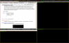
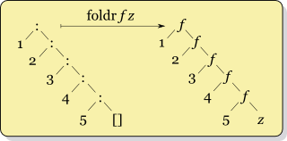
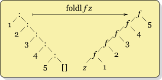
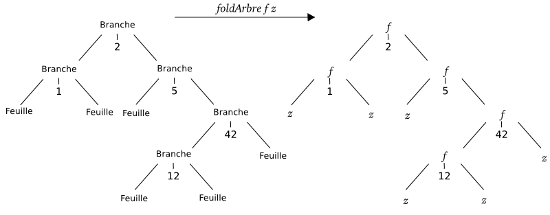

Apprenez la programmation fonctionnelle avec Haskell
Ce tuto a pour but de vous apprendre à programmer en Haskell, un langage fonctionnel pur, avec un modèle d'évaluation paresseuse par défaut, typé statiquement (avec de l'inférence de types). Si vous ne savez pas ce qu'est Haskell, ou pourquoi apprendre à programmer dans ce langage, je vous conseille de passer directement au premier chapitre, qui répond à toutes ces questions. Pour pouvoir suivre ce tuto, il n'est pas nécessaire d'avoir un niveau exceptionnel en programmation (même si ça ne peut qu'aider), mais il est conseillé de savoir faire un peu plus qu'un Hello World dans un autre langage (au niveau des connaissances, la partie I du cours de C sur le site du zéro devrait vous suffire). Ne soyez pas effrayés par les chapitres qui peuvent parfois paraître un peu long, il est parfaitement possible de les lire en plusieurs fois.
Si vous avez des remarques, n'hésitez pas à laisser des commentaires, ils seront pris en compte pour la version suivante.
Ce premier chapitre s'attaque à deux questions importantes.
Dans la première partie, vous verrez pourquoi vous devriez apprendre à programmer en Haskell. Cette partie introduit beaucoup de concepts pas forcément simples à expliquer et que vous ne comprendrez peut-être pas du premier coup. Ce n'est pas grave : ils seront réexpliqués au fur et à mesure du tutoriel. La deuxième partie va vous donner quelques exemples de programmes codés en Haskell. Ensuite, il vous faut quelques outils pour programmer en Haskell : c'est le sujet de la troisième partie.
Haskell est un langage différent des autres : voici quelques-unes de ses particularités.
Haskell est un langage statiquement typé : les types sont déterminés à la compilation, et le compilateur détecte les erreurs de type. Si vous additionnez une chaîne de caractères et un entier, le compilateur refusera de continuer. Plutôt que d'avoir à écrire les types de chaque variable, Haskell utilise l'inférence de types : le compilateur détermine tout seul le type des fonctions, variables et arguments. Cela permet de profiter de la sécurité donnée par le typage statique sans avoir à se fatiguer à écrire des types partout (il est quand même conseillé d'en indiquer quelques-uns, puisqu'ils peuvent aider à comprendre le code). Le système de types du langage est plutôt puissant : on peut s'en servir pour garantir certaines propriétés, par exemple qu'un programme ne renverra jamais d'informations secrètes au monde extérieur.
C'est un langage fonctionnel : les fonctions sont des valeurs comme les autres, qu'on peut prendre en arguments, renvoyer ou appliquer partiellement. Plutôt que de penser un programme comme une suite d'instructions à appliquer les unes à la suite des autres, on essaye de l'exprimer comme des transformations à appliquer aux données en entrées. On peut créer des transformations plus complexes en appliquant une fonction à une autre fonction.
Les fonctions sont toutes pures : elles ne peuvent pas modifier l'environnement extérieur à la fonction, et doivent toujours renvoyer le même résultat si on leur donne les mêmes arguments. Les variables ne sont pas modifiables, ce qui fait qu'on ne peut pas programmer de manière impérative, avec des boucles dans lesquelles on modifie des variables. Cela n'empêche pas de faire des programmes utiles, mais force juste à les exprimer différemment. Les fonctions qui interagissent avec le monde extérieur ont un type spécial, ce qui fait qu'on ne peut pas les utiliser à la place d'une fonction pure.
Enfin, c'est un langage paresseux : les calculs ne sont effectués que lorsque leur résultat est nécessaire. Cela permet dans certains cas d'exprimer des programmes de façon beaucoup plus simple, par exemple quand on ne sait pas jusqu'où on devrait normalement évaluer les données. Cela permet aussi de créer des fonctions plus génériques, où on n'a pas à se soucier de calculer des résultats non nécessaires à l'opération qu'on veut réellement effectuer : si la fonction est suffisamment paresseuse, ils ne seront pas calculés du tout. On peut manipuler de cette façon des structures de données infinies de la même façon qu'on manipulerait des structures de données finies.
Tout cela fait de Haskell un langage intéressant et amusant à apprendre : il est différent de ce que vous avez pu voir jusqu'ici, donc vous allez apprendre beaucoup de choses nouvelles, que, même si vous ne programmez pas tous les jours en Haskell, vous pourrez utiliser pour mieux programmer dans votre langage préféré. D'ailleurs, certains langages intègrent maintenant des concepts empruntés à la programmation fonctionnelle.
Vous vous demandez maintenant après cette présentation quel genre de programmes on peut faire en Haskell. En fait, on peut à peu près faire tout ce qu'on peut faire dans un autre langage, mais ce chapitre va vous montrer quelques exemples.
Jeux et interface graphique
Frag, un FPS en 3D
En Haskell, on peut faire des jeux vidéo (même si, comme dans tous les langages, ça peut devenir compliqué) : Frag est un jeu de tir à la première personne en 3D, utilisant OpenGL pour les graphismes, capable de charger des niveaux au format Quake3. Pour plus de détails, vous pouvez lire la page dédiée sur le wiki haskell : Frag. Voilà une capture d'écran :
xmonad, un gestionnaire de fenêtres
xmonad est un gestionnaire de fenêtre (ou WM) X11 (donc pour Linux et autres). C'est un programme qui se charge de placer les fenêtres au bon endroit à l'écran. Cependant, xmonad à la particularité d'être un tiling wm : par défaut, il organise les fenêtres de telle façon qu'elles occupent tout l'espace de l'écran et ne se recouvrent pas (cependant, certains modes permettent d'arranger les fenêtres différemment). Il est très léger, mais très configurable : le fichier de configuration est écrit en haskell. Il est aussi extensible, avec de nombreux modes de placement des fenêtres, et gère les écrans multiples.
Outils pour développeurs
GHC, le principal compilateur Haskell, est écrit en Haskell, mais c'est aussi le cas de la plupart des autres compilateurs pour Haskell. Pugs, un interpréteur et compilateur pour Perl 6, a aussi été codé en Haskell. darcs, un logiciel de gestion de version distribué, est aussi codé en haskell.
Et plus encore !
Plein d'autres choses
Il aussi possible de faire beaucoup d'autres choses, parmi lesquelles :
Il y a aussi de nombreuses bibliothèques en Haskell, qui permettent de ne pas avoir à réinventer la roue pour coder quelque chose de simple et de faire beaucoup de choses : des applications web, de la musique, du traitement d'images, manipuler du XML, de la cryptographie, des mathématiques et beaucoup d'autres choses. Vous pouvez voir une liste de bibliothèques et d'applications disponibles en Haskell sur hackage.
Il existe de nombreux interpréteurs et compilateurs pour Haskell. Vous pouvez trouver une liste (pas forcément complète) sur la page Implementations du wiki Haskell. Ce tutoriel vous apprendra à vous servir de GHC : c'est un compilateur qui produit du code rapide, et qui supporte un grand nombre d'extensions au langage. Si vous souhaitez vous renseigner sur GHC, lire la documentation, voir si de nouvelles versions sont sorties ou comment le compilateur évolue, rendez-vous sur le site officiel de GHC. Pour permettre d'installer plus facilement GHC et un certain nombre de bibliothèques et d'outils utiles, un paquet unique, appelé Haskell Platform a été créé.
Installation
Sous Windows et Mac OS X
Sous Windows et Mac OS X, l'installation est simple : allez sur le site de Haskell Platform, téléchargez l'installateur pour votre système et lancez-le. Voilà, vous êtes prêts pour la suite de ce tuto.
Sous Linux et autres systèmes Unix
Rendez-vous sur le site de Haskell Platform. Si vous avez de la chance, votre distribution fournit un paquet pour la plateforme. Cliquez donc sur le lien correspondant à votre distribution pour suivre les instructions d'installation. Si votre distribution ne fournit pas de paquet, vous devrez installer la plateforme vous-même. Pour cela, commencez par installer la dernière version de GHC (le mieux est d'utiliser les paquets de votre distribution, la compilation de GHC est assez longue), puis téléchargez le tarball des sources de Haskell Platform sur la même page et suivez les instructions.
Maintenant que vous avez installé les outils nécessaires pour programmer, on peut commencer. Dans le chapitre suivant, vous allez commencer à écrire du code !
Le symbole ^ permet d'élever un nombre à une puissance entière. Utilisez ** pour une puissance non-entière.
Les priorités normales des opérations mathématiques sont respectées. On peut aussi mettre des parenthèses :
Prelude> 3+2*5+7
20
Prelude> (3+2)*(5+7)
60
Nombres négatifs, nombres réels, et grands nombres
Les nombres à virgule se notent avec un . :
Prelude>3.7 * 4.4
16.28
Prelude> 1/2
0.5
On note les nombres négatifs en mettant un - devant. Cependant, il y a quelques subtilités.
Prelude> -3
-3
Prelude> -3 + 4
1
Prelude> 4 + -3
<interactive>:1:0:
Precedence parsing error
cannot mix `+' [infixl 6] and prefix `-' [infixl 6] in the same infix expression
Le problème, c'est que - peut aussi servir pour faire des soustractions, et dans un cas comme ça, ghci n'arrive pas à déterminer si - est utilisé pour noter un nombre négatif ou pour noter une soustraction. La solution, c'est de mettre -3 entre parenthèses, comme ceci :
Prelude> 4 + (-3)
1
Ces parenthèses seront obligatoires dans la plupart des cas, si vous obtenez des erreurs bizarres, c'est peut-être que vous les avez oubliées.
Et finalement, une fonctionnalité intéressante : Haskell supporte les entiers aussi grands que l'on veut. On peut donc écrire quelque chose comme :
Prelude> 2^4096
10443888814131525[...]4190336
J'ai coupé les chiffres du résultat, mais vous pouvez essayer ça chez vous.
Des noms pour les résultats intermédiaires
Motivation : éviter les répétitions
On va maintenant calculer le périmètre d'un cercle. Pour ceux qui ne le savent pas, il est égal à 2{\pi}r, où r est le rayon du cercle. Et \pi vaut environ 3.141592653589793. On va donc calculer le périmètre pour un cercle de rayon r égal à 1.
Et ainsi de suite. Mais l'ordinateur n'est pas une simple calculatrice et on peut faire bien mieux. De plus, les programmeurs détestent la répétition, pour tout un tas de raisons (dont la paresse). Ici, ce qu'on n'arrête pas de répéter, c'est la valeur de \pi. Il faudrait donc un moyen de dire «à chaque fois que je dis pi, remplace par 3.141592653589793».
Pour cela on va utiliser ce qu'on appelle des variables. Dans ghci, on les déclare comme ceci : let nom = valeur . Ensuite, pour l'utiliser, il suffit d'écrire son nom, et il sera remplacé par sa valeur.
Par exemple :
Prelude> let pi = 3.141592653589793
Prelude> 2 * pi * 1
6.283185307179586
Prelude> 2 * 3.141592653589793 *1
6.283185307179586
On retrouve bien le même résultat.
Les noms de variables sont sensibles à la casse : valeurpi et valeurPi sont des variables différentes. Un nom de variable doit commencer par une lettre minuscule.
Ne pas répéter les calculs
L'autre intérêt des variables, c'est de ne pas avoir à répéter les calculs. Imaginons que j'ai un nombre x, et que je veux calculer x(x+1).
Prelude> 3 * (3 + 1)
12
Maintenant, on prend x = 2\pi.
Prelude> (2*pi)*((2*pi)+1
45.76160291153702
En regardant cette ligne, on se rend compte que 2*pi est calculé deux fois. Évidemment, ce n'est pas un calcul très long. Mais si on faisait la même chose avec un calcul qui prend 2 heures, vous seriez contents de ne pas devoir attendre 2 heures de trop. La solution est de déclarer une variable : le compilateur pourrait simplement remplacer le nom d'une variable par son expression (le calcul qui donne la valeur de la variable), mais on se rend compte que ce n'est pas le plus efficace si la variable est utilisée plusieurs fois : il faudrait refaire le calcul à chaque utilisation. C'est pourquoi il fait en sorte que la valeur de la variable ne soit calculée qu'une seule fois. Ce code donne le même résultat, mais évite les calculs superflus :
Prelude> let x = 2*pi
Prelude> x*(x+1)
45.76160291153702
Don't panic
Si vous êtes arrivés jusqu'ici, vous avez peut-être essayé un code comme celui-ci:
Prelude> let r=5
Prelude> 2*pi*r
<interactive>:1:5:
Couldn't match expected type `Double'
against inferred type `Integer'
In the second argument of `(*)', namely `r'
In the expression: 2 * pi * r
In the definition of `it': it = 2 * pi * r
Ou celui-ci si vous utilisez la définition de pi intégrée au Prelude :
Prelude> let r=5
Prelude> 2*pi*r
<interactive>:1:2:
No instance for (Floating Integer)
arising from a use of `pi' at <interactive>:1:2-3
Possible fix: add an instance declaration for (Floating Integer)
In the second argument of `(*)', namely `pi'
In the first argument of `(*)', namely `2 * pi'
In the expression: 2 * pi * r
Ces deux messages effrayants (toutes les erreurs de ghc sont comme ça, il faudra vous y habituer) indiquent une erreur de type. Pourtant, vous multipliez un nombre par un nombre, et si vous remplacez les variables par leur valeur, vous n'obtenez pas d'erreur. Quel est le problème alors ? Il vient de l'interaction entre une limitation du langage introduite pour des raisons de performances et ghci. En gros, quand on entre un nombre, ghc peut le comprendre comme un nombre décimal ou un nombre entier. Quand on entre une expression comme pi * 5 , ghci comprend que 5 doit être vu comme un nombre décimal, mais quand on écrit let r = 5 , le compilateur ne sait pas encore comment r va être utilisé, et décide donc par défaut que r sera un entier. Le problème est qu'on ne peut multiplier que des nombres du même type, et qu'il n'y a pas de conversions implicite entre les types de nombres. On peut régler le problème en forçant r à être un nombre décimal :
Prelude> let r=5.0
Le problème est légèrement plus compliqué, comme vous le verrez dans le chapitre sur les types.
Pour prendre la valeur absolue d'un nombre, il n'y a pas d'opérateur. Par contre, dans le Prelude (c'est le module chargé par défaut en Haskell, qui contient les fonctions et les types de base), il y a une fonction abs qui prend un argument et renvoie sa valeur absolue. Pour appeler une fonction à un argument, il suffit d'écrire le nom de la fonction, puis l'argument, le tout séparé par un espace. Par exemple, abs 5 donne 5, abs (-5) donne 5, et abs (1-3) donne 2. max est une fonction à deux arguments qui renvoie le plus grand de ses deux arguments (min renvoie le plus petit). On l'appelle comme ceci : max 5 3 donne 5. La syntaxe générale pour appeler une fonction est la suivante : fonction argument_1 argument_2 ... argument_n .
Une expression comme abs 15 + 1 est interprétée comme (abs 15) + 1 . Si vous voulez calculer abs 16 , il faut mettre des parenthèses autour de l'argument, comme ceci : abs (15 + 1) (cela se produit avec tous les opérateurs).
Les opérateurs sont aussi des fonctions (et inversement)
La fonction mod permet de trouver le reste de la division euclidienne d'un entier par un autre. Par exemple, mod 42 5 donne 2. On pourra préférer une notation infixe, comme 42 mod 5. Cependant, si on fait ça, le compilateur va penser qu'on veut appliquer la fonction 42 à mod et 5, et comme 42 n'est pas une fonction mais un nombre, ça ne va pas marcher. Mais le langage fournit un mécanisme pour régler ce problème : pour utiliser une fonction en notation infixe (comme un opérateur), il suffit d'entourer son nom avec des accents graves (`, AltGr+7 sur un clavier azerty). Le code suivant donne bien ce que l'on cherche : 42 `mod` 5 . Une autre fonction que vous aimeriez peut-être utiliser en notation infixe est la fonction div, qui donne le quotient de la division euclidienne. Si les fonctions sont des opérateurs, les opérateurs sont aussi... des fonctions ! En effet, pour utiliser un opérateur en position préfixe, il suffit d'entourer son nom avec des parenthèses. Par exemple, ces deux codes sont équivalents : 1 + 2 et (+) 1 2 . Les opérateurs ne sont donc pas des objets à part, impossibles à manipuler et à transformer, mais bien des fonctions comme les autres. On peut donc en définir (vous verrez comment au prochain chapitre), et les manipuler exactement de la même manière que les fonctions, ce qui nous facilitera grandement la vie quand nous utiliserons des fonctions d'ordre supérieur, qui prennent d'autres fonctions comme arguments.
Paires
Les paires sont une façon de stocker deux valeurs en même temps. Il n'y a pas grand-chose à savoir : pour noter les paires, on écrit entre parenthèses les deux valeurs séparées par une virgule, comme ceci : (5,12) . Les deux éléments de la paire peuvent être de types différents. Ils peuvent même être des paires ! Par exemple, (5,(6,7)) est aussi une paire, dont le premier élément est 5 et dont le second élément est une paire. Les fonctions fst et snd permettent d'obtenir respectivement les premiers et deuxièmes éléments d'une paire. Un exemple :
Prelude> let paire = (5,(6,7))
Prelude> snd paire
(6,7)
Prelude> fst (snd paire) + snd (snd paire)
13
Les listes permettent de stocker un certain nombre d'éléments du même type. Par exemple, [1,2,3,4,5] est une liste. Comme vous le voyez, les listes sont notées entre crochets, et les éléments sont séparés par des virgules. Par contre, [1,2,(3,4)] n'est pas une liste valide parce que les éléments n'ont pas le même type. Un cas particulier de liste est [] , qui représente la liste vide.
Opérations sur les listes
Il existe beaucoup de fonctions pour manipuler les listes et toutes les présenter serait beaucoup trop long. Je ne montrerai que les plus importantes. Pour prendre deux listes et les mettre bout à bout, on utilise l'opérateur de concaténation ++ :
Prelude> [1,2,3] ++ [4,5,6]
[1,2,3,4,5,6]
Prelude> [1,2] ++ [(3,4)]
<interactive>:1:5:
Couldn't match expected type `Integer'
against inferred type `(Integer, Integer)'
Expected type: [Integer]
Inferred type: [(Integer, Integer)]
In the second argument of `(++)', namely `b'
In the expression: a ++ b
On obtient une erreur dans le deuxième cas, puisque la liste obtenue aurait des éléments de types différents. Attention, ++ n'est pas très efficace : plus la première liste est longue, plus ++ prend de temps. Cela prend beaucoup de temps de rajouter un élément à la fin d'une longue liste. Au contraire, si on ajoute un élément au début de la liste, quelle que soit la liste, l'opération est instantanée. On pourrait écrire [0]++[1,2,3] , mais il existe un opérateur exprès pour ça : :. Cet opérateur, parfois appelé cons permet d'ajouter un élément au début de la liste. C'est l'opération de base permettant de construire une liste, toutes les autres opérations qui créent une liste l'utilisent. cons ne copie pas la liste devant laquelle on rajoute un élément, mais puisqu'on ne peut pas la modifier, vous ne vous en rendrez pas compte. Cependant, c'est ça qui lui permet d'être si rapide.
Le deuxième exemple montre que l'on peut toujours écrire une liste à partir de : et de la liste vide. D'ailleurs, noter une liste entre crochets, comme [1,2,3] , est seulement un raccourci pour cette notation.
head et tail sont les opérations inverses de cons : head donne le premier élément d'une liste, et tail la liste à laquelle on a retiré ce premier élément. Comme cons, ces opérations sont instantanées et ne demandent pas de copier la liste.
Prelude> let xs = [0,1,2,3]
Prelude> head xs
0
Prelude> tail xs
[1,2,3]
Prelude> head xs:tail xs
[0,1,2,3]
Prelude> head []
*** Exception: Prelude.head: empty list
Prelude> tail []
*** Exception: Prelude.tail: empty list
Comme vous le voyez, head et tail renvoient une erreur quand la liste est vide, puisqu'une liste vide n'a pas de premier élément.
Si on veut prendre un élément particulier d'une liste, on peut utiliser l'opérateur !!. liste !! n donne l'élément de rang n de la liste (les éléments sont numérotés à partir de 0). Si la liste n'a pas d'élément de rang n, on obtient une erreur.
Prelude> [1,2,3] !! 0
1
Prelude> [1,2,3] !! 3
*** Exception: Prelude.(!!): index too large
Les fonctions take et drop permettent respectivement de prendre les n premiers éléments de la liste, et la liste à laquelle on a enlevé les n premiers éléments. Ces fonctions ne renvoient pas d'erreur quand n est trop grand.
Prelude> let xs = [1,2,3,4,5]
Prelude> take 2 xs
[1,2]
Prelude> drop 2 xs
[3,4,5]
Prelude> take 100 xs
[1,2,3,4,5]
Prelude> drop 100 xs
[]
La fonction elem permet de tester si un élément est dans une liste ou non. Elle renvoie True si c'est le cas, False sinon. On l'utilise souvent en notation infixe.
Avec reverse, il est possible de renverser l'ordre d'une liste.
Prelude> reverse [1,2,3]
[3,2,1]
length renvoie la longueur d'une liste. Les fonctions minimum et maximum renvoient, sans surprise, le minimum et le maximum des éléments d'une liste (à condition qu'on puisse les ordonner). Enfin sum et product renvoient respectivement la somme et le produit des éléments d'une liste de nombres. Quelques exemples :
Prelude> let liste = [1,42,47,85,62,31,12,93]
Prelude> length liste
8
Prelude> length []
0
Prelude> maximum liste
93
Prelude> minimum liste
1
Prelude> sum liste
373
Prelude> product liste
359901496080
Il est aussi possible de créer des listes de listes. Les listes peuvent avoir des longueurs différentes, mais doivent toutes contenir des éléments du même type. Par exemple, [[],[]] est une liste de liste valide, mais [[5,6],[[]]] ne marche pas : le premier élément est une liste d'entiers et le deuxième est une liste de listes. On peut transformer une liste de listes en liste tout court avec la fonction concat :
Dans les exemples précédents, toutes les listes de nombres ont été entrées à la main. Mais si on voulait la liste des nombres de 1 à 100 ? On pourrait les entrer à la main, mais ce serait bien trop long. Heureusement, Haskell offre une syntaxe spéciale pour les suites arithmétiques. Pour afficher tous les entiers entre deux entiers donnés, il suffit d'écrire entre crochets le premier nombre, puis le dernier nombre et de mettre deux points entre les deux.
Prelude> [0..10]
[0,1,2,3,4,5,6,7,8,9,10]
Prelude> let n = 42
Prelude [n..n+5]
[42,43,44,45,46,47]
On peut écrire n'importe quelle suite arithmétique en donnant les deux premiers nombres, puis le dernier. On peut aussi utiliser cette notation quand on veut que les nombres soient dans l'ordre décroissant :
Cependant, cela ne marche qu'avec les suites arithmétiques. Il y a aussi quelques problèmes avec les nombres à virgules, donc il vaut mieux éviter de les utiliser avec cette notation. Ces problèmes ne sont pas causés par le langage en lui-même, mais par la façon dont les nombres à virgule sont représentés en mémoire. Par exemple :
On peut bien sûr combiner cette notation avec toutes les fonctions sur les listes. Par exemple, pour calculer 20! (le produit de tous les nombres de 1 à 20), il suffit d'utiliser product :
Prelude> product [1..20]
2432902008176640000
Des listes infinies
Que se passe-t-il si on écrit [1..] ? Si on essaye, on obtient
J'ai appuyé sur Ctrl-C pour l'arrêter, sinon il allait remplir mon écran de chiffres, mais si je l'avais laissé tourner, il aurait affiché la liste des tous les nombres à partir de 1. On peut donc obtenir des listes infinies en Haskell. On peut les manipuler presque comme des listes normales : on peut prendre certains de leurs éléments, ajouter un élément devant, ... En général, on prend la précaution de mettre quelque chose comme take 10 avant d'afficher la liste pour éviter les catastrophes.
Prelude> take 10 [1..]
[1,2,3,4,5,6,7,8,9,10]
Prelude> take 10 (0:[1..])
[0,1,2,3,4,5,6,7,8,9]
Si on peut faire des listes infinies, c'est grâce à l'évaluation paresseuse : un élément de la liste n'est calculé que lorsqu'il est réellement demandé. Cependant, certaines fonctions comme reverse, minimum et maximum, sum et product ne se terminent pas sur les listes infinies, car elles ont besoin de lire la liste en entier pour pouvoir répondre.
Quelques autres fonctions permettent de manipuler les listes infinies : cycle répète une liste une infinité de fois, repeat répète seulement un élément. La fonction replicate fait la même chose que repeat, sauf qu'elle prend un argument qui indique combien de fois l'élément doit être répété.
Prelude> take 20 (cycle [0..2])
[0,1,2,0,1,2,0,1,2,0,1,2,0,1,2,0,1,2,0,1]
Prelude> take 20 (repeat 0)
[0,0,0,0,0,0,0,0,0,0,0,0,0,0,0,0,0,0,0,0]
Prelude> replicate 5 0
[0,0,0,0,0]
Chaînes de caractères
Notation
On note une chaîne de caractères entre guillemets doubles. Par exemple, "Hello World" (essayez d'entrer ça dans ghci). Pour échapper les caractères gênants (comme " et \), on utilise un \. Exemple : "Plein de \" et de \\" .
Ce sont des listes !
En réalité, les chaînes de caractères sont juste des listes de caractères. Un caractère se note entre apostrophes, par exemple 'a' . On peut aussi utiliser des séquences d'échappement quand on note des caractères : ' ' représente un retour à la ligne. Cela veut dire que l'on peut utiliser toutes les opérations disponibles sur les listes sur des chaînes de caractères :
Dans le prochain chapitre, vous allez apprendre à définir des fonctions et comment écrire du code dans un fichier pour l'utiliser dans ghci. Vous verrez aussi beaucoup de points de syntaxe qui n'ont pas été abordés dans ce chapitre.
Dans ce chapitre, vous n'allez plus uniquement utiliser ghci : la première partie va vous montrer comment écrire du code dans un fichier, et le charger dans ghci pour tester les fonctions définies dedans. Dans les deux parties suivantes, vous allez découvrir comment utiliser les conditions, mais aussi une technique très utilisée en Haskell : le filtrage de motif.
Créez un fichier nommé declaration.hs avec pour contenu :
reponse = 42
On va maintenant le charger. Pour cela, ouvrez une console, naviguez jusqu'au répertoire où se trouve votre fichier et lancez ghci.
Prelude>:l declaration.hs
[1 of 1] Compiling Main ( declaration.hs, interpreted )
Ok, modules loaded: Main.
*Main> reponse
42
On a chargé le fichier avec la commande :l. ghci indique qu'il a réussi à charger le fichier. Maintenant, la variable reponse vaut 42. Vous l'aurez compris, on déclare une variable comme ceci : nomVariable = valeur Comme quand on définit des variables dans ghci, on peut réutiliser le résultat des calculs précédents.
foo = 42
foo = 1337
Si on définit deux fois une variable, le compilateur se plaint :
Prelude> :l multi.hs
[1 of 1] Compiling Main ( multi.hs, interpreted )
multi.hs:2:0:
Multiple declarations of `Main.foo'
Declared at: multi.hs:1:0
multi.hs:2:0
Failed, modules loaded: none.
ghci indique ici qu'il n'a pas pu charger le fichier car foo est défini deux fois: à la ligne 1 et à la ligne 2.
Définir des fonctions simples
On peut aussi déclarer des fonctions.
Un exemple vaut mieux qu'un long discours :
perimetreCercle r = 2 * pi * r
Cette ligne de code définit une fonction perimetreCercle, qui prend un argument r, et renvoie 2*pi*r .
Vous pouvez charger ce fichier dans ghci pour tester la fonction :
Prelude> :l fonction
Prelude> perimetreCercle 5
31.41592653589793
Prelude> 2*pi*5
31.41592653589793
Pour appeler la fonction, on utilise la même syntaxe que pour les fonctions prédéfinies. Ce qui se passe, c'est que le corps de la fonction est exécuté, avec dans la variable r qui correspond à l'argument la valeur de l'argument donnée quand on appelle la fonction. C'est pour ça que, à la place de perimetreCercle 5 , on aurait très bien pu écrire 2*pi*5 .
Si vous avez déjà programmé dans un langage comme le C, vous remarquerez que la définition d'une fonction en Haskell ressemble plus à la définition d'une fonction en maths qu'à la définition d'une fonction en C. f(x)=2*\pi*x
À part les indications de type, la différence principale, c'est qu'une fonction C est une suite d'instructions, alors qu'une fonction Haskell est une expression (un calcul, un appel de fonction, ...), et donc qu'il n'y a pas d'équivalent de return. D'ailleurs, en Haskell, mettre plusieurs instructions dans une fonction n'aurait aucun sens, puisque les instructions d'avant n'auraient aucune influence sur l'exécution du programme (le seul moyen d'influencer l'exécution du programme serait par des effets de bords, comme la modification d'une variable globale, mais ceux-ci sont interdits en Haskell).
On peut aussi définir des fonctions prenant plusieurs arguments :
Cette fonction calcule le périmètre d'un rectangle : vous pouvez la tester dans ghci. On peut aussi réutiliser les fonctions déjà définies. Par exemple, sachant qu'un carré est un rectangle dont les côtés ont même longueur, comment calculeriez-vous le prérimètre d'un carré ?
La réponse est : rien. Le compilateur est capable de comprendre les définitions, même si elles font référence à des fonctions définies plus tard dans le fichier. On peut d'ailleurs faire la même expérience avec des variables qui dépendent l'une de l'autre.
Commentaires
Il est souvent utile de commenter son code, pour le rendre plus compréhensible. Deux types de commentaires sont disponibles en Haskell :
Les commentaires sur une ligne. Ils commencent par -- et le commentaire continue jusqu'à la fin de la ligne.
reponse = 42 -- commentaire à propos de cette déclaration
Les commentaires sur plusieurs lignes. Ils commencent par {- et se terminent par -}. Ils peuvent même être imbriqués :
{-
Un commentaire sur plusieurs lignes
-}
variable = "test"
{-
un commentaire {- imbriqué. -} le commentaire continue -}
message = "ceci n'est pas dans un commentaire"
Cette deuxième partie va vous apprendre à définir des fonctions un peu plus intéressantes.
if/then/else
Une construction utile est if. if renvoie le résultat d'une expression ou d'une autre suivant qu'une condition est vraie ou fausse. Elle s'écrit comme ceci : if condition then expression 1 else expression 2 .
condition est une expression qui donne un booléen, c'est-à-dire vrai ou faux. Si la condition vaut True, expression 1 est renvoyée, sinon expression 2 est renvoyée. En pratique, seule l'expression renvoyée est calculée.
Pour utiliser if, il est donc essentiel de savoir manipuler les booléens. Un booléen a deux valeurs possibles : True (vrai) et False (faux). Les noms sont sensibles à la casse, donc n'oubliez pas la majuscule.
Opérateurs de comparaison
Dans une condition, ce qui nous intéressera en général, c'est de comparer des objets. Pour cela, il existe des opérateurs de comparaison, qui prennent deux arguments et renvoient un booléen :
Opérateur
Renvoie True si...
==
les deux arguments sont égaux
/=
les deux arguments sont différents
<
le premier argument est inférieur au deuxième
>
le premier argument est supérieur au deuxième
<=
le premier argument est inférieur ou égal au deuxième
>=
le premier argument est supérieur ou égal au deuxième
La ligne la plus importante à retenir est celle en gras : on écrit /=, et non pas !=.
Testons ces opérations sur quelques valeurs :
Prelude> 42 == 1337
False
Prelude> 4 < 5
True
Prelude> (2*7+6) >= (7*7-23)
False
Prelude> (1,7,3) == (4,2)
<interactive>:1:11:
Couldn't match expected type `(t, t1, t2)'
against inferred type `(t3, t4)'
In the second argument of `(==)', namely `(4, 2)'
In the expression: (1, 7, 3) == (4, 2)
In the definition of `it': it = (1, 7, 3) == (4, 2)
Comme vous le voyez, on ne peut comparer (même pour l'égalité) que des valeurs du même type.
Combiner des booléens
Quand ces conditions ne sont pas suffisantes, on peut les combiner. Pour cela, on dispose de trois fonctions déjà définies. La fonction not prend un argument et l'inverse simplement : not False donne True et not True donne False.
Si on veut que deux conditions soient vraies, on peut utiliser l'opérateur et, noté &&. Cet opérateur ne renvoie True que si ses deux arguments sont égaux à True. Par exemple, True && False donne False, et True && True donne True.
Enfin, l'opérateur || (ou) permet de tester si au moins une des deux conditions est vraie. Donc, False || False renvoie False, et True || False renvoie True.
Pour montrer comment fonctionnent ces trois fonctions, on va coder un exemple qui utilise les trois. Le but est de code une fonction "ou exclusif" (ou xor) qui prend deux arguments et renvoie True si un seul de ses arguments vaut True, False sinon. Vous pouvez essayer de trouver comment le faire vous-même. Si vous ne trouvez pas (ou si vous voulez vérifier votre solution), regardez la solution.
On va appeler les deux arguments x et y. On se rend compte que xor x y vaut True seulement si deux conditions sont respectées : x ou y doit valoir True (donc x || y doit donner True). De plus, x et y ne doivent pas être tous les deux vrais : x && y doit donner False, donc not (x && y) doit donner True. Finalement, on aboutit à ceci : xor x y = (x || y) && not (x && y)
Utiliser if
Vous pouvez tester if dans ghci :
Prelude> let x = 7
Prelude> if x > 5 then 42 else 0
42
Prelude> let x = 2
Prelude> if x > 5 then 42 else 0
0
Maintenant, une astuce utile. Prenons les fonctions suivantes
nul x = if x == 0 then True else False
nonNul x = if x == 0 then False else True
On peut faire plus court : quand notre if renvoie des booléens, on peut enlever le if, comme ceci :
nul x = x == 0
nonNul x = not (x==0)
On va utiliser if pour écrire une fonction qui prend un entier et renvoie "Negatif" s'il est strictement inférieur à 0, "Positif" sinon.
signe x = if x >= 0 then "Positif" else "Negatif"
On pourrait écrire ce code sur plusieurs lignes :
signe x = if x >= 0
then "Positif"
else "Negatif"
Mais on ne peut pas écrire ça :
signe x = if x >= 0
then "Positif"
else "Negatif"
En effet, l'indentation est importante en Haskell : ce qui est à l'intérieur de la fonction doit être plus indenté que le début de la déclaration de la fonction.
Filtrage de motif
case of
L'autre structure conditionnelle importante est case of. Observons là sur un exemple simple :
enLettres x = case x of
0 -> "Zero"
1 -> "Un"
2 -> "Deux"
_ -> "Trop grand!"
Cette construction peut vous faire penser à un switch en C. On écrit case variable of , et en dessous une série de motifs ainsi que ce qu'il faut renvoyer quand variable correspond à un de ces motifs. Donc x est comparé aux motifs dans l'ordre, et on obtient le résultat de l'expression associée au premier motif qui correspond. Si aucun motif ne correspond, on obtient une erreur. Dans cet exemple, on a deux types de motifs : une valeur (0, 1, 2) et _ qui est un motif qui correspond à n'importe quelle valeur.
enLettres x = case x of
_ -> "Trop grand!"
0 -> "Zero"
1 -> "Un"
2 -> "Deux"
Puisque les motifs sont testés dans l'ordre, si on changeait l'ordre des motifs, on obtiendrait des résultats différents. Ici, enLettres renverra toujours "Trop grand!" .
On peut aussi écrire des motifs plus compliqués :
ouEstZero x = case x of
(0,0) -> "Gauche et droite"
(0,_) -> "Gauche"
(_,0) -> "Droite"
_ -> "Nul part"
Ici, on voit une nouvelle façon de construire des motifs : on peut utiliser _ à l'intérieur de structures plus compliquées, pour dire qu'on ne se soucie pas d'une partie de cette structure. Donc le motif (0,_) correspond à toutes les paires donc le premier élément est 0.
On peut aussi utiliser le filtrage de motif pour décomposer une paire.
sommePaire t = case t of
(x,y) -> x+y
Quand on met un nom de variable dans un motif, cela ne signifie pas que cette partie du motif doit être égale à la variable. Un nom de variable se comporte plutôt comme un _, c'est-à-dire qu'il correspond à tout, mais en plus, dans l'expression à droite du motif, cette variable vaudra ce qu'il y avait à sa place dans le motif. Par exemple, si on filtre la valeur (0,7) avec le motif et le résultat (0,x) -> x+1 , on aura x=7 donc on obtiendra 8.
On peut combiner toutes ces idées pour créer des fonctions plus compliquées. Cette fonction renvoie le premier élément non nul d'une paire, ou 0.
premierNonNul t = case t of
(0,0) -> 0
(0,y) -> y
(x,0) -> x
(x,y) -> x
On remarque que certains motifs se recoupent. Par exemple, les cas (0,0) -> 0 et (0,y) -> y peuvent se réécrire avec un seul motif (0,y) -> y De même, on peut remplacer les cas (x,0) -> x et (x,y) -> x par un seul cas, (x,_) -> x On obtient un code avec seulement deux cas :
premierNonNul t = case t of
(0,y) -> y
(x,_) -> x
On ne peut pas mettre deux fois la même variable dans un motif (donc il est impossible de faire un motif (x,x) ). Dans chaque cas, les valeurs renvoyées doivent être du même type.
Style déclaratif
Le filtrage de motif est un outil puissant, et on se rend compte qu'on fait très souvent un filtrage sur les arguments de la fonction. Quand on doit prendre en compte la valeur de plusieurs arguments, le filtrage finit par donner des choses assez peu claires. Ici, on prend comme exemple une version de premierNonNul qui prend deux arguments au lieu de prendre une paire de nombres :
premierNonNul x y = case (x,y) of
(0,y) -> y
(x,_) -> x
On doit construire une paire avec les deux arguments, ce qui finit par donner des codes pas très naturels.
premierNonNul 0 y = y
premierNonNul x _ = x
On préfère en général écrire le filtrage de cette façon, quand c'est possible.
Il est aussi possible de remplacer dans certains cas if par des gardes :
signePremier (x,_)
| x > 0 = "Positif"
| x < 0 = "Negatif"
| otherwise = "Nul"
Les gardes permettent d'exécuter du code différent suivant des conditions : si le motif correspond, l'expression correspondant à la première garde qui renvoie True est exécutée. La garde otherwise permet de prendre en compte tous les cas pas encore traités (en réalité, otherwise est une constante qui vaut True). Il ne faut pas mettre de signe égal entre le motif et les gardes, sous peine de récolter une erreur de syntaxe.
n-uplets
Vous avez déjà vu les paires. Mais en fait, ce ne sont qu'un exemple d'un type de données plus général : les n-uplets. Les paires sont des n-uplets à 2 éléments, mais on peut écrire des n-uplets avec plus d'éléments. Par exemple (1,2,3,True). On utilise la même notation pour le filtrage de motif sur les n-uplets que pour les paires. Cependant, fst (1,2,3,True) donne une erreur de type : les fonctions sur les n-uplets ne fonctionnent que pour des n-uplets de taille fixée. Mais vous pouvez, comme exercice, coder les fonctions fst3, snd3 et thr3 qui permettent d'obtenir respectivement le premier, deuxième et troisième élément d'un triplet en utilisant le filtrage de motif. Solution :
fst3 (a,_,_) = a
snd3 (_,b,_) = b
thr3 (_,_,c) = c
Si vous lisez des articles en anglais sur Haskell, les n-uplets sont appelés tuples.
Définir des valeurs intermédiaires
Parfois il peut être utile dans une fonction de définir des valeurs intermédiaires. Par exemple, on veut créer une fonction qui donne le nombre de racines réelles d'un polynôme du second degré (de la forme ax^2+bx+c). On sait que le discriminant est donné par \Delta=b^2-4ac, et que s'il est positif, il y a deux racines réelles, s'il est nul, il y en a une, et s'il est négatif, il n'y en a pas. Donc on peut penser notre fonction comme ceci : on calcule d'abord le discriminant, puis on regarde son signe pour donner le nombre de racines. Pour faire cela, on a besoin de définir une variable locale à notre fonction. Il y a deux façons de faire ça.
let ... in ...
La première méthode est d'utiliser let . On l'utilise ainsi : let variable = valeur in expression . Par exemple, on pourrait coder notre fonction nombreDeRacines ainsi :
nombreDeRacines a b c = let delta = b^2 - 4*a*c in
if delta > 0 then 2
else if delta == 0 then 1
else 0
where
On peut aussi déclarer une variable locale avec where . Par exemple :
nombreDeRacines' a b c = if delta > 0 then 2
else if delta == 0 then 1
else 0
where delta = b^2 - 4*a*c
On peut aussi déclarer plusieurs variables avec un seul where, comme dans cet exemple qui ne fait rien d'utile :
diffSommeProd a b = produit - somme
where produit = a*b
somme = a+b
Un peu d'exercice ?
Il est temps de mettre en pratique ce que vous avez appris. Ces exercices ne sont pas corrigés, mais vous pouvez tester votre code : s'il marche, c'est bon signe. Une bonne habitude à prendre est d'essayer toujours de trouver les cas qui font que le code ne marche pas.
Des fonctions myMin et myMax qui prennent chacune deux arguments et renvoient respectivement le minimum et le maximum des deux arguments
À partir de ces fonctions, codez une fonction qui donne le minimum ou le maximum de 4 nombres
En utilisant myMin et myMax, codez une fonction bornerDans qui prend trois arguments et renvoie le troisième argument s'il est dans l'intervalle formé par les deux premiers, ou renvoie la borne de l'intervalle la plus proche. Exemples:
bornerDans 5 7 6 = 6 -- dans l'intervalle
bornerDans 5 7 4 = 5 -- trop petit
bornerDans 5 7 9 = 7 -- trop grand
Codez une fonction qui prend trois arguments et dit si le troisième argument est dans l'intervalle fermé formé par les deux premiers arguments (on considèrera que le premier argument est inférieur ou égal au deuxième)
En n'utilisant qu'une seule comparaison, codez une fonction qui prend une paire de nombre et renvoie cette paire triée
Codez une fonction qui prend deux vecteurs représentés par des paires de nombres, et donne la somme de ces deux vecteurs
Codez une fonction qui prend un vecteur et renvoie sa norme
Codez une fonction qui prend un nombre et un vecteur, et renvoie le produit du vecteur par ce nombre
Codez une fonction qui prend deux vecteurs et renvoie le produit scalaire de ces deux vecteurs
Pour l'instant, vous n'avez vu que deux applications du filtrage de motif : soit vous prenez plusieurs valeurs d'un type pour lequel il n'y a qu'un seul choix (par exemple un couple d'entiers ne peut pas être autre chose qu'un couple), soit vous distinguez les valeurs d'un type qui peut en prendre plusieurs (par exemple, True ou False pour les booléens). Mais en fait, le filtrage de motifs permet de faire les deux choses à la fois.
Manipuler des listes
Vous avez vu au chapitre précédent que toutes les listes pouvaient être construites à l'aide de la liste vide [] et de l'opérateur : qui combine un élément et une liste pour former une nouvelle liste avec l'élément ajouté en premier. C'est pratique pour construire des listes, mais on peut aussi s'en servir pour les détruire, c'est à dire examiner ce qu'il y a à l'intérieur, par du filtrage de motif.
Par exemple, si on veut créer une fonction qui renvoie 0 si la liste vide, son premier élément sinon, on peut la coder en utilisant un filtrage (puisqu'elle ne peut renvoyer qu'un type, cette fonction ne marche qu'avec des listes de nombres) :
-- Version sans filtrage
premier l = if null l then 0 else head l
-- Version avec filtrage
premier' l = case l of
[] -> 0
x:_ -> x
-- Ou même :
premier'' [] = 0
premier'' (x:_) = x
Dans les deux versions avec filtrage, on distingue les deux formes possibles pour la liste donnée en argument. Les parenthèses sont nécessaires dans la deuxième version avec filtrage, comme pour l'application de fonction : premier'' x:_ serait compris comme (premier'' x):_ .
On peut aussi profiter d'une syntaxe spéciale pour créer un motif qui correspond à une liste de longueur connue, par exemple dans ce code qui additionne les deux premiers éléments d'une liste :
addition [] = 0
addition [x] = x
addition (x:y:_) = x + y
De cette façon, on peut recoder quelques fonctions sur les listes, par exemple la fonction head qui retourne le premier élément d'une liste (mais vous pourriez aussi code tail ou null de la même façon) :
head' (x:_) = x
Quelque chose pourrait vous choquer dans ce code : il ne traite pas tous les cas possibles. Qu'est-ce qui se passe si on donne la liste vide à la fonction ? Rien de bien : on obtient une erreur.
*** Exception: <interactive>:1:4-18: Non-exhaustive patterns in function head'
Par défaut, GHC ne vérifie pas que le filtrage traite tous les cas possibles, mais vous pouvez activer un avertissement avec l'option -fwarn-incomplete-patterns. L'erreur qu'on obtient dans le cas de la liste vide n'est pas très claire, mais il est possible de renvoyer son propre message d'erreur avec la fonction error :
head' [] = error "Liste vide"
head' (x:_) = x
Le filtrage de motif est quelque chose de très pratique (essayez de coder "addition" sans : le code serait beaucoup moins clair), mais pas magique : on ne peut pas utiliser n'importe qu'elle fonction dans un filtrage. Par exemple, on aimerait bien créer une fonction qui renvoie le prénom d'une personne lorsqu'on lui donne une chaîne de la forme "Bonjour <prénom>!". Une chaîne de caractères est une liste de caractères, donc on peut utiliser les même fonctions dessus, dont la fonction ++ qui concatène deux listes.
prenom msg = case msg of
"Bonjour " ++ prenom ++ "!" -> prenom
_ -> "Anonyme"
Mais ce genre de code ne marche pas : on ne peut pas utiliser n'importe quelle fonction dans un filtrage de motif. En fait, les seules choses qu'on a le droit d'utiliser sont les constructeurs du type qu'on cherche à filtrer. Ils correspondent à la façon dont le type a été défini, et aussi à la représentation en mémoire du type. Pour les listes, les constructeurs sont : et []. Pour les booléens, ce sont True et False, et pour les nombres, c'est n'importe quel nombre : par exemple, on peut utiliser 0 comme un motif.
Gestion des erreurs
Le filtrage de motifs et les types sommes (pour lesquels on a plusieurs constructeurs possibles) ne servent pas qu'avec les listes. Par exemple, ils servent pour la gestion des erreurs.
Maybe : pour représenter l'absence de valeur
Le type Maybe a deux constructeurs : Nothing qui ne prend pas de paramètre, et Just, qui prend une valeur en paramètre. Par exemple, on peut écrire Nothing , Just 42 ou même Just Nothing et Just (Just 42) (on a alors un Maybe qui contient lui-même un Maybe).
On l'utilise souvent pour la valeur de retour d'une fonction qui peut échouer : par exemple, si on a une annuaire, et une fonction qui recherche le numéro de téléphone d'une personne à partir de son nom, elle renverrait Nothing si la personne n'est pas dans l'annuaire, et Just (numéro) si la personne est dans l'annuaire.
Pour manipuler ces valeurs, on utilise le filtrage de motif. Par exemple, ici, on a une fonction demanderLeNomDuChat qui appelle un numéro, et renvoie le nom du chien. Mais cette fonction peut échouer : par exemple, la personne qu'on appelle peut ne pas répondre. Elle doit donc renvoyer une valeur de type Maybe. Maintenant, si on veut faire une fonction qui renvoie (peut-être) le nom du chat d'une personne à partir de son nom, on récupère d'abord le numéro de téléphone dans Maybe. Pour vérifier si on a vraiment un numéro de téléphone, on utilise le filtrage :
nomDuChat nom = case numeroDeTelephone nom of
Nothing -> Nothing
Just numero -> demanderLeNomDuChat numero
En fait, Nothing peut être vu comme la valeur null qui est disponible dans certains langages de programmation, et qui sert aussi à indiquer l'absence de valeur intéressante. Cependant, il y a une différence importante : les types ne portent pas de valeur nulle par défaut, mais seulement lorsqu'on les "enveloppe" dans Maybe. L'avantage, c'est qu'on ne peut pas accidentellement passer la valeur nulle à une fonction qui ne l'attend pas, puisque le type attendu est différent. C'est pour ça qu'il faut faire bien attention à ne pas oublier Just. Par exemple, le code ci-dessous est incorrect :
-- Renvoie l'adresse ip du serveur d'un site web
adresseIP "www.siteduzero.com" = "92.243.25.239"
adresseIP "progmod.org" = "178.33.42.21"
adresseIP "google.fr" = "66.249.92.104"
adresseIP _ = Nothing
Pourquoi ? Parce que dans presque tous les cas, on renvoie une valeur simple, qui ne peut jamais valoir Nothing, alors qu'on renvoie Nothing si le site n'est pas trouvé. Les types de retour ne correspondent pas, donc ce code est invalide. Il faut penser à mettre à chaque fois les valeurs définies dans Just :
-- Renvoie l'adresse ip du serveur d'un site web
adresseIP "www.siteduzero.com" = Just "92.243.25.239"
adresseIP "progmod.org" = Just "178.33.42.21"
adresseIP "google.fr" = Just "66.249.92.104"
adresseIP _ = Nothing
Une dernière chose : pour rechercher dans un "annuaire" représenté par une liste de couples (clé, valeur), vous pouvez utiliser la fonction lookup : lookup cle liste renvoie Just valeur si la clé est trouvée dans la liste, et Nothing sinon. Exemples :
Prelude> let ips = [("www.siteduzero.com","92.243.25.239"),
("progmod.org", "178.33.42.21"), ("google.fr", "66.249.92.104")]
Prelude> lookup "www.siteduzero.com" ips
Just "92.243.25.239"
Prelude> lookup "reddit.com" ips
Nothing
Exemple : des fonctions mathématiques
Vous savez surement qu'il y a des opérations qu'on n'a pas le droit de faire : par exemple, on ne peut pas diviser par 0. Mais il arrive souvent qu'on fasse des calculs avec des nombres dont on ne peut pas être sûr à l'avance si ils sont égaux à 0 ou pas. Par défaut, ce genre d'erreurs donne une exception qui arrête l'éxécution du programme (il y a des moyens de les intercepter, mais vous ne verrez pas ça tout de suite). Mais on pourrait adopter une autre solution : puisque la division peut échouer, pourquoi ne pas lui faire renvoyer une valeur dans Maybe ?
Par exemple, on pourrait faire cela :
-- On utilise la fonction div, qui correspond à la division euclidienne
-- On la met entre ` ` pour l'utiliser comme un opérateur
divise _ 0 = Nothing
divise x y = Just (x `div` y)
Mais, quand on essaye de faire des calculs compliqués, on a des problèmes, puisque les autres opérations n'attendent pas "peut-être un nombre", mais un nombre normal. Il y a alors deux solutions : soit on utilise à chaque fois case sur le résultat de divise pour distinguer les différents cas, soit on adapte les opérations mathématiques pour prendre des valeurs dans Maybe comme arguments. C'est cette deuxième approche qui nous intéresse ici.
On va commencer par la fonction plus :
-- Cas faciles : lorsqu'un argument est "Nothing", on renvoie Nothing pour propager l'erreur
plus Nothing _ = Nothing
plus _ Nothing = Nothing
-- Le cas intéressant : pas d'erreur
plus (Just a) (Just b) = Just (a + b)
On teste la fonction :
*Main> Nothing `plus` Just 1
Nothing
*Main> Just 2 `plus` Just 3
Just 5
On peut faire de même pour plus et fois qui ne peuvent pas non plus échouer :
moins Nothing _ = Nothing
moins _ Nothing = Nothing
moins (Just a) (Just b) = Just (a - b)
fois Nothing _ = Nothing
fois _ Nothing = Nothing
fois (Just a) (Just b) = Just (a * b)
Il ne reste plus qu'à coder la division, où on doit aussi vérifier si on ne divise pas par Just 0 :
-- Propager les erreurs
divise Nothing _ = Nothing
divise _ Nothing = Nothing
-- la division par 0 donne un résultat indéfini
divise _ (Just 0) = Nothing
divise (Just a) (Just b) = Just (a `div` b)
On peut ensuite faire quelques calculs pour tester :
*Main> let n0 = Just 0
*Main> let n1 = Just 1
*Main> let n2 = Just 2
*Main> let undef = Nothing
*Main> n1 `plus` n2
Just 3
*Main> n1 `fois` undef
Nothing
*Main> n2 `divise` n1
Just 2
*Main> n2 `divise` n0
Nothing
*Main> (n2 `plus` n1) `divise` (n1 `moins` n1)
Nothing
Et voilà, on a maintenant un moyen d'effectuer des opérations mathématiques sans faire de division par zéro, et sans vérifier à chaque fois par quoi on divise. Les notations ne sont pas très pratique, mais vous verrez bientôt comment redéfinir les opérateurs mathématiques (+,-,*,div, ...).
On remarque aussi qu'une partie du code est répétée à chaque fois, et que les définitions se ressemblent toutes. La gestion des erreurs demande beaucoup de code supplémentaire, mais vous verrez dans le chapitre sur les monades qu'on peut faire la même chose avec un code beaucoup plus court et sans répétition.
Either : un choix
Either est un type qui ressemble beaucoup à Maybe. Il y a deux constructeurs, qui prennent chacun une valeur : Left et Right . On peut par exemple les utiliser pour représenter un choix : soit un marchand de glaces livre à domicile, et dans ce cas on renvoie une valeur Left adresse , soit il fait des glaces à emporter, et dans ce cas on renvoie Right (adresse du marchand) . Le mangeur de glace peut alors faire un filtrage de motif pour choisir d'aller acheter une glace, ou de la commander par téléphone.
Mais on utilise aussi souvent Either pour gérer des erreurs : si il n'y a pas d'erreur, on renvoie Right (valeur demandée) , sinon Left (détails de l'erreur) (utiliser Left pour indiquer l'échec et Right la réussite est une convention presque toujours respectée). L'avantage, c'est qu'on peut de cette façon donner plus de détails sur l'erreur qu'avec un simple Nothing . On pourrait adapter nos fonctions mathématiques pour utiliser Either :
plus (Left erra) _ = Left erra
plus _ (Left errb) = Left errb
plus (Right a) (Right b) = Right (a + b)
divise (Left erra) _ = Left erra
divise _ (Left errb) = Left errb
divise (Right _) (Right 0) = Left "Division par 0"
divise (Right a) (Right b) = Right (a `div` b)
Encore une fois, il est pénible de gérer tous les cas, mais les monades nous permettront de le faire sans efforts.
Ce chapitre est terminé. Si vous ne deviez n'en retenir qu'une chose, le filtrage de motif est le point le plus important : il est très utilisé en Haskell et permet de faire beaucoup de manipulations sur les types impossibles autrement.
Haskell est un langage statiquement et fortement typé. Cependant, l'inférence de type (le fait que les types soient devinés automatiquement par le compilateur) fait que vous n'avez pas vraiment eu à vous soucier des questions de type jusqu'ici. Il est quand même très utile de savoir comment fonctionne le système de type d'Haskell, qui va vous être présenté dans ce chapitre de façon progressive, en commençant par des types simples.
On a donc trouvé les types de nos trois variables : reponse a pour type Integer (c'est-à-dire "nombre entier"), presquePi a pour type Double (le type des nombres décimaux), lettre a le type Char , le type des caractères, et vrai a le type Bool des booléens.
On peut écrire les types directement dans le code source. La déclaration de type doit se situer juste avant la déclaration de la variable, et a pour forme : nom :: Type . Par exemple :
Si on indique un type qui ne correspond pas au type de la variable, ghc se plaint :
lettre :: Integer
lettre = 'a'
On charge ce code dans ghci :
Prelude> :l types.hs
types.hs:7:9:
Couldn't match expected type `Integer' against inferred type `Char'
In the expression: 'c'
In the definition of `lettre': lettre = 'c'
Failed, modules loaded: none.
On obtient un message d'erreur effrayant. N'ayez pas trop peur, vous allez apprendre à le déchiffrer : ghc indique d'abord le fichier et la ligne à laquelle l'erreur se produit, puis l'erreur en elle-même. Ici, il nous indique qu'il attendait (expected type) une valeur de type Integer , mais qu'il a trouvé que l'expression avait comme type (inferred type) Char , et que les deux types ne correspondent pas.
Des types composés
Maintenant, on pourrait se demander quel est le type de quelque chose comme (12, "Coucou") . On pourrait d'abord penser que le type est Paire , ou quelque chose d'équivalent. Cependant, dans ce cas-là, si je prends le premier élément d'une paire et que je lui ajoute un nombre, rien ne me garantit que cet élément sera vraiment un nombre. Si c'est un caractère, ou quelque chose d'autre de bizarre, j'obtiendrais alors une erreur de type à l'exécution, ce qui ne devrait pas arriver en Haskell. C'est pour cela que le type d'une paire indique le type de ses deux éléments :
paire = (12, 'a')
triplet = (42,23,paire)
Testons-cela dans ghci :
Prelude> :l types.hs
Prelude> :t paire
paire :: (Integer, Char)
On note le type des n-uplets en notant entre parenthèses les types des éléments, séparés par des virgules. Essayez de deviner le type de triplet puis comparez avec celui donné par ghci.
Pour les listes, le type se note entre crochets :
liste :: [Integer]
liste = [1,2,3,4,5]
message :: String
message = "Hello World !"
Pour message , on a écrit le type String , mais les chaînes de caractères ne sont qu'un raccourci pour écrire une liste de caractères, et ainsi le type String n'est qu'un autre nom pour [Char] . Dans ses messages d'erreur et les types qu'il donne, ghc mélange parfois les deux noms, mais cela reste le même type.
Le type d'une valeur Maybe s'écrit avec le constructeur de type Maybe, qui prend un argument qui est le type contenu :
numero :: Maybe Integer
numero = Just 123
J'ai appelé ces types "types composés" car ils sont formés à partir d'un constructeur de type et des plusieurs types qu'on lui donne en paramètre, et pas seulement d'un type simple.
Fonctions
Les fonctions aussi ont un type : il faut indiquer les types et le nombre de leurs arguments, ainsi que le type de données qu'elles renvoient. Par exemple, on prend le code suivant, qui contient un certain nombre de fonctions pas très utiles (c'est juste pour l'exemple) :
nombre = 23
ajouter x = x + nombre
bonjour x = "Bonjour " ++ x
super x y = (ajouter x, bonjour y)
Prenez le temps de les tester un peu dans ghci pour voir ce qu'elles font. Maintenant, on veut trouver leur type :
Le type d'une fonction à un argument s'écrit A -> B , où A est le type de l'argument et B le type renvoyé par la fonction. On comprend bien le sens de la flèche : la fonction transforme une valeur de type A en une valeur de type B.
Maintenant, passons aux fonctions à deux arguments :
Prelude> :t super
Integer -> [Char] -> (Integer,[Char])
Le type d'une fonction à deux arguments s'écrit donc A -> B -> C . De même, le type d'une fonction à trois arguments s'écrit sous la forme A -> B -> C -> D , et ainsi de suite. Ici, le sens de la flèche parait plus difficile à comprendre, mais vous saurez tout dans le chapitre sur la programmation fonctionnelle.
Maintenant, quel est le type de la fonction head qui prend le premier élément d'une liste ? Si on veut l'utiliser sur une liste d'entiers, il faut que son type soit [Integer] -> Integer . Si on veut pouvoir l'utiliser sur une liste de caractères, son type doit être [Char] -> Char , et la même chose avec tous les types. On pourrait dire que c'est une fonction qui prend une liste d'éléments de n'importe quel type, et renvoie un élément de n'importe quel type, mais dans ce cas on perd le fait que la valeur retournée est du même type que les éléments de la liste, et on risque toujours d'avoir des erreurs de types à l'exécution du programme.
La solution
Regardons quel est le type de head :
Prelude> :t head
head :: [a] -> a
Le a n'est pas un nom de type, puisqu'il ne commence pas par une lettre majuscule. En réalité c'est une variable de type, et on peut la remplacer par n'importe quel type, à partir du moment où on remplace à chaque endroit où elle apparait la variable par ce type. Par exemple, on pourrait utiliser head comme une fonction de type [Integer] -> Integer , ou [Char] -> Char , mais pas comme une fonction de type [Integer] -> Char , puisqu'on a remplacé a par deux types différents.
On peut aussi introduire plusieurs variables de types dans une même signature. Par exemple, quel est le type de la fonction suivante ?
construireTriplet x y z = (x,y,z)
Le polymorphisme ne concerne pas que les fonctions : par exemple, Nothing a pour type Maybe a . Pour vous entrainer, vos pouvez essayer de trouver le type de quelques fonctions sur les listes, comme : , ++ , reverse ou concat simplement en pensant à ce qu'elles font, et le vérifier avec la commande :t. Si vous ne vous souvenez plus de ce que font ces fonctions, vous pouvez relire la partie sur les listes du deuxième chapitre. Quand vous écrivez le code d'une fonction et que vous savez ce qu'elle fait mais pas comment la coder, il est souvent pratique de commencer par penser au type de la fonction et de l'écrire, car cela peut donner des indications sur comment devrait fonctionner la fonction.
Classes de types
Quel le type de + ?
Le polymorphisme règle un certain nombre de problèmes, mais on a toujours des problèmes pour donner le type de certaines fonctions. Par exemple, l'opérateur + doit permettre d'additionner tous les types de nombres : on doit donc pouvoir l'utiliser avec le type Integer -> Integer -> Integer , mais aussi avec le type Double -> Double -> Double . On pourrait donc penser que le type de + est a -> a -> a . Cependant, cela pose toujours un problème : pour certains types, l'addition n'a pas de sens. Par exemple, que voudraient dire la multiplication ou la division sur les listes ? Pour régler ce problème, on utilise les classes de types. Regardez dans ghci le type de + avec la commande :t (+) (on a besoin de la notation infixe quand on veut parler de l'opérateur tout seul en tant que fonction) : c'est (Num a) => a -> a -> a . Comme prévu, il y a bien une variable de type, puisque la fonction doit être polymorphe. Cependant, cette signature est composée de deux parties, séparées par une double flèche =>. La partie à droite est un type construit normalement, qui peut contenir des variables de type. La partie à gauche est plus intéressante : c'est un ensemble de contraintes sur ces variables de type, séparées par des virgules. Une contrainte de la forme Num a signifie que le type a doit faire partie de la classe de types Num, qui correspond aux nombres. On peut donc comprendre cette contrainte comme "a doit être un type numérique". On voit aussi qu'on ne peut additionner que des nombres du même type. Par exemple, il est impossible d'ajouter un Double et un Integer. On peut avoir plusieurs contraintes dans une même signature. Par exemple, le type de f x y = (x+1,y+1) est f :: (Num a, Num b) => a -> b -> (a,b) .
Limitations
Quand on écrit un nombre entier dans le code source du programme, il est vu par le compilateur comme une valeur de type (Num a) => a , c'est-à-dire n'importe quel type de nombre. De même, quand on entre un nombre décimal, il est vu comme une valeur de type (Fractional a) => a . Cependant, pour des raisons de performances et sous certaines conditions, il peut arriver que le compilateur décide d'utiliser un type moins polymorphe que prévu. Par exemple, avec le fichier suivant :
On voit que dans ce cas-là, le type est plus restreint que prévu. Cela pose des problèmes, par exemple une erreur de type quand on tente de multiplier les deux nombres. Il est possible de forcer le compilateur à donner un type polymorphe en indiquant soi-même le type :
entier :: (Num a) => a
entier = 13
decimal :: (Fractional a) => a
decimal = 2.5
Vous pouvez aussi obtenir des erreurs du type :
../haskell/Test.hs:8:7:
Ambiguous type variable `a' in the constraint:
`Eq a' arising from a use of `==' at ../haskell/Test.hs:8:7-10
Possible cause: the monomorphism restriction applied to the following:
egal :: a -> a -> Bool (bound at ../haskell/Test.hs:8:0)
Probable fix: give these definition(s) an explicit type signature
or use -XNoMonomorphismRestriction
Dans ce cas, il suffit de donner un type à la variable qui pose problème pour résoudre le problème.
Classes de types les plus courantes
Maintenant, il est temps de voir les classes de types définies dans le Prelude. Je ne décrirais pour chaque classe que quelques fonctions utiles, ou seulement ce qu'elle représente. Pour plus d'information sur une classe donnée, reportez-vous à la documentation du Prelude. Ne vous sentez pas obligés de tout connaitre par coeur : vous pourrez revenir à cette partie du tuto ou lire la documentation plus tard. Les principales classes à retenir sont Num, Fractional, Eq et Ord.
Commençons par les classes numériques. Elles forment une hiérarchie de classes assez compliqué. La classe Num fournit les opérations mathématiques de base : l'addition, la soustraction et la multiplication. Elle fournit aussi une fonction fromInteger :: (Num a) => Integer -> a , qui permet de transformer tout nombre entier en n'importe quel autre type de nombre. La classe Real représente les types qui sont un sous-ensemble de nombres rationnels. Elle permet d'utiliser la fonction toRational :: (Real a) => a -> Rational , qui permet de transformer un nombre en nombre ratinonel. Il doivent aussi pouvoir être ordonnés. La classe Integral correspond aux nombres entiers. Par exemple, les types Int (entiers à nombre de chiffre limité) et Integer (entiers aussi grands qu'on veut) sont tous les deux des instances de cette classe. Les opérations intéressantes sont div et mod, qui permettent de trouver respectivement le quotient et le reste de la division euclidienne d'un nombre par un autre, et les opérations gcd et lcm qui permettent de trouver respectivement le PGCD et le PPCM de deux nombres. Il y a aussi une opération toInteger :: (Integral a) => a -> Integer qui permet de transformer n'importe quel nombre entier en Integer. La classe Fractional permet d'utiliser la division. Floating rajoute toutes les opérations trigonométriques, l'exponentielle et les logarithmes. La classe RealFrac intègre les opérations d'arrondi vers le haut et vers le bas.
Pour les autres classes, c'est plus simple : La classe Eq est la classe des objets dont on peut déterminer s'ils sont égaux ou pas. Elle permet d'utiliser les fonctions == et /=. La classe Ord correspond aux types dont on peut comparer les éléments. Elle fournit les fonctions de comparaison habituelles. Enfin, la classe Enum correspond aux types dont on peut énumérer les éléments, et permet par exemple d'utiliser la notation de séquences. Par exemple, les entiers et les caractères font partie de cette classe, donc on peut écrire [1..10] et ['a'..'z'] .
Enfin, deux classes . La classe Show fournit une fonction show :: (Show a) => a -> String . Elle permet de convertir une valeur en chaine de caractères, par exemple pour l'afficher. Les valeurs sont représentées sous une forme qui peut normalement être utilisées dans du code Haskell. Par exemple :
Prelude> show 42
"42"
Prelude> show [1,2,3]
"[1,2,3]"
La fonction read, de la classe de types Read fait l'inverse : elle transforme une chaine de caractère en la valeur qu'elle représente. Cependant, le type n'est pas déterminé dynamiquement en fonction de ce qui est lu, mais à la compilation. Si on veut tester cette fonction dans ghci, il ne sait pas quel type de données on attend, il faut donc le préciser (cela n'est pas nécessaire en général, puisque le type de la valeur est déterminé suivant le contexte dans lequel on l'utilise). Pour cela, on utilise la notation ::
Prelude> read "42" :: Int
42
Prelude> read "[1,2,3]" :: [Int]
[1,2,3]
Prelude> read "[1,2,3]" :: Int
*** Exception: Prelude.read: no parse
Si read n'arrive pas à lire correctement la valeur, il renvoie une erreur.
Maintenant, vous devriez être capable de comprendre une erreur de type. Ce chapitre ne vous permet pas de coder beaucoup de choses nouvelles, mais plutôt de savoir ce que vous faites. Le chapitre suivant va vous présenter la récursivité, une technique très puissante qui permet de coder beaucoup de choses que vous ne pouvez pas faire jusqu'à maintenant.
Jusqu'à maintenant, ce que vous pouviez coder était en réalité assez limité. Si vous avez déjà programmé avant, vous vous demandez peut-être où sont les boucles. Dans ce chapitre, vous allez apprendre à utiliser la récursivité pour écrire des programmes qui font des choses que vous ne savez pas encore faire.
La factorielle de n (notée n!) est le produit de tous les nombres de 1 à n. Vous avez déjà vu un moyen de coder cette fonction, en utilisant la fonction product : fac n = product [1..n] . Pour montrer l'intérêt de la récursivité, nous allons maintenant essayer de coder cette fonction sans utiliser de fonctions prédéfinies, mais seulement quelques opérations de base. Pour cela, on va utiliser une propriété de la factorielle : on a n!=1 imes 2 imes \cdots imes (n-1) imes n = n imes (1 imes 2 imes \cdots imes (n-1)) = n imes (n-1)!. En résumé, cela donne : n!=n imes (n-1)!. Cette propriété est intéressante, car elle nous permet de calculer n! à partir de (n-1)!. Donc, pour pouvoir calculer n!, il suffit de savoir calculer (n-1)!, donc de savoir calculer (n-2)!, et ainsi de suite. Cependant, si on ne fait que répéter à l'infini cette méthode, le calcul ne donnera jamais de résultat. Pour cela, il faut définir un cas pour lequel on donne immédiatement le résultat. On dira donc que 1!=1, et à partir de ce résultat, on peut calculer n! pour tout n \ge 1. Pour coder la fonction factorielle en Haskell, on fera exactement la même chose :
fac 1 = 1
fac n = n * fac (n-1)
Ici, comme on utilise le filtrage de motif, seul le premier motif qui correspond sera utilisé pour faire le calcul : l'ordre des lignes est donc important. Cette fonction est un exemple de fonction récursive, car elle s'appelle elle-même. Quand la fonction fac est exécutée, il se passe quelque chose qui ressemble à cela :
calculer fac 4:
la définition "fac n = n * fac (n-1)" est la première qui correspond
j'ai besoin de fac 3:
la définition "fac n = n * fac (n-1)" est la première qui correspond
j'ai besoin de fac 2:
la définition "fac n = n * fac (n-1)" est la première qui correspond
j'ai besoin de fac 1:
la définition "fac 1 = 1" est la première qui correspond
fac 1 vaut 1
je multiplie par 2, fac 2 vaut 2
je multiplie par 3, fac 3 vaut 6
je multiplie par 4, fac 4 vaut 24
Utiliser la récursivité
L'idée que l'on applique souvent pour coder une fonction récursive est de rapporter un problème (calculer n!) à un ou plusieurs problèmes plus faciles (calculer (n-1)!). On n'est donc pas obligé d'enlever un à chaque fois : par exemple, on va coder une fonction qui calcule le pgcd de deux nombres. Si vous êtes déjà allés en troisième, vous devez connaître l'algorithme d'Euclide. Il se base sur la propriété suivante : quand on écrit la division euclidienne de a par b, a = bq+r, on a : pgcd(a,b)=pgcd(b,r). Il suffit donc à chaque étape de diviser le nombre le plus petit par le plus grand, jusqu'à se ramener à un cas donc le pgcd est très facile à calculer : celui où un des deux nombres divise l'autre. En fait, on remarque que quand un des nombres divise l'autre, à la prochaine étape, le reste vaudra 0, et donc on aura à calculer le pgcd d'un nombre et 0, qui est ce nombre (pour que cela reste cohérent).
pgcd 0 k = k
pgcd k 0 = k
pgcd a b = pgcd c (d `mod` c)
where d = max a b
c = min a b
À chaque étape, on diminue le maximum des deux nombres : on se ramène donc bien à chaque fois à un cas plus simple à résoudre.
Parfois, on n'arrive pas tout de suite à trouver comme faire quelque chose de façon récursive. Par exemple, arrivez-vous à coder une fonction récursive qui donne le plus petit diviseur (plus grand que 1) d'un nombre donné ? On ne voit pas sur quoi faire la récursivité dans ce cas-là : quels seraient les sous-problèmes ? En fait, telle quelle, cette fonction ne peut pas être définie de manière récursive. Par contre, on peut trouver une fonction qui fait plus de choses, et qui se définit bien par récurrence. On va donc définir la fonction diviseurPlusGrandQue qui donne le plus petit diviseur d'un nombre plus grand ou égal à un autre nombre (par exemple, diviseurPlusGrandQue 12 5 donne 6, car 6 divise 12 et 6 est plus grand que 5). Il est très facile de coder plusPetitDiviseur" à partir de cette fonction :
plusPetitDiviseur n = diviseurPlusGrandQue n 2
Il ne nous reste plus qu'à coder la fonction diviseurPlusGrandQue. Appelons n le nombre dont on doit trouver un diviseur, et d la valeur minimale du diviseur (le diviseur doit être plus grand que d). On obtient donc le code suivant :
d `divise` n = n `mod` d == 0
diviseurPlusGrandQue n d
| d `divise` n = d
| otherwise = diviseurPlusGrandQue n (d+1)
Cette fonction a une propriété intéressante : regardons comment se passe le calcul de diviseurPlusGrandQue 35 2 :
calculer diviseurPlusGrandQue 35 2:
2 ne divise pas 35, on doit calculer diviseurPlusGrandQue 35 3
calculer diviseurPlusGrandQue 35 3:
3 ne divise pas 35, on doit calculer diviseurPlusGrandQue 35 4
calculer diviseurPlusGrandQue 35 4:
4 ne divise pas 35, n doit calculer diviseurPlusGrandQue 35 5
calculer diviseurPlusGrandQue 35 5:
5 divise 35, on retourne 5
on retourne le résultat : 5
on retourne le résultat : 5
on retourne le résultat : 5
Récursion terminale
Quand on calcule diviseurPlusGrandQue, à chaque étape, après avoir appelé la fonction suivante, on ne fait que retourner le résultat. Dans ce cas, il n'y a pas besoin de retenir d'informations sur la pile sur ce que la fonction doit faire après l'appel, puisqu'elle retourne juste la valeur renvoyée par la fonction appelée. Dans ce cas, le compilateur est capable d'appliquer une optimisation, qui fait que le code est plutôt exécuté de cette façon :
calculer diviseurPlusGrandQue 35 2:
2 ne divise pas 35, on doit calculer diviseurPlusGrandQue 35 3
3 ne divise pas 35, on doit calculer diviseurPlusGrandQue 35 4
4 ne divise pas 35, on doit calculer diviseurPlusGrandQue 35 5
5 divise 35, donc le résultat est 5
On dit que cette fonction est tail-recursive, car l'appel récursif est la dernière chose faite par la fonction. Certaines fonctions peuvent être réécrites de manière tail-recursive en utilisant un accumulateur. C'est le cas de la fonction factorielle :
fac n = fac' n 1
fac' 1 acc = acc
fac' n acc = fac' (n-1) (n*acc)
Si vous calculez le résultat dans votre tête, vous vous apercevrez que cette fonction donne bien n!, et elle est tail-récursive. On a réussi à écrire fac de façon tail-récursive, mais cela n'est pas possible pour toutes les fonctions. La tail-récursivité peut améliorer légèrement les performances (car le compilateur est capable de transformer l'appel récursif en boucle), mais interagit assez mal avec l'évaluation paresseuse. En général, il ne faut pas essayer de toujours réécrire une fonction de façon tail-recursive, mais préférer la forme la plus naturelle à écrire et la plus lisible. Par exemple, pour plusPetitDiviseur, il est naturel de formuler le calcul de cette façon, mais la définition tail-recursive de fac est moins claire que la définition du début du chapitre.
Cette sous-partie va vous montrer comment on utilise la récursivité pour manipuler les listes. En effet, les listes sont définies de manière récursive : le constructeur :, pour créer une liste prend un élément et... une liste. Il est donc naturel d'utiliser la récursivité pour parcourir une liste.
Parcourir des listes
Longueur d'une liste
Pour illustrer cette idée, on va commencer par un exemple pas trop compliqué : comment calculer la longueur d'une liste ? On sait que la longueur d'une liste vide est 0. De plus, quand une liste est de la forme x:xs, sa longueur est la longueur de xs plus 1. On obtient donc le code suivant :
longueur [] = 0
longueur (x:xs) = 1 + longueur xs
On va voir comment s'exécute ce code (ici, = veut dire "revient à calculer à") : longueur (1:2:3:[]) = 1 + longueur (2:3:[]) = 1 + (1 + longueur (3:[])) = 1 + ( 1 + (1 + longueur [])) = 1 + (1 + (1 + 0)) = 1 + (1 + 1) = 1 + 2 = 3 Et voilà, ce code calcule bien la longueur d'une liste. Le code de la plupart des fonctions sur les listes que vous coderez ressemblera à celui-là.
Plus d'exemples ?
Par exemple, comment calculeriez-vous la somme des éléments d'une liste (par convention, la somme des éléments d'une liste sans éléments est 0) ? Réfléchissez bien, vous devriez pouvoir y arriver.
somme :: (Num a) => [a] -> a
somme [] = 0
somme (x:xs) = x + somme xs
Vous pouvez aussi coder la fonction produit de la même manière.
De la même façon, vous pouvez coder une fonction monMinimum qui donne l'élément le plus petit d'une liste. Le minimum d'une liste vide n'est pas défini.
myMinimum :: (Ord a) => [a] -> a
myMinimum [x] = x
myMinimum (x:xs) = min x (myMinimum xs)
On peut aussi coder des fonctions qui construisent des listes, toujours de façon récursive. Par exemple, vous devriez pouvoir coder la fonction compter qui prend deux arguments et renvoie la liste des nombres entre ces deux arguments (un équivalent de la notation [a..b]).
compter a b | a > b = []
| otherwise = a:compter (a+1) b
Pourrez-vous, en combinant les idées des deux dernières fonctions, coder une fonction qui ajoute 1 à chaque élément d'une liste ? Et une fonction qui multiplie par 2 chaque élément d'une liste ?
Et maintenant, vous pouvez essayer de coder une fonction supprimer qui prend une liste et un élément, et renvoie une liste où toutes les occurrences de cet élément ont été supprimées.
supprimer _ [] = []
supprimer el (x:xs) | el == x = supprimer el xs
| otherwise = x:supprimer el xs
Maintenant, pour vous entrainer, vous pouvez essayer de recoder quelques fonctions du Prelude. Par exemple, codez une fonction append qui fait la même chose que ++. Un indice : la récursivité se fait sur la première liste.
Renverser une liste
Vous allez voir ici comment renverser une liste de manière efficace, c'est-à-dire transformer la liste [1,2,3] en [3,2,1]. La version ci-dessous n'utilise pas de concept nouveau et donne le bon résultat.
Cependant, elle est assez inefficace : elle prend environ n² opérations où n est la longueur de la liste. On va donc chercher une version plus efficace. En fait, le problème est qu'on construit la liste dans le mauvais sens, c'est-à-dire en commençant par l'avant (renverser xs) puis en rajoutant un élément à la fin avec ++, ce qui n'est pas du tout efficace. Pourtant, on a toutes les informations pour construire la liste dans l'autre sens. Pour cela, on va créer une fonction renverser' à laquelle on va rajouter un argument suite, qui donne la suite de la liste à construire. On obtient donc ça :
renverser' [] suite = [] ++ suite
renverser' (x:xs) suite = renverser' xs [] ++ [x] ++ suite
Or, la partie [x] ++ suite peut être utilisée comme suite pour l'appel récursif, puisqu'elle doit être appelée à la fin. On obtient donc le code suivant, efficace et récursif terminal. C'est un bon exemple d'un cas où la tail-récursivité donne une formulation naturelle pour la fonction.
renverser l = renverser' l []
renverser' [] suite = suite
renverser' (x:xs) suite = renverser' xs (x:suite)
Application : un tri
Nous allons utiliser tout ce que vous avez vu pour trier des listes. Essayez de coder les fonctions nécessaires sans regarder le code source, mais seulement grâce à la description. Si vous n'y arrivez pas et que vous bloquez, ce n'est pas grave, les solutions sont là.
Tri par insertion
Ce premier tri se base sur l'idée suivante : une liste vide est triée, et pour trier une liste de n+1 éléments, il suffit de trier une liste de n éléments puis d'ajouter le n+1 ème à la bonne position. Pour cela, il faut coder une fonction insertion, qui prend une liste triée dans l'ordre croissant et un élément, et insère l'élément au bon endroit pour que la liste soit triée (c'est-à-dire avant le premier élément plus grand que lui).
insertion el [] = [el]
insertion el (x:xs) | x > el = el:x:xs
| otherwise = x:insertion el xs
Ensuite, pour trier une liste, il suffit de trier la queue de la liste, et d'insérer la tête au bon endroit.
Le tri fusion, plus efficace, se base sur le principe "diviser pour régner" : on découpe la liste à trier en deux listes, qu'on trie chacune indépendamment, puis on regroupe les deux listes triées avec une fonction de fusion. On va commencer par la fonction de fusion : elle prend deux listes triées, et renvoie une liste triée contenant les éléments des deux listes. Pour cela, on procède par récursivité : à chaque étape, on enlève un élément de l'une des deux listes (le minimum des éléments en tête), puis on l'ajoute devant la liste triée formée du reste des éléments.
fusion xs [] = xs
fusion [] ys = ys
fusion (x:xs) (y:ys) | x >= y = y:fusion (x:xs) ys
| y >= x = x:fusion xs (y:ys)
Ensuite, il faut une fonction pour diviser la liste en deux parties. Elle renvoie une paire de listes, et elle fonctionne de manière récursive en consommant des éléments deux par deux.
couper [] = ([],[])
couper (x:[]) = ([x],[]) -- et pas (x,[]) car on doit renvoyer une liste
couper (x:y:l) = let (xs,ys) = couper l in (x:xs,y:ys)
Finalement, on combine tout ça pour faire notre fonction de tri :
triFusion [] = []
triFusion [x] = [x]
triFusion l = let (xs,ys) = couper l in
fusion (triFusion xs) (triFusion ys)
Et voilà, notre deuxième fonction de tri est terminée. Il faut gérer les cas de la liste vide et de la liste à deux éléments particulièrement, sinon elles seraient coupées respectivement en deux listes vides, et une liste à un élément et une autre vide, et le tri ne se terminerait jamais (vous pouvez exécuter le programme dans votre tête pour tester).
La récursivité est une technique très puissante : elle permet de remplacer les boucles utilisées en programmation impérative, parfois de façon plus claire. C'est donc important de bien comprendre ce concept. Si vous avez du mal avec ce chapitre, vous pouvez aussi essayer de lire le tutoriel de bluestorm sur la récursivité. Les langages utilisés sont PHP et OCaml (vous n'aurez pas de mal à lire le code, car la syntaxe d'ocaml est assez proche de celle utilisée en Haskell).
Dans ce chapitre, vous allez découvrir une idée qui fait que Haskell est un langage différent de ce que vous avez vu jusqu'à maintenant (en tout cas si vous vous êtes limités à la programmation impérative et orientée objet) : la programmation fonctionnelle.
L'idée est assez simple : à partir d'une fonction de base (l'addition), on peut construire des fonctions plus complexes (calculer la somme des éléments d'une liste, faire une liste contenant la somme des éléments deux à deux de deux listes). Mais souvent, en changeant juste la fonction de base (par exemple par la multiplication), on peut créer d'autres fonctions toutes aussi utiles (calculer le produit des éléments d'une liste, construire une liste contenant le produit des éléments de deux listes deux à deux). Au lieu de répéter le code de ces deux fonctions en changeant juste l'addition en multiplication, pour maximiser la réutilisation du code, on crée des opérations qui à partir d'une fonction créent des fonctions plus complexes. Ainsi, on peut créer une telle opération et lui donner la fonction addition : le résultat sera une fonction qui donne la somme des éléments d'une liste. Mais on peut aussi lui donner la fonction multiplier, et on obtiendra une fonction qui fait le produit des éléments d'une liste.
L'avantage de tout cela, c'est qu'on n'a pas à répéter le code, qu'on peut créer un grand nombre de fonctions à partir de quelques fonctions de base et de transformations simples, et que cela peut rendre la lecture plus claire si on est habitué à ce style de programmation. Enfin, on peut facilement changer les fonctions d'ordre supérieur (les fonctions qui prennent d'autres fonctions comme arguments), pour les optimiser (par exemple permettre de réaliser les calculs sur plusieurs processeurs en parallèle), et toutes les fonctions construites à partir de ces opérations profiteront de ces optimisations.
Reprenons le code de deux fonctions codées au chapitre précédent :
-- ajoute 1 à tous les éléments d'une liste
ajouter1 [] = []
ajouter1 (x:xs) = (x+1):ajouter1 xs
-- multiplie tous les éléments d'une liste par 2
multiplierPar2 [] = []
multiplierPar2 (x:xs) = (2*x):multiplierPar2 xs
Ces deux morceaux de code font des choses similaires et se ressemblent beaucoup : ils transforment chaque élément d'une liste. La ressemblance est encore plus frappante quand on isole la fonction qui est appliquée à chaque élément :
ajouter1 [] = []
ajouter1 (x:xs) = f x:ajouter1 xs
where f x = x + 1
multiplierPar2 [] = []
multiplierPar2 (x:xs) = f x:multiplierPar2 xs
where f x = 2 * x
À partir de là, vous pourriez vous contenter d'apprendre ce code par coeur (ou de le noter quelque part), et le recopier à chaque fois que vous devez coder une fonction qui applique la même transformation à tous les éléments d'une liste. Cependant, cela crée du code répété et demande trop d'effort. En plus, vous risqueriez de faire des fautes de frappe.
La solution
Pour résoudre ce problème, on va créer une fonction transformerElements qui prend comme arguments la fonction qui sera appliquée à chaque élément, et une liste :
transformerElements f [] = []
transformerElements f (x:xs) = f x:transformerElements f xs
Maintenant, on peut définir des fonctions et les utiliser avec transformerElements :
plus1 x = x + 1
fois2 x = 2 * x
ajouter1 xs = transformerElements plus1 xs
fois2 xs = transformerElements fois2 xs
Vous pouvez tester, ces fonctions donnent le même résultat. Si on peut faire ça, c'est qu'en Haskell, les fonctions sont des valeurs comme les autres : on peut prendre une fonction en argument, renvoyer une fonction, les transformer,... En réalité, la fonction transformerElements existe déjà par défaut : c'est la fonction map. Si vous avez le choix entre utiliser la récursivité, ou utiliser directement la fonction map, préférez map : le code est plus court, vous avez moins de chance de faire une erreur en écrivant votre fonction, et n'importe quel programmeur qui lira votre code comprendra immédiatement ce que fait la fonction, alors qu'une fonction récursive est plus difficile à lire, puisqu'il faut suivre le déroulement des appels récursifs. Les fonctions qui prennent des fonctions en argument sont parfois appelées fonctions d'ordre supérieur.
Remarques utiles
Le type de la fonction map
La fonction map a pour type (a -> b) -> [a] -> [b] . Le type du premier argument, a -> b est donc un type de fonction. On le met entre parenthèse, car sinon le type serait interprété comme a -> b -> [a] -> [b] , c'est-à-dire le type d'une fonction qui prend trois arguments. Le type de map ne veut pas dire que la fonction qu'on lui donne doit être du type polymorphique a -> b , mais que a et b doivent correspondre respectivement au type des éléments de la liste donnée en argument, et au type des éléments de la liste retournée.
Fonctions anonymes, opérateurs
Les fonctions anonymes sont quelque chose de bien pratique quand on a des fonctions qu'on n'utilisera qu'une seule fois. Par exemple, imaginons que je veuille appliquer la fonction définie par f(x) = x^2+2x+1 à tous les éléments de ma liste. Au lieu de définir une fonction qui ne servira qu'une fois, il est possible d'utiliser une fonction anonyme :
fonctionLouche liste = map (\x -> x*x + 2*x + 1) liste
L'avantage des fonctions anonymes, c'est que si elles sont courtes et simples, on voit très vite ce qu'elles font. (\x -> x*x + 2*x + 1) est une fonction à un argument, qui correspond à la fonction mathématique f que l'on a vu plus haut. On note une fonction anonyme (\ arg1 arg2 ... argn -> expression ) .
Voilà un autre exemple intéressant :
ajouter n liste = map (\x -> x+n) liste
Cette fonction ajoute un nombre à chacun des éléments d'une liste. Elle montre une propriété intéressante des fonctions anonymes : elles capturent leur environnement : dans le corps de la fonction anonyme, n désigne le n de l'endroit où la fonction a été définie.
Enfin, il existe une notation spéciale quand on utilise des opérateurs simples appelée la section d'opérateur :
ajouter1 liste = map (+1) liste
multiplierPar2 liste = map (*2) liste
inverser liste = map (1/) liste
Vous remarquez que dans (+1) , (*2) et (/1) , il y a à chaque fois un "trou", c'est-à-dire qu'il manque un argument à l'opérateur. En fait, cette notation équivaut à la fonction anonyme qui prend un argument, et où l'argument prend la place de ce qui manque. Par exemple, (+1) est équivalent à (\x -> x + 1) .
Il y a d'autres fonctions très utilisées sur les listes qui, comme map, prennent une fonction comme argument.
Filtrer les éléments
La fonction filter permet de sélectionner seulement certains éléments d'une liste. Elle a pour type (a -> Bool) -> [a] -> [a], et elle renvoie la liste de tous les éléments pour lesquels la fonction renvoie True. Par exemple, on peut s'en servir pour trouver les diviseurs d'un nombre :
d `divise` n = n `mod` d == 0
diviseurs n = filter (`divise` n) [1..n]
Les fonctions break et span ont toutes les deux pour type (a -> Bool) -> [a] -> ([a],[a]). break coupe la liste au premier endroit où le prédicat (la fonction donnée en argument, qui renvoie un booléen) renvoie True, et renvoie les deux parties. La fonction span coupe la liste en deux parties, la première est le plus long préfixe où tous les éléments respectent le prédicat. Par exemple, on peut se servir de span pour couper une chaîne de caractère comme "47 pommes" en 47 et "pommes" :
chiffres = ['0'..'9']
lettre = ['a'..'z'] ++ ['A'..'Z']
-- ces fonctions renvoient True si le caractère donné en argument est un chiffre/une lettre
isChiffre car = car `elem` chiffres
isLettre car = car `elem` lettres
-- On doit donner le type, pour que read sache ce qu'il faut essayer de lire
lireNombre :: String -> (Integer,String)
lireNombre xs = let (nombre, suite) = span isChiffre xs in -- vaut ("47"," pommes") si l'entrée est "47 pommes"
let (_,unite) = break isLettre suite in -- unite vaut "pommes"
(read nombre, unite) -- (47,"pommes")
En fait, break et span sont presque la même fonction : break retourne le plus long préfixe sur lequel le prédicat renvoie False (puisqu'il coupe dès que le prédicat renvoie True) et le reste de la liste, alors que span retourne le plus long préfixe sur lequel le prédicat renvoie True et le reste de la liste. Il suffit donc d'inverser le prédicat pour passer de break à span.
Il existe aussi des fonctions takeWhile et dropWhile, qui font presque la même chose que take et drop : takeWhile renvoie une liste qui contient tous les éléments jusqu'au premier élément pour lequel le prédicat renvoie faux (c'est donc le premier élément du résultat de span), et dropWhile correspond à l'autre partie de la liste.
N'hésitez pas à essayer de coder votre propre version de toutes ces fonctions, vous en savez assez pour le faire. Vous ne pourrez pas leur donner le même nom que la fonction qui existe déjà dans le Prelude, sinon vous aurez une erreur quand vous essaierez de l'appeler.
fold et scan
foldr, une fonction très générale
Reprenons les fonctions somme et produit du chapitre précédent :
somme [] = 0
somme (x:xs) = x + somme xs
produit [] = 1
produit (x:xs) = x * produit xs
Ces deux fonctions ont beaucoup en commun : les seules différences sont que l'on remplace + par * et 0 par 1. On peut donc factoriser les parties communes en une fonction qu'on va appeler reduire, qui prend deux arguments de plus :
reduire _ n [] = n
reduire f n (x:xs) = f x (reduire f n xs)
somme liste = reduire (+) 0 liste
produit liste = reduire (*) 1 liste
En fait, la fonction reduire existe déjà par défaut : elle s'appelle foldr, et a pour type (a -> b -> b) -> b -> [a] -> b. La fonction fold est en fait une fonction très générale et très puissante, car elle permet de réécrire toutes les fonctions récursives qui parcourent la liste en entier, de la forme suivante :
f [] = k
f (x:xs) = g x (f xs)
Finalement, foldr f n [x,y,z] donne f x (f y (f z n)). Cette idée est illustrée par le schéma ci-contre : foldr f n liste revient à transformer tous les constructeurs : en appels à f, et [] par n. Par exemple foldr (:) [] liste renvoie la liste sans la modifier. C'est donc une transformation très naturelle sur les listes, et très souvent utilisée. Ce type de transformation se généralise très bien sur d'autres structures de données récursives.
Par exemple, on peut recoder la fonction length, avec une fonction qui ignore l'élément et rajoute 1 à la longueur :
longueur liste = foldr (\ _ longueurReste -> 1 + longueurReste) 0 liste
Vous pouvez aussi essayer de coder map et filter de cette façon.
foldr est une fonction intéressante à utiliser, parce qu'elle est souvent plus concise que la version où la récursivité est explicite. De plus, elle sera probablement plus claire pour quelqu'un habitué à utiliser foldr. Enfin, foldr donne des informations utiles sur la façon dont la liste sera parcourue; c'est pourquoi il est souvent mieux d'utiliser foldr qu'écrire soi-même la récursivité.
foldl : un fold dans l'autre sens
Maintenant, prenons la fonction renverser :
renverser l = renverser' l []
renverser' [] suite = suite
renverser' (x:xs) suite = renverser' xs (x:suite)
On peut réécrire avec la fonction foldl, définie par :
foldl :: (a -> b -> a) -> a -> [b] -> a
foldl f n [] = n
foldl f n (x:xs) = foldl f (f x n) xs
renverser liste = foldl (\x y -> y:x) [] liste
En utilisant cette fonction, on peut réécrire les versions tail-récursies des fonctions somme et produit :
somme liste = somme' 0 liste
somme' s [] = s
somme' s (x:xs) = somme' (x+s) xs
produit liste = produit' 1 liste
produit' p [] = p
produit' p (x:xs) = produit' (x*p) xs
On obtient alors :
somme liste = foldl (+) 0 liste
produit liste = foldl (*) 1 liste

Alors que foldr f n [x,y,z] donne f x (f y (f z n)), foldl f n [x,y,z] donne f (f (f n x) y) z : le sens des appels de fonction est donc renversé. Cela correspond au schéma ci-contre. Dans le cas de +, l'ordre d'évaluation ne change rien : ((0+1)+2)+3 donne le même résultat que 1+(2+(3+0)). Cependant, avec certaines opérations, passer de foldr à foldl change le résultat. Par exemple, foldr (:) [] liste renvoie la liste, alors que foldl (\x y -> y:x) [] liste la renverse. Avec la fonction reverse, il faut parcourir toute la liste donnée en argument pour pouvoir renvoyer le premier élément du résultat. C'est la même chose pour la fonction foldl : elle joue mal avec l'évaluation paresseuse. Si vous devez choisir entre deux codes tout aussi clairs, l'un utilisant foldl et l'autre foldr (par exemple, somme liste = foldr (+) 0 liste et somme' liste = foldl (+) 0 liste), le meilleur choix est d'utiliser foldr, qui utilise un modèle de récursivité plus simple à comprendre.
Variantes
Les fonctions foldl et foldr ne nous permettent pas de coder facilement la fonction myMinimum, qui prend le minimum d'une liste. En effet, sans fold, voici la fonction qu'on coderait :
myMinimum [x] = x
myMinimum (x:xs) = min x (myMinimum xs)
Il existe cependant une fonction foldr1 qui permet de faire cela : le premier élément de la liste est utilisé comme valeur initiale. Son type est (a -> a -> a) -> [a] -> [a]. On a donc :
myMinimum liste = foldr1 min liste
Et voilà, c'est aussi simple que ça. Il existe aussi une version de foldl, appelée foldl1 qui joue le même role.
Avec les fonctions anonymes, on peut définir des fonctions comme on définirait des variables :
mafonction = (\x y -> blabla)
-- ce code est équivalent à :
mafonction x y = blabla
Si on reprend la fonction map, on remarque qu'on l'utilise très souvent pour définir une fonction qui prend une liste et la donne en argument à map f , où f est une fonction. On va donc essayer de créer une fonction mapF pour factoriser ce code : mapF prend en argument une fonction, et renvoie une fonction qui prend en argument une liste et renvoie la liste transformée avec la fonction
foisDeux xs = map (*2) xs
plusUn xs = map (+1) xs
mapF f = (\xs -> map f xs)
-- on peut redéfinir nos fonctions en utilisant mapF
foisDeux' = mapF (*2)
plusUn' = mapF (+1)
On remarque que l'on n'a plus à mentionner la liste qui est transformée : c'est un style de programmation différent, où au lieu de se concentrer sur les données qu'on prend en argument, manipule et renvoie, on prend un autre point de vue et on crée des transformations (des fonctions) en combinant des fonctions de base avec des fonctions d'ordre supérieur comme mapF. On peut aussi créer les fonctions filterF et foldrF, qui sont les équivalents de filter et foldr :
filterF p = (\xs -> filter p xs)
foldrF f k = (\xs -> foldr f k xs)
somme = foldrF (+) 0 -- Somme des éléments d'une liste
pairs = filterF even -- Renvoie tous les éléments pairs
Pour vous exercer, essayez de deviner les types de mapF et filterF :
mapF :: (a -> b) -> ([a] -> [b])
filterF :: (a -> Bool) -> ([a] -> [a])
L'application partielle
Maintenant que vous avez recodé vos fonctions d'ordre supérieur préférées pour penser en termes de transformations, voilà la bonne nouvelle : vous avez fait tout ça pour rien. En effet, il existe un mécanisme appelé l'application partielle qui permet de ne pas avoir à coder les fonctions mapF, filterF, etc. Prenons la fonction f ci-dessous comme exemple :
f :: String -> Int -> String
f x n = concat (replicate n x)
Quand on applique la fonction (c'est-à-dire on l'appelle) sans avoir fourni le bon nombre d'arguments, on obtient une fonction qui prend les arguments manquants et renvoie le résultat :
Prelude> let g = f "NI! "
Prelude> :t g
g :: Int -> String
Prelude> g 5
"NI! NI! NI! NI! NI!"
Ici, en définissant g, on a appliqué partiellement la fonction f, ce qui a donné une fonction qui, quand on lui donne un nombre, affiche ce nombre de fois "NI! ". On se rend compte qu'on peut utiliser l'application partielle pour remplacer mapF :
foisDeux = map (*2)
-- c'est la même chose que :
foisDeux xs = map (*2) xs
On peut faire de même pour filterF et foldrF. Finalement, cela veut dire que quand on a des fonctions définies comme fonction x = f a b c d x , on peut enlever l'argument et se retrouver avec fonction = f a b c d . Par exemple, essayez de réécrire les fonctions suivantes :
En fait, il n'y a aucune différence entre les fonctions map et mapF. Cela vient en fait de la manière dont l'application partielle fonctionne. Regardons les types et les définitions de map et mapF :
map :: (a -> b) -> [a] -> [b]
map = (\f xs -> ... )
mapF :: (a -> b) -> ([a] -> [b])
mapF = (\f -> (\xs -> ... ))
La seule différence entre ces deux fonctions est une paire de parenthèses autour de [a] -> [b] et deux fonctions anonymes imbriquées au lieu d'une. Ces deux fonctions seraient donc les mêmes si les fonctions à plusieurs arguments étaient des fonctions qui prennent un argument et renvoient des fonctions à un argument, et ainsi de suite, jusqu'à renvoyer le résultat. C'est exactement ce qui se produit : quand on écrit le type a -> b -> c -> d , il est en réalité compris comme a -> (b -> (c -> d)) . De même, quand on écrit une fonction anonyme (\a b c -> quelque chose) , c'est comme si on écrivait (\a -> (\b -> (\c -> quelque chose))) . Et on a la même chose pour l'application de fonction : au lieu d'écrire ((f a) b) c (c'est-à-dire appliquer la fonction f à a, appliquer la fonction renvoyer à b, puis à c, ce qui donnerait le "quelque chose" de notre fonction définie plus haut), on peut simplement écrire f a b c . Vous pouvez voir que c'est comme ça que fonctionne l'application partielle : quand on donne seulement un argument à une fonction, elle renvoie bien une autre fonction qui prend les arguments restants et renvoie le résultat. On dit que les fonctions sont curryfiées (du nom d'Haskell Curry)
Après ce passage un peu abstrait, nous allons voir quelques applications intéressantes de cette idée.
Quelques fonctions d'ordre supérieur
Quelques fonctions de base
L'opérateur $ est plutôt utile. Pourtant, sa définition est très simple :
f $ x = f x
Cet opérateur correspond donc à l'application de fonction. Cependant, il y a une grosse différence entre les deux : ils n'ont pas la même priorité. On se sert surtout de $ pour supprimer des parenthèses, comme dans l'exemple suivant (Just est en réalité un constructeur, mais les constructeurs peuvent s'utiliser exactement de la même manière qu'une fonction).
plusMaybe a b = Just (a+b)
-- on peut le remplacer par :
plusMaybe a b = Just $ a + b
$ a aussi une utilité avec la section d'opérateurs : par exemple, imaginons qu'on ait une liste de fonctions, et qu'on veuille la liste des valeurs renvoyées par chacune de ces fonctions quand on leur donne une valeur en argument :
fonctions = [(+1),(*2),(3-),(2/),abs]
resultats = map (\f -> f 5) fonctions
-- on peut aussi écrire :
resultats = map ($ 5) fonctions
Une autre fonction parfois utile est la fonction flip. Vous devriez pouvoir deviner ce qu'elle fait simplement avec son type, qui est flip :: (a -> b -> c) -> (b -> a -> c) : la fonction flip renverse les arguments d'une fonction. En fait, on peut aussi noter le type de la fonction comme flip :: (a -> b -> c) -> b -> a -> c . Cela veut dire qu'on peut écrire des choses comme ceci :
reverse = foldl (flip (:)) [] -- Une définition de reverse sans utiliser de fonction anonyme
flipFilter = flip filter -- la fonction filter avec ses arguments renversés
selectEntiers = flipFilter [0..]
-- on peut en fait écrire :
selectEntiers = flip filter [0..]
Mais on peut aussi passer une fonction à plus de deux arguments à flip, et l'effet de flip sera d'inverser les deux premiers arguments (ça se voit très bien en regardant le type). Dans le cas de flip, la curryfication des fonctions est très utile, puisqu'elle permet de ne pas avoir à écrire un flip dépendant du nombre d'arguments de la fonction, et de fournir sans problème un argument à la fonction après avoir appelé flip. Finalement, vous pouvez écrire vous-même une définition pour flip :
flip' f a b = f b a
Composer des fonctions
Une fonction très utile (et que vous rencontrerez souvent si vous voulez lire du code) est l'opérateur . . On note f . g la composition des fonctions f et g. Vous avez peut-être déjà rencontré cette opération en maths, notée f \circ g. En fait, on a (f . g) x = f (g x) . Vous comprendrez mieux comment ça marche avec quelques exemples :
foisDeux = (*2)
plusUn = (+1)
maFonction x = 2*x+1 -- on peut aussi écrire :
maFonction' = (+1) . (*2)
Maintenant, vous pouvez regarder le type de ., et essayer de comprendre (comme avec flip) comment cet opérateur interagit avec les fonctions qui prennent plus d'un argument.
On peut bien sûr mettre plus de 2 fonctions à la suite :
sommeCarresPairs xs = sum . map (^2) . filter even $ xs
-- on pourrait aussi écrire
sommeCarresPairs' = sum . map (^2) . filter even
Cette façon d'écrire les fonctions, sans indiquer les arguments, est assez utilisée en Haskell. Dans beaucoup de cas, ça rend le code plus concis, et facile à lire (plus besoin de faire attention aux 3 niveaux de parenthèses imbriquées. Mais dans certains cas, cela peut donner du code complètement illisible, où il est impossible de deviner ce que fait un enchaînement de points. Par exemple, regardons le code suivant, qui teste si un élément est dans une liste :
mem x xs = any (== x) xs
-- On transforme ça simplement en :
mem' x = any (==x) -- Cette fonction est encore raisonnablement lisible
-- Mais on peut pousser le style plus loin :
mem'' = any . (==)
Si vous essayez de comprendre comment marche la fonction mem'' , vous vous apercevrez qu'elle fait exactement la même chose que la fonction mem . Cependant, cette dernière version est totalement illisible. C'est très pratique pour gagner un concours où il faut un code le plus court possible, mais si vous n'êtes pas dans ce cas, pensez à ceux qui vont relire votre code (vous y compris). Il ne faut surtout pas hésiter à donner des noms à des résultats ou des fonctions intermédiaires pour clarifier le fonctionnement de la fonction. Certains s'amusent à essayer de réécrire (ou d'écrire directement) du code de cette façon. Juste pour l'exemple, voici quelques opérateurs effrayants tirés de la page http://haskell.org/haskellwiki/Pointfree :
Ce chapitre sur la programmation fonctionnelle est terminée. Les fonctions d'ordre supérieur sont utilisées partout en Haskell, et si vous voyez quelque chose qui se répète, votre premier réflexe doit être de chercher à factoriser le code, parce que moins de code, c'est moins de bugs, et c'est un programme plus facile à comprendre. De plus, cela vous entraînera à appliquer les techniques vues dans ce chapitre. Dans le prochain chapitre, on s'attaque à deux choses très importantes : les types et les classes de types. Alors que jusqu'à maintenant, vous n'avez fait qu'utiliser les types prédéfinis, vous allez apprendre à créer vos propres types, et à les utiliser pour, par exemple, manipuler des opérations mathématiques... et pourquoi pas créer un interpréteur pour un petit langage de programmation ?
Haskell est un langage au typage fort et statique. Les types ont souvent une assez grande importance dans un programme : ils permettent d'éviter un certain nombre de bugs, en vérifiant qu'on manipule toujours les données de manière correcte. Mais les types prédéfinis ne suffisent pas toujours à assurer ces propriétés.
Par exemple, que faire si on veut un type similaire à Either mais avec 3 possibilités ? Si on représente les coordonnées d'un point dans l'espace par un triplet de réels, et qu'on utilise la même représentation pour une couleur, comment faire pour ne pas les confondre ? Et quel type utiliser pour représenter un arbre binaire ?
Pour résoudre tous ces problèmes, il faut pouvoir créer de nouveaux types, ce qui est le sujet de la première partie de ce chapitre. La partie suivante s'intéresse aux classes de types : avec quelques exemples, vous verrez comment déclarer un type comme instance d'une classe, et comment créer vos propres classes de types.
Il existe trois manières de déclarer un type en Haskell, qui ont toutes une utilité différente.
type : un autre nom pour un type
Avec type, vous pouvez déclarer un nouveau nom pour un type qui existe déjà. Par exemple, vous avez déjà vu que le type String est en fait un autre nom pour le type [Char]. En réalité, le type String est défini de la façon suivante :
type String = [Char]
Ce genre de définition ne crée pas à proprement parler un nouveau type : les deux types String et [Char] sont interchangeables, String n'est qu'un autre nom pour [Char]. Cependant, ce genre de définition présente un avantage quand on écrit le type d'une variable. Par exemple, si on utilise (Double,Double,Double) comme type pour représenter une couleur, et qu'on crée une liste de couleurs, si on indique le type comme dans l'exemple ci-dessous, son rôle est assez obscur :
Comparez avec ce code-là, où on a défini un type avec type. Le code est tout de suite plus clair, et comme c'est moins long d'écrire les signatures de chaque valeur, vous pourrez toutes les écrire sans perdre votre temps, ce qui fait que le code est plus sûr et plus compréhensible.
Pour définir en général un nouveau nom pour un type déjà existant, il faut écrire : type NomDuType = UnAutreType (Au,Nom) Super Long
Utiliser data pour définir des types algébriques
La deuxième manière de déclarer des types utilise data. Cette construction permet de faire beaucoup de choses, comme vous allez le voir dans les paragraphes qui suivent.
Des énumérations
Imaginons que vous êtes en train de coder un logiciel pour un marchand de glace. Ce marchand vend des glaces avec plusieurs goûts différents, et certains coûtent plus cher que d'autres. Il faut donc coder une fonction qui, pour un parfum donné, renvoie le prix d'une boule de glace à ce goût-là. Pour cela, il faut d'abord vous demander comment vous allez représenter un parfum. Une première solution serait d'utiliser des chaînes de caractères; la fonction ressemblerait à ceci :
Le problème, c'est qu'il est très facile d'introduire des valeurs invalides, comme "qsd%ù&é" (ou de faire une faute d'orthographe quelque part dans le code). Pour être sûr de ne pas faire d'erreur, il faudrait mettre beaucoup de vérifications dans toutes les fonctions qui utilisent des parfums. Et même dans ce cas, on ne profite pas du système de types : les erreurs ne sont pas détectées à la compilation. On pourrait représenter les parfums avec des entiers, mais on se retrouve avec le même problème. On va donc utiliser data pour faire une énumération :
data Parfum = Chocolat
| Vanille
| Framboise
deriving Show
Cette fois, on a créé un nouveau type. Cette déclaration veut dire qu'une valeur de type Parfum est soit Fraise, soit Framboise, soit Chocolat. Le deriving Show à la fin de la déclaration fait que ghc génère automatiquement une instance de Show pour notre type, si c'est possible. Cela nous permet notamment de travailler facilement avec dans ghci, c'est donc une bonne idée de l'indiquer. Maintenant, pour traiter des valeurs de notre nouveau type, on doit utiliser le filtrage de motif. Ici, on définit la fonction prixParfum pour utiliser notre nouveau type :
On peut définir d'autres énumérations avec data, mais un nom ne doit être utilisé qu'une fois. Il est donc impossible de créer une autre énumération qui comprend une valeur comme Chocolat, Vanille ou Framboise. On peut redéfinir les booléens de cette façon :
data Booleen = Vrai | Faux
Types algébriques
Vous savez maintenant utiliser data pour créer des énumérations. Mais ce n'est qu'un cas particulier de quelque chose de plus général : les types algébriques, qu'on définit avec data. Revenons à notre logiciel pour commander des glaces. Le glacier fait deux types de glace : des glaces à une boule, et des glaces à deux boules. On pourrait utiliser une liste pour représenter ces deux types de glace, mais dans ce cas, on risque d'avoir des commandes pour des glaces à 0 boule ou à 3 boules, alors que le glacier n'en fait pas. On va donc utiliser data pour créer un nouveau type :
data Glace = UneBoule Parfum
| DeuxBoules Parfum Parfum
deriving Show
Si on prononce "|" comme "ou", le sens de cette déclaration devient évident : une glace est soit une glace à une boule ayant un parfum, soit une glace à deux boules ayant deux parfums. Ensuite, on utilise le filtrage de motif pour différencier les deux cas dans nos fonctions :
prixGlace (UneBoule a) = 0.10 + prixParfum a
prixGlace (DeuxBoules a b) = 0.15 + prixParfum a + prixParfum b
Ainsi, pour créer un type avec data, on donne une liste de possibilité (les différents constructeurs, UneBoule et DeuxBoules dans le cas de glace), et les attributs qui correspondent à chaque possibilité. Par exemple, pour un programme de dessin, on pourrait vouloir représenter des formes géométriques : cercle et rectangle. Pour définir un cercle, on a besoin de son centre (un point), et de son rayon; pour définir un rectangle, il faut deux points : la position du sommet en bas à gauche, et celle du sommet en haut à droite. Vous pouvez donc essayer d'écrire le type correspondant, et des fonctions aire et perimetre qui renvoient l'aire et le périmètre d'une forme.
type Point = (Float,Float)
data Forme = Cercle Point Float | Rectangle Point Point
aire :: Forme -> Float
aire (Rectangle (a,b) (c,d)) = abs (a-c) * abs (b-d)
aire (Cercle _ r) = pi * r^2
perimetre :: Forme -> Float
perimetre (Rectangle (a,b) (c,d)) = 2 * ( abs (a-c) + abs (b-d) )
perimetre (Cercle _ r) = 2 * pi * r
Enregistrements
Maintenant, le glacier veut garder un profil de chacun de ses utilisateurs. Pour cela, il veut stocker le nom, le prénom, l'adresse e-mail, la date des première et dernière commandes de ce client, et la somme totale dépensée chez le glacier. On a donc toutes les informations nécessaires pour créer un type, et quelques fonctions utiles :
data Date = Date Int Int Int -- Une date : jour/mois/année
data Client = Client String String String Date Date Float
-- Créer un nouveau client qui n'a encore rien commandé
nouveauClient :: String -> String -> String -> Client
nouveauClient nom prenom mail = Client nom prenom mail (Date 0 0 0) (Date 0 0 0) 0
-- Actualiser les infos d'un client qui vient de passer une commande
actualiserClient : Date -> Float -> Client -> Client
actualiserClient date somme (Client nom prenom mail premiereCommande _ sommeCommandes) =
Client nom prenom mail premiereCommande date (sommeCommandes + somme)
-- Donne l'adresse mail d'un client
mailClient :: Client -> String
mailClient (Client _ _ mail _ _ _) = mail
Comme vous le voyez, ce type n'est pas facile à manipuler : on ne voit pas nettement le nom des champs, donc on risque d'inverser l'ordre de deux champs de même type, et d'avoir une erreur non trouvée par le système de type, ce n'est pas facile d'accéder à un champ du type, et quand on veut modifier une valeur, on est obligé de copier toutes les autres explicitement, ce qui fait du code vraiment très lourd.
Heureusement, pour ce genre de choses, on peut utiliser les enregistrements. On définit un type d'enregistrement comme ceci :
data Client = Client {
nom :: String,
prenom :: String,
mail :: String,
premiereCommande :: Date,
derniereCommande :: Date,
sommeCommandes :: Float
} deriving Show
On peut toujours créer un client en utilisant le constructeur et en donnant la valeur des champs dans l'ordre, mais on peut aussi indiquer le nom des champs. Dans ce cas, l'ordre n'importe pas :
On peut aussi utiliser le nom des champs avec le filtrage de motif. Cependant, quand on définit un enregistrement, des fonctions sont automatiquement créées pour accéder à chacun des champs :
Dans cette partie, on va créer un nouveau type qui correspond aux listes à au moins un élément. Ce n'est pas forcément un type utile dans toutes les situations, mais des fois il peut être utile, pour des opérations qui n'ont pas de sens sur des listes vides. Une façon simple de créer un type qui correspond est de prendre une paire constituée d'un élément, et d'une liste d'éléments, ce qui garantit qu'on a au moins un élément. Cependant, en essayant de déclarer un tel type, vous allez avoir un problème : quel est le type de l'élément ? On va commencer par définir notre type pour les entiers, et une ou deux fonctions :
data SomeInt = SomeInt Int [Int]
someIntToList :: SomeInt -> [Int]
someIntToList (SomeInt x xs) = x:xs
addInt :: Int -> SomeInt -> SomeInt
addInt i s = SomeInt i (someIntToList s)
On pourrait alors redéfinir un type à chaque fois qu'on veut un type différent pour les éléments. Mais ça nous oblige aussi à redéfinir les fonctions. On pourrait le faire par copier-coller, mais vous savez déjà que c'est une bonne façon de faire des erreurs bêtes, et de les copier partout dans le programme pour les rendre impossible à corriger, et que ça va à l'encontre du premier principe du programmeur (et de n'importe qui) : faire le moins possible de choses inutiles et inintéressantes. Dans ce cas, les fonctions ne font rien de spécial sur les éléments contenus dans le type SomeInt, on devrait donc pouvoir en faire des fonctions polymorphes. C'est ce qu'on ferait avec des listes, ou avec Maybe. Pour résoudre ce problème, on va utiliser les types paramétrés :
data Some a = Some a [a]
someToList :: Some a -> [a]
someToList (Some x xs) = x:xs
add :: a -> Some a -> Some a
add i s = Some i (someToList s)
En fait, vous aviez déjà utilisé des types paramétrés, comme Maybe ou le type des listes. La seule chose que vous ne saviez pas faire, c'est en définir. Maintenant, vous êtes capables de redéfinir le type Maybe, mais pas encore le type des listes : ce sera le sujet de la suite.
Notez que vous pouvez aussi utiliser des paramètres quand vous déclarez un alias avec type, de la même façon qu'avec data. Il est aussi possible de prendre plusieurs paramètres. Vous pouvez donc définir des types comme :
-- Ce type représente des listes d'associations : par exemple [("Jean Dupont", 42), ("Jean Bon", 12)]
-- pour représenter l'argent dans le compte en banque d'un certain nombre de personnes
type Assoc a b = [(a,b)]
Types récursifs
Rappelez-vous du chapitre sur les suites : elles sont définies par deux constructeurs possibles, [] (la liste vide), et : qui permet d'ajouter un élément en tête d'une liste, et qui prend donc deux arguments, un élément et une liste d'éléments. Ce type est défini en fonction de lui même : c'est un type récursif. Pour vous montrer comment définir des types récursifs, on va créer un type MyList a, qui correspond en fait au type [a], avec deux constructeurs : Nil et Cons.
data MyList a = Nil | Cons a (MyList a)
Voilà, définir un type récursif n'est pas vraiment compliqué. Ensuite, on peut l'utiliser comme n'importe quel type normal :
liste = Cons 1 (Cons 2 (Cons 3 Nil))
Exemples
Manipuler des arbres
Un arbre binaire est une structure de donnée qui peut se représenter sous la forme d'un arbre, dont chaque noeud contient une valeur et deux éléments fils (c'est à dire deux arbres), comme sur la figure ci-contre. On voit bien qu'une telle structure de données se définit très facilement de manière récursive : à chaque niveau, soit on est arrivé au bout de l'arbre (représenté par le constructeur Feuille), soit on arrive à un embranchement, où l'arbre se sépare en deux branches. À chaque embranchement, on trouve un élément.
data Arbre a = Branche a (Arbre a) (Arbre a)
| Feuille
deriving Show
Par exemple, l'arbre donné comme exemple est représenté de la façon suivante :
On appelle profondeur d'un arbre la distance maximale de la racine à une Feuille. Par exemple, si la racine est une Feuille, la profondeur vaut 0. On peut donc calculer la profondeur d'un arbre à l'aide d'une fonction récursive. On veut aussi des fonctions pour calculer le nombre de branches et le nombre de feuilles d'un arbre. On crée aussi une fonction permettant de calculer la somme des éléments d'un arbre.
Comme vous pouvez le constater, ces fonctions se ressemblent beaucoup : on donne une valeur fixée pour les Feuilles, et pour chaque Branche, on combine les résultats obtenus avec la fonction sur les deux sous-arbres. On aimerait bien créer une fonction d'ordre supérieur pour factoriser ce code. Si vous suivez vraiment attentivement, vous devriez avoir une impression de déjà vu : dans le chapitre sur les listes, c'est à partir d'un procédé de récursivité utilisé par un certain nombre de fonctions qu'on a montré l'utilité de la fonction foldr sur les listes. Et en effet, la fonction d'ordre supérieur foldArbre qu'on va créer suit le même principe :
foldArbre f n Feuille = n
foldArbre f n (Branche e d g) = f e (foldArbre f n d) (foldArbre f n g)
profondeur' = foldArbre (\ _ d g -> 1 + max d g) 0
feuilles' = foldArbre (\ _ d g -> d + g) 1
branches' = foldArbre (\ _ d g -> 1 + d + g) 0
somme' = foldArbre (\ e d g -> e + d + g) 0
retourner = foldArbre (\ e d g -> Branche e g d) Feuille
Pour vous convaincre de la similarité entre foldr et foldArbre, comparez ces deux schémas :

Dans les deux schémas, fold remplace tous les constructeurs Branche par un appel à la fonction f, et tous les constructeurs Branche (qui ne prennent pas d'argument) par la valeur z. On peut définir de manière similaire une opération fold sur tous les types récursifs.
Arbres binaires de recherche
Les arbres binaires servent de base à un certain nombre de structures de données. Une structure simple et pourtant intéressante est l'arbre binaire de recherche (ou ABR). C'est un arbre binaire qui doit respecter une propriété particulière : pour chaque noeud de l'arbre, tous les éléments dans la branche gauche de l'arbre doivent être inférieurs à l'élément placé dans le noeud, et tous ceux situés à droite doivent être supérieurs. Par exemple, l'arbre ci-contre est un arbre binaire de recherche, mais celui donné comme exemple d'arbre n'en est pas un.
On peut déjà créer une fonction qui teste si un arbre est un ABR ou pas, et la tester dans ghci :
-- teste si une propriété p est respectée par tous les éléments d'un arbre
allArbre _ Feuille = True
allArbre p (Branche e g d) = p e && allArbre p g && allArbre p d
abrValide Feuille = True
abrValide (Branche e g d) = allArbre (< e) g && allArbre (> e) d && abrValide g && abrValide d
abr = Branche 10
(Branche 5 Feuille (Branche 8 (Branche 7 Feuille Feuille) (Branche 9 Feuille Feuille)))
(Branche 20
(Branche 15 (Branche 12 Feuille Feuille) (Branche 17 Feuille Feuille))
(Branche 25 Feuille Feuille))
invalide = Branche 10 Feuille (Branche 3 Feuille Feuille)
Prelude> abrValide abr
True
Prelude> abrValide invalide
False
Si un arbre binaire s'appelle un arbre binaire de recherche, c'est bien parce qu'il est facile de rechercher des éléments dedans. Imaginons qu'on veuille vérifier si un élément est dans l'arbre. On se trouve donc à une Branche. Soit l'élément se trouve à cette branche, soit il se trouve à gauche, soit il se trouve à droite. On doit donc parcourir tout l'arbre pour savoir si un élément se trouve dans l'arbre avec cette méthode, ce n'est donc pas plus efficace que de chercher dans une simple liste. Cependant, on n'a pas pris en compte la propriété de l'arbre binaire de recherche, donc notre algorithme marche même sur un arbre binaire normal. Dans le cas des arbres binaires de recherche, on sait que les éléments sont ordonnés. Donc, quand on se trouve à une Branche, on peut décider de quel côté aller chercher l'élément. On a donc qui un algorithme, qui au lieu d'explorer les deux possibilités à chaque branche n'en choisit qu'une seule : il est donc beaucoup plus performant.
rechercher _ Feuille = False
rechercher e (Branche f g d) | e == f = True
| e < f = rechercher e g
| e > f = rechercher e d
On teste ce code dans ghci pour voir s'il marche comme prévu :
*Main> rechercher 15 abr
True
*Main> rechercher 10 abr
True
*Main> rechercher 100 abr
False
Et voilà, il a l'air de marcher correctement. Maintenant, on a besoin d'autres opérations pour manipuler les ABR, par exemple ajouter et supprimer des éléments. Pour ajouter un élément, on fait comme pour rechercher un élément, sauf qu'on reconstruit un nouvel arbre avec les données, et qu'on ajoute l'élément dès qu'on rencontre une feuille :
inserer e Feuille = Branche e Feuille Feuille
inserer e (Branche f g d) | e == f = Branche f g d
| e < f = Branche f (inserer e g) d
| e > f = Branche f g (inserer e d)
Ce code ne modifie pas l'arbre, mais en renvoie un nouveau. On pourrait donc s'inquiéter de ses performances : est-ce que tout l'arbre est copié à chaque fois pour rendre cela possible ? En regardant le code, vous pouvez trouver la réponse : seules les branches qui sont sur le chemin pour aller de la racine à l'élément qu'on a inséré ont été recréées. Les performances sont donc plutôt bonnes : avec une liste, il aurait fallu en moyenne recréer la moitié de la liste, alors que là on ne recopie que quelques branches de l'arbre. D'ailleurs, on peut se servir de l'arbre binaire de recherche pour faire un tri plus rapide que le tri par insertion : au lieu d'insérer les éléments dans une liste triée, on les insère dans un ABR (donc trié lui aussi). Pour cela, on doit coder deux fonctions auxiliaires : une fonction construireArbre, qui construit un arbre binaire de recherche à partir d'une liste triée, et d'une fonction aplatir qui renvoie une liste triée constituée de tous les éléments d'un arbre binaire.
-- construire un arbre à partir d'une liste
construireArbre :: (Ord a) => [a] -> Arbre a
construireArbre = foldr inserer Feuille
aplatir :: Arbre a -> [a]
aplatir = foldArbre (\e g d -> g ++ [e] ++ d) []
-- version sans foldArbre :
aplatir' Feuille = []
aplatir' (Branche e g d) = aplatir' g ++ [e] ++ aplatir' d
triABR :: (Ord a) => [a] -> [a]
triABR = aplatir . construireArbre
Une dernière opération utile sur les ABR est la suppression d'un élément (autrement dit, créer un nouvel arbre auquel on a enlevé un élément donné). C'est une opération un peu plus délicate à effectuer, et je vous invite à y réfléchir et à essayer de la coder vous-même avant de lire la solution (avec du papier et un crayon, c'est plus facile pour dessiner les arbres). Puisqu'on sait déjà trouver un élément dans un arbre, on peut se ramener au cas où l'élément que l'on souhaite supprimer se trouve à la racine. Ensuite, on doit envisager différents cas suivant le ce qu'on trouve en allant à droite et à gauche : si on trouve deux Feuilles, il suffit de remplacer la racine par une Feuille. Si on trouve une Feuille et une Branche, on remplace la racine par cette Branche. Le cas compliqué est celui où on a deux branches. On doit donc chercher un nouvel élément qui servira de racine : pour cela, on prend le plus grand élément de la branche de gauche.
supprimerPlusGrand (Branche e g Feuille) = (g,e)
supprimerPlusGrand (Branche e g d) = let (d',grand) = supprimerPlusGrand d in
(Branche e g d', grand)
supprimerRacine (Branche _ Feuille Feuille) = Feuille
supprimerRacine (Branche _ g Feuille) = g
supprimerRacine (Branche _ Feuille d) = d
supprimerRacine (Branche _ g d) = Branche e' g' d
where (g',e') = supprimerPlusGrand g
supprimer _ Feuille = Feuille
supprimer e (Branche f g d) | e == f = supprimerRacine (Branche f g d)
| e < f = Branche f (supprimer e g) d
| e > f = Branche f g (supprimer e d)
On a donc vu comment utiliser les arbres binaires de recherche comme structure de données pour représenter des ensembles, et les opérations qui vont avec. Un problème se pose cependant. Quand on introduit successivement des éléments déjà ordonnés dans un ABR, à chaque fois l'élément qu'on insère va se retrouver à droite de l'arbre. Donc, tous les éléments vont être concentrés d'un côté, ce qui fait qu'on se retrouve finalement avec des opérations de recherche, d'insertion et de suppression inefficaces. Par exemple, avec un arbre à 2^n éléments, il faut 2^n opérations dans le pire des cas pour trouver si un élément est dans l'arbre. Au contraire, si l'arbre est équilibré (c'est-à-dire si la feuille qui est à la plus grande profondeur n'a pas une profondeur très différente de celle qui est le plus proche de la racine), il va avoir à peu près une profondeur de n, et donc il faudra n opérations pour rechercher un élément. Il existe des arbres où les opérations de modification rééquilibrent automatiquement l'arbre : c'est le cas des arbres AVL et des arbres rouge-noir.
Représenter des expressions mathématiques
On peut aussi utiliser des types algébriques récursifs pour représenter un petit langage de programmation. Par exemple, ici on va créer un type qui représente des expressions mathématiques simples (addition, multiplication, soustraction). Le constructeur Litt permet d'utiliser des valeurs littérales dans les expressions (par exemple Lit 42), et Var sert à représenter une variable.
data Expr =
Litt Integer
| Var String
| Add Expr Expr
| Mul Expr Expr
deriving (Eq, Show)
-- Exemple : cette expression correspond à x^2+7x+1
test = Add (Mul (Var "x") (Var "x")) (Add (Mul (Litt 7) (Var "x")) (Litt 1))
On peut commencer par coder une fonction pour évaluer une expression, c'est-à-dire donner sa valeur. Elle prend en argument un contexte, qui donne la valeur des variables utilisées, et bien sûr une expression. Pour des raisons de simplicité, on ne s'occupera pas de la gestion des erreurs, par exemple si on ne connaît pas la valeur d'une variable utilisée.
-- Cette fonction renvoie la valeur d'une variable dans le contexte ctx
valeur ctx var = snd $ head $ filter (\(nom,_) -> nom == var) ctx
eval ctx (Add a b) = eval ctx a + eval ctx b
eval ctx (Mul a b) = eval ctx a * eval ctx b
eval ctx (Litt a) = a
eval ctx (Var s) = valeur ctx s
-- On évalue l'expression test pour x=5
valTest = eval [("x",5)] test
Le code pour évaluer nos expressions est donc plutôt simple. En revanche, la syntaxe pour écrire les expressions est très lourde : on pourrait vouloir créer un parser pour nos expressions mathématiques, qui transforme une chaîne de caractère comme (x^2+72x+2)(20+y+xy) en la valeur du type Expr qui correspond. Si vous cherchez quelque chose à faire, ça peut être amusant de regarder comment faire. En tout cas, vous verrez dans la prochaine sous-partie une astuce amusante pour ne pas avoir à faire ça vous même.
On peut aussi coder des fonctions qui font des transformations sur les expressions : développer, évaluer tout ce qui peut être évalué sans connaître la valeur de toutes les variables, réduire une expression (regrouper les termes en x ensembles, puis les termes en x^2, ...
developper (Add x y) = Add (developper x) (developper y)
developper (Mul x y) = case (developper x, developper y) of
(Add a b,y') -> developper (Add (Mul a y') (Mul b y'))
(x', Add a b) -> developper (Add (Mul x' a) (Mul x' b))
(x',y') -> Mul x' y'
developper e = e
Il y a beaucoup de choses intéressantes à faire à partir de ça : vous pouvez coder d'autres fonctions de manipulation des expressions mathématiques (par exemple, mettre les expressions dans une forme correcte ou essayer de factoriser une expression) ou bien rajouter des opérations à ce tout petit langage de base pour créer un petit langage de programmation.
Maintenant que vous pouvez créer vos propres types, vous aurez probablement besoin de créer des instances de classes de types qui leur correspondent. Par exemple, on ne peut pas savoir si des éléments de notre type Parfum sont égaux, puisqu'on n'a pas d'instance de Eq pour Parfum. Cette sous-partie va donc vous apprendre à définir des instances d'une classe de type.
deriving : une instance sans se fatiguer
La manière la plus simple de créer une instance est d'utiliser deriving : on a déjà utilisé cette technique avec Show, pour pouvoir afficher les valeurs dans ghci. Par exemple, le code ci-dessous permet de déclarer un type Parfum, et en même temps une instance de Eq qui va avec :
data Parfum = Chocolat
| Vanille
| Framboise
deriving Eq
On peut dériver des instances de plusieurs classes en utilisant des parenthèses :
Cependant, il y a quelques limitations : d'abord, on ne peut dériver que des instances de classes "simples", comme Eq, Ord, Read ou Show. Ensuite, l'instance générée n'est pas toujours satisfaisante : par exemple, on pourrait aimer que l'instance de Eq pour les arbres binaires de recherche ne vérifie pas si les deux arbres ont la même forme et les mêmes éléments, mais juste si ils contiennent les mêmes éléments : dans ces deux cas, on doit déclarer l'instance de façon manuelle.
Créer une instance
Instances simples
La première chose à faire quand on veut créer une instance d'une classe de type est de lire la documentation. En effet, elle indique les fonctions qui doivent être déclarées pour que l'instance soit valide. De plus, parfois, les classes de types fournissent des déclarations par défaut pour certaines fonctions de la classe. Par exemple, la classe Eq fournit une fonction (==) et une fonction (/=) . Cependant, il est très facile de définir == à partir de /= et inversement : ces deux fonctions ont donc une déclaration par défaut qui utilise l'autre, et ce serait inutile de déclarer les deux. Une fois que vous avez trouvé les informations nécessaires, vous pouvez déclarer votre instance (avant cela, enlevez le deriving Eq de la déclaration de Parfum).
Maintenant, vous avez une préférence pour les parfums des glaces, donc vous aimeriez bien les ordonner, de celui que vous aimez le plus à celui que vous aimez le moins. Pour cet exemple, on va dire que dans l'ordre, les parfums préférés sont Framboise, Chocolat et Vanille mais je ne veux pas déclencher une guerre de religion sur les parfums de glace, donc si vous voulez un autre ordre, vous avez le droit de le changer. Donc, première étape, on va chercher la documentation de Ord. Cette classe de type est définie dans le Prelude, donc sa documentation devrait se trouver ici : http://www.haskell.org/ghc/docs/6.10.4 [...] /Prelude.html. Ensuite, regardez dans la partie Synopsis : vous trouverez une ligne qui ressemble à class Eq a => Ord a where . C'est ce que vous cherchez, donc cliquez sur le mot Ord. Vous trouvez une liste de fonctions qui font parties de la classe, et cette phrase :
Citation : documentation
Minimal complete definition: either compare or <= . Using compare can be more efficient for complex types.
Cette phrase nous indique donc qu'il suffit de définir soir la fonction compare, soit l'opérateur <=. Pour cet exemple, on va choisir de définir <= :
instance Ord Parfum where
_ <= Framboise = True -- La Framboise, c'est le mieux
Chocolat <= Chocolat = True
Vanille <= Vanille = True
Vanille <= Chocolat = True
_ <= _ = False -- Dans le reste des cas, c'est faux
Voilà, vous savez définir des classes de types pour des types simples.
Pour des types paramétrés
Maintenant, on veut définir une instance d'Eq pour notre type Arbre : deux arbres binaires de recherche sont égaux si et seulement s'ils contiennent les mêmes éléments (on ne s'intéresse donc pas à la structure de l'arbre). Cependant, en voulant définir cette instance, on rencontre un problème : les éléments du type Arbre a (éléments de type a) ne sont pas forcément membres de la classe Eq. On doit donc indiquer une condition pour que l'instance soit définie :
instance (Eq a) => Eq (Arbre a) where
a == b = aplatir a == aplatir b
Cette déclaration se lit "Si on peut comparer des a pour l'égalité, on peut comparer des Arbre a pour l'égalité". Parfois, vous aurez besoin de plusieurs conditions : vous pouvez les séparer par des virgules. Notez aussi qu'on ne peut pas écrire instance (Eq a) => Eq Arbre : Arbre n'est pas un type mais un constructeur de type, une valeur de type Arbre ne peut pas exister.
Des instances pour le type Expr
Nous allons définir deux instances utiles pour le type Expr.
Afficher des expressions mathématiques
Pour l'instant, quand on essayer d'afficher des valeurs de type Expr, on obtient un résultat illisible, comme par exemple Mul (Add (Mul (Var "x") (Var "x")) (Add (Mul (Litt 7) (Var "x")) (Litt 1))) (Add (Add (Mul (Mul (Mul (Var "x") (Var "x")) (Mul (Var "x") (Var "x"))) (Var "x")) (Mul (Litt 3) (Var "x"))) (Litt 7)) au lieu de (x^2+7*x+1)*(x^5 + 3*x + 7) . On va donc essayer de créer une instance de Show pour résoudre ce problème. On va commencer par une idée simple : remplacer les Mul par des * et les Add par des +. On va aussi rajouter des parenthèses autour de chaque expression pour éviter les problèmes de priorités. On définit aussi quelques expressions pour tester notre instance :
instance Show Expr where
show (Litt a) | a < 0 = "("++ show a ++ ")"
| otherwise = show a
show (Var s) = s
show (Add a b) = "(" ++ show a ++ "+" ++ show b ++ ")"
show (Mul a b) = "(" ++ show a ++ "*" ++ show b ++ ")"
expr1 = Add (Add (Mul (Var "x") (Var "x")) (Mul (Litt 3) (Var "x"))) (Litt 7)
expr2 = Add (Add (Mul (Var "x") (Var "x")) (Mul (Litt 3) (Mul (Var "y") (Var "y")))) (Litt 2)
C'est un peu mieux, mais il y a des parenthèses en trop : par exemple, Add (Litt 1) (Add (Litt 2) (Litt 3)) est affiché 1+(2+3) , alors qu'on pourrait afficher 1+2+3 . Cependant, on ne peut pas simplement enlever les parenthèses partout : elles sont nécessaires quand on veut afficher une addition à l'intérieur d'une multiplication. On peut donc mettre un niveau de priorité : le niveau de priorité de l'addition est 0, celui de la multiplication est 1, et on ne peut enlever les parenthèses que si le niveau de priorité de ce qu'on veut afficher est supérieur ou égal au niveau de priorité courant. Cependant, on ne peut pas magiquement rajouter un paramètre pour ça à show : on va devoir créer une autre fonction.
-- Cette fonction ajoute les parenthèses si nécessaire
addPar k n s | k <= n = s
| otherwise = "(" ++ s ++ ")"
showExpr k (Add a b) = addPar k 0 (showExpr 0 a ++ "+" ++ showExpr 0 b)
showExpr k (Mul a b) = addPar k 1 (showExpr 1 a ++ "*" ++ showExpr 1 b)
showExpr _ (Var s) = s
showExpr _ (Litt a) | a < 0 = "("++ show a ++ ")"
| otherwise = show a
instance Show Expr where
show e = showExpr 0 e
En testant dans ghci, on obtient le résultat qu'on attendait :
*Main> expr1 * expr2
(x*x+3*x+7)*(x*x+3*y*y+2)
Combiner les expressions
On peut additionner, soustraire et multiplier des expressions : il est donc naturel de créer une instance de Num pour Expr. Si on regarde la documentation, on voit qu'on doit définir en plus de ces trois opérations les fonctions fromInteger, signum et abs. fromInteger correspond très bien au constructeur Litt, et on va ignorer abs et signum pour l'instant. De plus, on voit que notre type doit obligatoirement pouvoir être affiché (Show) et comparé (Eq) : ces conditions sont déjà réalisées. On peut donc déclarer notre instance :
instance Num Expr where
(+) = Add
(*) = Mul
negate = Mul (Litt (-1))
fromInteger = Litt
On a préféré déclarer negate plutôt que (-) : la documentation signale que l'on peut déclarer l'un ou l'autre, au choix. Vous aurez un avertissement du compilateur en chargeant ce programme puisqu'il manque les méthodes signum et abs.
L'avantage de cette instance, c'est qu'on peut écrire des expressions avec les opérations mathématiques normales. On profite même de l'opérateur puissance alors qu'on n'a rien défini pour que ça marche !
x = Var "x"
y = Var "y"
exprTest = 3*x^5 + 7*x + 9 + 12 * x * y
Vous pouvez aussi créer vos propres classes de types. Par exemple, dans certains langages, on peut utiliser if sur d'autres choses que des booléens : une conversion en booléen est réalisée. Par exemple, une liste vide ou le nombre 0 donneraient False, et une liste non vide donnerait True. On définit donc notre classe comme ceci :
class OuiNon a where
toBool :: a -> Bool
Voilà, ce n'est pas compliqué : on indique le nom de la classe de type, puis le type des différentes fonctions qui devront être fournies.
Ensuite, on rajoute quelques instances :
instance OuiNon Bool where
toBool = id
instance OuiNon Int where
toBool 0 = False
toBool _ = True
instance OuiNon Integer where
toBool 0 = False
toBool _ = True
instance OuiNon [a] where
toBool [] = False
toBool _ = True
instance OuiNon (Arbre a) where
toBool Feuille = False
toBool _ = True
instance OuiNon (Maybe a) where
toBool Nothing = False
toBool _ = True
On peut alors tester le code :
Main> toBool Nothing
False
Main> let (a,b) = (0,1)
Main> let f n = if (toBool n) then "YEAH !" else "NON :("
Main> f a
"NON :("
Main> f b
"YEAH !"
Main> f []
"NON :("
Il est possible de créer des définitions plus compliquées, en ayant par exemple des conditions ou des définitions par défaut pour certaines fonctions, comme par exemple avec la définition de la classe Ord, tirée directement du code source du Prelude (vous pouvez regarder le code source des fonctions qui vous intéressent en cliquant sur le lien "Source" à côté de la documentation de la fonction) :
-- Pour qu'on puisse déclarer une instance de Ord, on a besoin d'une instance de Eq
class (Eq a) => Ord a where
-- on définit les fonctions nécessaires et leurs types
compare :: a -> a -> Ordering
(<), (<=), (>), (>=) :: a -> a -> Bool
max, min :: a -> a -> a
-- Les définitions par défaut : compare est défini en fonction de <= et inversement
compare x y = if x == y then EQ
else if x <= y then LT
else GT
x < y = case compare x y of { LT -> True; _ -> False }
x <= y = case compare x y of { GT -> False; _ -> True }
x > y = case compare x y of { GT -> True; _ -> False }
x >= y = case compare x y of { LT -> False; _ -> True }
max x y = if x <= y then y else x
min x y = if x <= y then x else y
Voilà, ce chapitre est terminé. Dans le prochain chapitre, vous allez voir comment découper votre code en modules, créer des programmes qui interagissent avec l'extérieur et comment les compiler.
Ce chapitre va aborder quelques points que vous vous attendriez surement à voir arriver avant. D'abord, vous apprendrez comment utiliser des fonctions qui viennent d'autres modules que le Prelude, et à créer vos propres modules. Ensuite, vous apprendrez à utiliser les entrées-sorties. Il est un peu plus difficile d'afficher des choses à l'écran en Haskell que dans les autres langages, mais il y a une bonne raison à cela. Ne vous inquiétez pas pour autant : ce n'est pas très compliqué, mais ça demande quelques explications.
Pour l'instant, on n'a utilisé que les fonctions du Prelude. Mais maintenant, on veut créer une fonction anagramme :: String -> String -> Bool , qui prend deux chaînes de caractères et vérifie si elles forment un anagramme. En réfléchissant un peu, on se rend compte que si, après avoir enlevé les espaces et les avoir triées, les deux chaînes sont égales, on peut renvoyer True. Il n'y a pas de fonction dans le Prelude pour trier une liste, mais en lisant la documentation, vous vous êtes aperçu que la fonction sort :: [a] -> [a] dans le module Data.List fait exactement ce que vous voulez. Comment l'utiliser ?
Charger un module dans ghci
Pour charger le module dans ghci, vous devez utiliser la commande :m NomDu.Module :
$ ghci
GHCi, version 6.10.4: http://www.haskell.org/ghc/ :? for help
Loading package ghc-prim ... linking ... done.
Loading package integer ... linking ... done.
Loading package base ... linking ... done.
Prelude> sort [6,5,9,2,1]
<interactive>:1:0: Not in scope: `sort'
Prelude> :m +Data.List
Prelude Data.List> sort [6,5,9,2,1]
[1,2,5,6,9]
Si vous importez beaucoup de modules, le prompt de ghci (la partie Prelude Data.List> ) peut devenir très long. Vos pouvez le remplacer par quelque chose de moins long avec la commande :set prompt "ghci> " :
Pour lire ce code, je vous recommande de lire la documentation des fonctions de Data.Map que vous ne comprenez pas (en particulier celle de la fonction alter). Maintenant, on va tester ce code en le chargeant dans ghci.
Importer un module dans un fichier
Si vous voulez utiliser la fonction sort dans votre code, il faut rajouter en haut du fichier une ligne comme celle-ci :
import Data.List
anagramme xs = xs == reverse xs
Le module Data.Map est très pratique : il fournit un type pour des dictionnaire qui à une clé associent une valeur, et beaucoup d'opérations plus efficaces que sur les listes. D'ailleurs, l'implémentation est basée sur des arbres binaires équilibrés. Voilà le lien vers la documentation de ce module : http://www.haskell.org/ghc/docs/latest [...] Data-Map.html. Par exemple, imaginons que vous voulez créer une fonction pour compter le nombre de fois qu'une lettre apparait dans une chaîne de caractères. Vous allez donc commencer votre module par :
import Data.Map
-- Pour compter les lettres, on ajoute au fur et à mesure les lettres trouvées dans notre Map
compterLettres :: String -> Map Char Integer
compterLettres = foldr (alter ajouterLettre) empty
-- Cette fonction modifie la valeur associée à un caractère en fonction de la valeur précédente
ajouterLettre Nothing = Just 1 -- On n'avait pas rencontré le caractère avant
ajouterLettre (Just a) = Just (a+1)
nombreLettres :: Map Char Integer -> Char -> Integer
nombreLettres m c = case lookup c m of
Nothing -> 0 -- la lettre n'est pas présente
Just a -> a
Pour lire ce code, je vous recommande de lire la documentation des fonctions de Data.Map que vous ne comprenez pas (en particulier celle de la fonction alter). Maintenant, on va tester ce code en le chargeant dans ghci :
[1 of 1] Compiling Main ( realworld.hs, interpreted )
realworld.hs:12:25:
Ambiguous occurrence `lookup'
It could refer to either `Prelude.lookup', imported from Prelude
or `Data.Map.lookup', imported from Data.Map at realworld.hs:1:0-14
Failed, modules loaded: none.
On obtient donc une jolie erreur : la fonction lookup est définie à la fois dans le Prelude et dans le module Data.Map, et ces deux modules sont importés : il est donc impossible de savoir à quelle fonction on se réfère. Pour résoudre ce problème, il y a plusieurs solutions. La première, puisque l'on n'utilise pas la fonction lookup du Prelude, serait de ne pas l'importer. Pour cela, on peut ajouter en haut du fichier une ligne comme celle-ci, pour demander d'avoir toutes les fonctions du Prelude sauf lookup (le Prelude est importé par défaut, cette déclaration annule ce comportement et permet donc de choisir les options souhaitées) :
import Prelude hiding (lookup)
Mais cette solution n'est pas très satisfaisante : pas mal d'autres fonctions de Data.Map utilisent un nom déjà utilisé dans le Prelude, et on pourrait vouloir utiliser la fonction lookup du Prelude dans le même module. L'autre solution est alors d'utiliser un préfixe qu'on devra indiquer quand on appelle les fonctions de Data.Map. Pour faire cela, on peut utiliser une déclaration comme ceci :
import qualified Data.Map
Il faut alors réécrire tout le code pour ajouter Data.Map. devant le nom de toutes les fonctions de ce module, comme ceci : Data.Map.alter . Mais c'est très long à taper. Il est possible de définir un préfixe personnalisé de cette façon :
import qualified Data.Map as M
Voilà, on n'a plus qu'à utiliser M comme préfixe, c'est beaucoup plus court et pratique. Comme il n'y a pas de type Map dans le Prelude, il est même possible d'importer le module de cette façon :
import Data.Map (Map)
import qualified Data.Map as M
-- Pour compter les lettres, on ajoute au fur et à mesure les lettres trouvées dans notre Map
compterLettres :: String -> Map Char Integer
compterLettres = foldr (M.alter ajouterLettre) M.empty
-- Cette fonction modifie la valeur associée à un caractère en fonction de la valeur précédente
ajouterLettre Nothing = Just 1 -- On n'avait pas rencontré le caractère avant
ajouterLettre (Just a) = Just (a+1)
nombreLettres :: Map Char Integer -> Char -> Integer
nombreLettres m c = case M.lookup c m of
Nothing -> 0 -- la lettre n'est pas présente
Just a -> a
On indique au compilateur qu'on veut importer seulement le type Map de Data.Map sans préfixe, et qu'on veut importer tout le module avec le préfixe M.
Créer un module
Votre premier module !
Vous pouvez aussi créer vos propres modules. Par exemple, reprenons le code des arbres binaires de recherche du chapitre précédent. On veut mettre le code dans un module. D'abord, choisissons un nom pour le module : ce sera ABR . Ensuite, on va mettre tout le code en question dans un fichier nommé ABR.hs.
data Arbre a = Branche a (Arbre a) (Arbre a)
| Feuille
deriving Show
foldArbre f n Feuille = n
foldArbre f n (Branche e d g) = f e (foldArbre f n d) (foldArbre f n g)
-- on est tombé sur une Feuille, donc on n'a rien trouvé
rechercher _ Feuille = False
rechercher e (Branche f g d) | e == f = True
| e < f = rechercher e g
| e > f = rechercher e d
inserer e Feuille = Branche e Feuille Feuille
inserer e (Branche f g d) | e == f = Branche f g d
| e < f = Branche f (inserer e g) d
| e > f = Branche f g (inserer e d)
-- construire un arbre à partir d'une liste
construireArbre :: (Ord a) => [a] -> Arbre a
construireArbre = foldr inserer Feuille
aplatir :: Arbre a -> [a]
aplatir = foldArbre (\e g d -> g ++ [e] ++ d) []
-- version sans foldArbre :
aplatir' Feuille = []
aplatir' (Branche e g d) = aplatir g ++ [e] ++ aplatir d
triABR :: (Ord a) => [a] -> [a]
triABR = aplatir . construireArbre
supprimerPlusGrand (Branche e g Feuille) = (g,e)
supprimerPlusGrand (Branche e g d) = let (d',grand) = supprimerPlusGrand d in
(Branche e g d', grand)
supprimerRacine (Branche _ Feuille Feuille) = Feuille
supprimerRacine (Branche _ g Feuille) = g
supprimerRacine (Branche _ Feuille d) = d
supprimerRacine (Branche _ g d) = Branche e' g' d
where (g',e') = supprimerPlusGrand g
supprimer _ Feuille = Feuille
supprimer e (Branche f g d) | e == f = supprimerRacine (Branche f g d)
| e < f = Branche f (supprimer e g) d
| e > f = Branche f g (supprimer e d)
arbreVide = Feuille
Ensuite, pour déclarer notre module ABR, il faut rajouter une déclaration tout en haut du fichier :
module ABR (Arbre(Branche, Feuille), inserer, rechercher, construireArbre, aplatir, supprimer, arbreVide) where
On a indiqué après le nom du module l'ensemble des fonctions et types qui sont exportés par ce module. Cela nous permet de masquer certaines fonctions qui ne serviraient pas à l'utilisateur du module, comme la fonction aplatir' , qui n'est qu'une fonction utilitaire. On a aussi exporté le type Arbre, et ses deux constructeurs Branche et Feuille avec Arbre(Branche,Feuille) . Quand on exporte tous les constructeurs d'un type, il est aussi possible d'écrire Arbre(..) (il y a deux points, pas trois). Voilà, vous avez créé votre premier module.
Mais imaginons maintenant que l'utilisateur de votre module ne soit pas très malin (ou trop...), et modifie les valeurs de type Arbre à la main. Il risquerait de créer accidentellement des arbres invalides, et d'introduire des bugs dans son programme. Pour l'empêcher de faire ça, il suffit de ne pas exporter le type Arbre. De cette façon, il est impossible de le manipuler autrement qu'en utilisant les fonctions que vous avez définies. Vous pourrez aussi changer la représentation de l'arbre sans rendre votre module incompatible avec ce qui a été codé avant le changement. Remplacez donc la première ligne par celle-ci :
module ABR (inserer, rechercher, construireArbre, aplatir, supprimer, arbreVide) where
Utiliser votre module depuis un autre fichier
Pour pouvoir importer votre module, son chemin d'accès depuis l'endroit où vous lancez ghci (ou le compilateur) doit correspondre au nom du module : par exemple, si je décide de renommer mon module Data.ABR et que je veux l'utiliser depuis le module Test, le chemin de Data.ABR doit être (par rapport au dossier du module Test) Data/ABR.hs. Ensuite, placez-vous dans le bon dossier et lancez simplement ghci Test.hs.
Haskell est un langage purement fonctionnel : cela veut dire qu'une fonction ne peut pas modifier l'environnement extérieur (par exemple, une variable globale), et que sa valeur de retour ne doit dépendre que de ses arguments. Cela a des avantages : il est possible de raisonner beaucoup plus facilement sur un programme, par exemple de supprimer un appel de fonction sans risque si son résultat n'est pas utilisé. Le compilateur peut aussi appliquer certaines optimisations beaucoup plus facilement : par exemple, si une fonction est appelée deux fois avec les mêmes arguments, il peut choisir de ne faire le calcul qu'une seule fois. Cependant, cela pose un problème : comment créer une fonction qui communique avec l'extérieur du programme ? Prenons l'exemple d'une fonction qui sert à lire une ligne entrée au clavier par l'utilisateur du programme : son résultat dépend du moment où elle est appelée, donc son résultat ne dépend pas seulement de ses arguments. Pour une fonction qui affiche quelque chose à l'écran, c'est moins compliqué : l'action réalisée ne dépend bien que des arguments. Cependant, cette fonction modifie quand même le monde extérieur, ce qui ne se reflète pas dans sa valeur de retour. Il est aussi impossible d'enlever un appel à cette fonction dont le résultat n'est pas utilisé sans changer le résultat du programme. On pourrait choisir d'ignorer ces problèmes théoriques, et d'utiliser tout de même des fonctions impures, en laissant le soin au compilateur de ne pas y toucher. Cependant, il y a un autre problème : l'évaluation paresseuse fait que les opérations ne sont effectuées qu'au moment où leur résultat est nécessaire. Par exemple, si vous faites un programme qui demande le nom puis le prénom de l'utilisateur, et que vous utilisez le prénom avant le nom, les informations risquent d'être demandées dans le désordre. Pire encore, les opérations dont le résultat ne sert pas, par exemple afficher un texte à l'écran, ne seront pas effectuées.
Rassurez-vous, il est quand même possible de faire des programmes qui servent à quelque chose en Haskell : il existe une solution pour communiquer avec l'extérieur sans rencontrer ce genre de problèmes, que vous allez découvrir progressivement dans ce chapitre.
Le type IO et la notation do
Des actions IO
Pour commencer, nous allons utiliser ghci. La fonction putStrLn permet d'afficher quelque chose à l'écran. Vous pouvez la tester dans ghci :
Prelude> putStrLn "Hello, World!"
Hello, World !
Voilà, vous avez affiché votre premier texte à l'écran. Maintenant, regardons le type de cette fonction : putStrLn :: String -> IO () . Cette fonction prend donc une valeur de type String et renvoie une valeur de type IO (). Le type () est aussi appelé unit : il ne contient qu'une seule valeur, qui se note aussi () . Cela veut donc dire quelque chose comme « cette valeur n'est pas intéressante ». Mais le type renvoyé est IO () . Vous pouvez voir le type IO comme un conteneur, dans lequel toutes les fonctions qui font des opérations qui interagissent avec l'extérieur renvoient leur valeur. D'ailleurs, IO vient de l'anglais input/output qui signifie entrées-sorties. Pour des raisons que vous verrez plus tard, on peut aussi parler de la monade IO.
On va continuer avec un deuxième exemple : getLine permet de lire une ligne de texte entrée par l'utilisateur. Un petit exemple :
Prelude> getLine
Bonjour
"Bonjour"
La première ligne où il y a écrit Bonjour a été entrée au clavier. La ligne a bien été lue, puisque getLine renvoie comme résultat "Bonjour" . Cependant, quelque chose doit vous étonner : getLine n'est pas une fonction, puisqu'on ne lui a pas donné d'arguments. On peut confirmer ce fait en regardant son type : getLine :: IO String . En fait, une valeur de type IO a est une action qui renvoie une valeur de type a, et ghci exécute pour nous les actions qu'on lui donne, puis affiche leur résultat. Mais dans ce cas, putStrLn n'affiche pas non plus directement la valeur qu'on lui donne, mais renvoie plutôt une action, qui est ensuite exécutée par ghci. On peut confirmer cela en se livrant à un petit test :
Ici, rien n'a été affiché au niveau du let, même si on a utilisé la fonction putStrLn : on a juste créé une action hello, qui affiche "Hello, World!". Ensuite, on peut utiliser cette action plusieurs fois, et à chaque fois qu'elle est exécutée, le message est affiché.
Composer des actions avec do
Vous savez maintenant exécuter des actions simples, au moins dans ghci, mais seulement une seule à la fois. Comment faire pour exécuter plusieurs actions à la suite, ou réutiliser le résultat d'une action dans une autre action ? Pour cela il faut utiliser la notation do. On va commencer avec un exemple simple : un programme qui affiche deux lignes de texte. Ouvrez un nouveau fichier, et entrez-y le code suivant :
conversation = do
putStrLn "Bonjour"
putStrLn "Au revoir"
Maintenant, vous pouvez lancer ce code dans ghci :
La notation do permet de combiner plusieurs actions pour en faire une seule action. Elle garantit que les actions sont réalisées dans l'ordre spécifié : plus de problèmes avec l'évaluation paresseuse. Il est bien sûr possible de faire des fonctions qui prennent des arguments :
conversation nom = do
putStrLn $ "Bonjour " ++ nom
putStrLn "Au revoir"
*Main> conversation "toi"
Bonjour toi
Au revoir
La notation do permet aussi de récupérer le résultat des actions effectuées. Pour cela on utilise la flèche pour récupérer le résultat :
echo = do
putStrLn "Entrez un mot"
mot <- getLine
putStrLn $ "Vous avez dit " ++ mot
Vous pouvez maintenant tester ce code dans ghci :
*Main> echo
Entrez un mot
banane
Vous avez dit banane
Vous pouvez définir des valeurs intermédiaires avec let. Cependant, la syntaxe est différente d'un let normal : il n'y a pas besoin d'indiquer "in" à la fin :
retourner = do
putStrLn "Entrez un mot"
mot <- getLine
let envers = reverse mot
putStrLn $ "Dites plutôt " ++ envers
Enfin, vous devez savoir que le résultat de la dernière action est renvoyé. Il est donc possible de factoriser le code de cette façon :
lireMot = do
putStrLn "Entrez un mot"
getLine
echo = do
mot <- lireMot
putStrLn $ "Vous avez dit " ++ mot
retourner = do
mot <- lireMot
let envers = reverse mot
putStrLn $ "Dites plutôt " ++ envers
Mais imaginons que vous ne voulez pas renvoyer la dernière valeur. Dans ce cas, vous ne pouvez pas écrire un code comme :
lireMot = do
putStrLn "Entrez un mot"
x <- getLine
putStrLn "Merci !"
x
En effet, il n'est possible de mettre que des actions IO dans do, et x n'est pas une action. Heureusement, il existe un moyen de transformer une valeur pure en une action qui donne cette valeur : c'est la fonction return :: a -> IO a (vous ne trouverez pas le même type si vous le demandez à ghci, et c'est normal : en réalité, cette fonction est plus générale). Vous pouvez donc écrire un code comme celui-ci :
lireMot = do
putStrLn "Entrez un mot"
x <- getLine
putStrLn "Merci !"
return x
Gardez tout de même à l'esprit que return n'est pas une fonction spéciale : il n'y a pas forcément besoin d'un return à la fin d'un bloc do, et un return au milieu d'un bloc do ne fait rien de spécial : l'exécution continue normalement, contrairement au return des langages comme le C.
do, structures conditionnelles et récursion
On peut aussi utiliser les structures conditionnelles classiques. Par exemple, on va créer une fonction qui demande un mot à l'utilisateur, et le compare avec un mot gardé secret :
motSecret x = do
putStrLn "Entrez le mot secret"
m <- getLine
if x == m
then return True
else return False
Vous pouvez aussi de la même manière utiliser case ... of. Attention, l'indentation est importante : si vous oubliez d'indenter le then et le else, vous risquez d'avoir une erreur de syntaxe. Maintenant, imaginons qu'on veuille mettre un message un peu plus intéressant à l'utilisateur pour indiquer si l'opération a réussi. Vous pourriez essayer d'écrire un code comme celui-ci :
motSecret x = do
putStrLn "Entrez le mot secret"
m <- getLine
if x == m
then putStrLn "Vous avez trouvé !"
return True
else putStrLn "Non, ce n'est pas le mot secret"
return False
Si vous essayez d"utiliser ce code, vous allez obtenir un message d'erreur pas très clair, et qui ne correspond pas du tout à ce que vous attendez. En effet, dans les blocs do, if n'a pas de comportement spécial, et on doit mettre des expressions après then et else. Pour faire ce que vous voulez faire, vous devez donc commencer un nouveau bloc do à l'intérieur :
motSecret x = do
putStrLn "Entrez le mot secret"
m <- getLine
if x == m
then do
putStrLn "Vous avez trouvé !"
return True
else do
putStrLn "Non, ce n'est pas le mot secret"
return False
Maintenant, on veut faire une dernière modification : si le mot entré n'est pas le bon, on veut redemander le mot. Vous pensez peut-être tout de suite à utiliser une boucle : tant que le mot entré n'est pas le bon, on demande un mot à l'utilisateur. En Haskell, on utilise la récursivité à la place : il suffit de rappeler la fonction motSecret si le mot entré n'est pas le bon :
motSecret x = do
putStrLn "Entrez le mot secret"
m <- getLine
if x == m
then putStrLn "Vous avez trouvé !"
else do
putStrLn "Non, ce n'est pas le mot secret."
motSecret x
Cette idée peut servir pour des choses plus intéressantes. Par exemple, on peut coder facilement un plus ou moins de cette façon :
plusOuMoins x xmin xmax ncoups = do
putStrLn $ "Entrez un nombre entre " ++ show xmin ++ " et " ++ show xmax
y <- readLn
case compare x y of
LT -> do
putStrLn "Plus petit !"
plusOuMoins x xmin (y-1) (ncoups + 1)
GT -> do
putStrLn "Plus grand !"
plusOuMoins x (y+1) xmax (ncoups + 1)
EQ -> do
putStrLn $ "Bravo, vous avez trouvé le nombre en " ++ show ncoups ++ " essais"
En plus de simplement demander un nombre, on garde à chaque étape l'intervalle dans lequel se trouve le nombre, et le nombre de coups qui ont été joués. On utilise aussi la fonction compare, qui compare deux nombres et renvoie LT (plus petit), GT (plus grand) ou EQ (égal). La fonction readLn combine les fonctions de getLine et read : elle lit une ligne de l'entrée standard, et applique la fonction read à la chaîne obtenue pour convertir ça dans le type qui nous intéresse (ici, en un entier).
Vous pouvez aussi utiliser cette technique pour redemander une information à l'utilisateur si il a entré quelque chose d'invalide la première fois. Par exemple, la fonction lireValide prend en argument une fonction de lecture, et redemande l'information tant que la chaîne donnée n'est pas valide (la fonction de validation doit renvoyer Nothing pour indiquer que la lecture a échoué).
ouiNon :: String -> Maybe Bool
ouiNon s = if s' `elem` oui
then Just True
else if s' `elem` non
then Just False
else Nothing
where oui = ["y","yes","oui","o"]
non = ["n","no","non"]
s' = map toLower s
lireValide lire = do
s <- getLine
case lire s of
Nothing -> do
putStrLn "Réponse invalide"
lireValide lire
Just r -> return r
lireOuiNon = lireValide ouiNon
Vous pouvez voir que la notation do ne permet pas de faire sortir une valeur d'une action IO : il n'est pas possible de créer une fonction de type IO a -> a. C'est une bonne nouvelle : cela signifie que les effets de bords des actions n'impacteront pas sur la partie pure du programme, puisqu'à la fin, on doit forcément renvoyer une action IO.
Pour commencer, nous allons améliorer le plus ou moins. Ce sera l'occasion de voir comment générer des nombres aléatoires, manipuler les fichiers, et compiler un programme.
Générer un nombre
Il n'y a pas de fonction pure pour générer un nombre aléatoire en Haskell : par principe, une telle fonction devrait renvoyer une même valeur pour les mêmes arguments, et ce n'est pas ce que l'on veut. Cependant, il est tout de même possible de générer des nombres aléatoires, en utilisant les fonctions du module System.Random. La première chose à avoir est une source de nombre aléatoires. En réalité, on ne peut pas générer de nombres vraiment aléatoires avec un ordinateur : le résultat des opérations est parfaitement déterminé. Mais il existe des techniques pour générer, à partir d'une valeur de départ, des suites de nombres qui ont l'air aléatoires. Il y a deux possibilités : vous pouvez décider de passer explicitement l'état du générateur à chaque fonction, et compter sur ces fonctions pour retourner l'état suivant du générateur. Par exemple, pour tirer deux nombres aléatoires à la suite, le code ressemblerait à ceci :
random2 :: (RandomGen g) => g -> (Int,Int,g)
random2 gen = let (a,gen2) = random gen in
let (b,gen3) = random gen2 in
(a,b,gen3)
Cette fonction prend donc en argument un générateur aléatoire, et doit renvoyer un générateur aléatoire pour être utilisé par la fonction suivante. Le code n'est pas très beau, et en plus vous risquez de vous tromper et d'utiliser deux fois random avec le même état, ce qui fait que vous obtiendrez deux fois le même nombre (puisque la valeur de retour ne dépend que des arguments).
Soit vous décidez d'utiliser la solution simple, et vous utilisez les fonctions de génération des nombres aléatoires retournant une valeur dans la monade IO. Ces fonctions stockent en réalité un état global du générateur de nombres aléatoires, mais il est caché et vous n'avez pas à vous en soucier. Pour générer un nombre aléatoire, utilisez simplement la fonction randomRIO en lui indiquant l'intervalle qui vous intéresse. Vous pouvez aussi utiliser la fonction randomIO, mais elle ne prend pas d'intervalle en argument et risque de vous donner des nombres beaucoup trop grands pour ce que vous voulez en faire. Vous devrez parfois aussi indiquer le type de retour que vous souhaitez (ce n'est pas nécessaire ici, car le type des arguments de randomRIO permet de déterminer son type de retour).
jouer xmin xmax = do
x <- randomRIO (xmin,xmax)
plusOuMoins x xmin xmax 0
Voilà, votre plus ou moins est capable de générer des nombres aléatoires.
Compiler votre programme
Maintenant que vos programmes sont capables de faire quelque chose en dehors de retourner une valeur, il est temps d'apprendre à les compiler. Il n'y a pas grand-chose de compliqué. D'abord, vous devez mettre une fonction main quelque part (par exemple, notre fichier PlusOuMoins.hs) :
import System.Random
plusOuMoins x xmin xmax ncoups = do
putStrLn $ "Entrez un nombre entre " ++ show xmin ++ " et " ++ show xmax
y <- readLn
case compare x y of
LT -> do
putStrLn "Plus petit !"
plusOuMoins x xmin (y-1) (ncoups + 1)
GT -> do
putStrLn "Plus grand !"
plusOuMoins x (y+1) xmax (ncoups + 1)
EQ -> do
putStrLn $ "Bravo, vous avez trouvé le nombre en " ++ show (ncoups + 1) ++ " essais"
return (ncoups + 1)
jouer :: Int -> Int -> IO Int
jouer xmin xmax = do
x <- randomRIO (xmin,xmax)
plusOuMoins x xmin xmax 0
main = jouer 1 100
Ensuite, pour compiler ce programme, il suffit de lancer la commande ghc --make PlusOuMoins.hs. Si vous n'obtenez pas d'erreurs, vous devriez trouver dans le dossier un exécutable appelé PlusOuMoins. Vous n'avez plus qu'à le lancer pour jouer !
Plus de fonctions d'entrées-sorties
Combiner des actions IO
Imaginons que vous voulez coder un programme qui prend du texte en entrée, et à chaque ligne de texte, renvoie cette ligne en majuscule. Il y a dans le module Data.Char une fonction toUpper qui met un caractère en majuscule. Le premier coder qui pourrait vous venir à l'esprit est celui-ci :
import Data.Char
main = do
l <- getLine
putStrLn $ map toUpper l
main
Vous remarquez qu'on utilise un appel récursif à la fin de la fonction, pour que l'action se répète. Il y a une fonction pour ça, dans le module Control.Monad : c'est la fonction forever. Vous pouvez donc réécrire votre programme comme ceci :
import Data.Char
import Control.Monad
main = forever $ do
l <- getLine
putStrLn $ map toUpper l
Son type est forever :: IO a -> IO b (en effet, cette fonction ne devrait jamais se terminer, donc la valeur de retour n'est pas utilisée). Son type réel est un peu plus général, mais ce type devrait vous suffire pour recoder forever vous-même :
forever a = do
a
forever a
Comme les fonctions, les actions IO ne subissent pas de traitement particulier : il est possible de les prendre comme arguments, et de les combiner pour donner d'autres actions. D'ailleurs, Control.Monad comprend plein d'autres fonctions pour combiner des actions. Par exemple, les fonctions when et unless permettent d'exécuter une action IO conditionnellement : when condition action exécute l'action si la condition est vraie, et return () sinon, et unless fait l'inverse. Par exemple, si vous voulez créer un programme qui n'affiche que les lignes qui ne commencent pas par un espace :
import Data.List
import Control.Monad
main = forever $ do
l <- getLine
unless (" " `isPrefixOf` l) $ putStrLn l
La fonction sequence est aussi plutôt utile : son type est sequence :: [IO a] -> IO [a]. Elle exécute donc toutes les actions d'une liste à la suite, et donne le résultat. On peut donc l'utiliser avec toutes les fonctions qui donnent des listes, comme map. Par exemple, vous pouvez faire un programme qui compte jusqu'à 10 en utilisant map :
compter n = sequence $ map (putStrLn . show) [1..n]
Mais pour ce genre d'utilisation, vous pouvez utiliser directement la fonction mapM :
compter n = mapM (putStrLn . show) [1..n]
La fonction mapM_ peut aussi servir si vous n'avez pas besoin du résultat des fonctions (ce qui est le cas dans notre exemple) : elle retourne une valeur de type IO () (donc ignore les résultats) :
compter n = mapM_ (putStrLn . show) [1...n]
Vous pourrez aussi parfois voir les fonctions forM et forM_ : il s'agit de mapM et mapM_ avec leurs arguments inversés.
Entrées et sorties standard
Il y a quelques fonctions utiles pour interagir avec l'utilisateur que vous n'avez pas encore vues.
La fonction putStr fait la même chose que putStrLn mais n'insère pas de retour à la ligne automatiquement. Cela peut être utile pour faire un prompt pour demander des informations :
allo = do
putStr "Dites quelque chose: "
l <- getLine
putStr "Vous avez dit : "
putStrLn l
Cependant, ce code ne marche pas comme vous l'attendez : dans ghci, vous verrez bien "Dites quelque chose:", mais si vous lancez ce script avec runhaskell, il attendra une entrée, puis il affichera le message demandant l'entrée. Cela ne vient pas encore d'un problème avec l'ordre d'exécution, mais du fait que par défaut, la sortie n'est affichée qu'à chaque caractère de retour à la ligne. Si cela pose un problème, vous pouvez désactiver ce comportement de plusieurs façons. La première, c'est d'utiliser la fonction hFlush du module System.IO : quand vous voulez que la sortie soit affichée immédiatement, ajoutez simplement hFlush stdout. Sinon, vous pouvez désactiver complètement la mise en cache en exécutant l'action hSetBuffering stdout NoBuffering.
Vous pouvez rencontrer le même problème avec la fonction getChar : cette fonction attend un caractère de l'utilisateur. L'entrée standard aussi n'est lue que lorsque l'utilisateur appuie sur entrée. Pour régler ce problème, vous pouvez si besoin utiliser hSetBuffering stdin NoBuffering. Ensuite, vous pouvez créer un programme qui réagit dès que l'utilisateur appuie sur une touche. Par exemple, ce bout de programme permet de répondre par o ou n à une question sans avoir à appuyer sur entrée après :
import System.IO
main = do
hSetBuffering stdout NoBuffering
hSetBuffering stdin NoBuffering
r <- ouiNon
putStrLn $ show r
ouiNon = do
putStr "Oui ou non? "
c <- getChar
putChar '\n'
case c of
'y' -> return True
'n' -> return False
_ -> ouiNon
La fonction putChar utilisée ici permet d'afficher un caractère. Une autre fonction très pratique est la fonction print : vous écrivez souvent putStrLn (show a) ? Remplacez ce code tout simplement par print a.
Si votre programme lit toute l'entrée d'un coup, la fonction getContents peut vous être utile : elle lit toute l'entrée d'un seul coup. Par exemple, on peut facilement créer un programme qui compte les lignes d'un fichier avec getContents :
main = do
l <- getContents
print $ length (lines l)
Ce genre de programme peut être utile si on lui passe la sortie d'un autre programme : par exemple, au lieu de compter les lignes d'un fichier avec la commande wc, vous pouvez faire cat fichier | runhaskell wc.hs (en tout cas, ça marche sous un environement type Unix). Faisons un autre test : on va créer un programme qui affiche le nombre de caractères de chaque ligne.
main = do
l <- getContents
mapM_ (print . length) (lines l)
On teste ce programme avec un exemple (les chiffres sont ce qui est renvoyé par le programme) :
Hello, world!
13
ABC
3
haskell c'est bien
18
Surprise : au lieu d'attendre la fin de l'entrée pour donner le résultat, notre programme affiche le nombre de caractères après chaque ligne. En fait, la fonction getContents est paresseuse : au lieu de lire tout le contenu, puis de le renvoyer, elle crée une liste, et à chaque fois qu'un caractère de cette liste est demandé, elle le lit sur l'entrée standard. C'est très pratique pour un certain nombre de programmes, où on aimerait bien afficher le résultat dès que possible. Par exemple, quand on utilise des pipes pour connecter les entrées et les sorties de plusieurs programmes, on aime bien que chaque programme affiche le résultat en fonction de ce qu'il a déjà reçu, au lieu d'attendre la fin de l'entrée pour tout afficher. Dans le même esprit, il y a la fonction interact : elle prend une fonction de type String -> String, et renvoie une action IO (). On peut donc interagir en même temps avec l'entrée et la sortie, et coder notre programme de cette façon :
C'est plutôt court ! En fait, ce qu'on fait, c'est qu'on prend ce qui arrive en entrée, on le découpe en lignes, on compte le nombre de caractères de chaque ligne, qu'on transforme immédiatement en chaîne de caractères, et on regroupe le tout avec unlines. Avec interact, lines et unlines, il est possible de coder très rapidement des programmes qui traitent l'entrée ligne par ligne. Si vous avez du mal avec les compositions de fonctions en chaîne, vous pouvez découper un peu plus, en donnant un nom à notre fonction de traitement d'une ligne.
Par contre, il est moins facile d'utiliser ces fonctions pour des programmes qui doivent interagir plus directement avec l'utilisateur : on sait que les informations seront demandées dans l'ordre, affichées dans l'ordre, mais il est difficile de déterminer dans quel ordre exact seront faites les entrées par rapport aux sorties.
Fichiers, dossiers et ligne de commande
Manipuler des fichiers
Il est aussi possible de manipuler les fichiers. Toutes les fonctions permettant de manipuler les fichiers se trouvent dans le module System.IO. Pour ouvrir un fichier, on utilise la fonction openFile :: FilePath -> IOMode -> IO Handle. Le type FilePath est juste un autre nom pour le type String : c'est donc le nom du fichier. Le type IOMode sert à indiquer ce qu'on souhaite faire avec le fichier. Il est défini par data IOMode = ReadMode | WriteMode | AppendMode | ReadWriteMode. Il définit la façon dont on veut interagir avec le fichier : le lire uniquement (ReadMode), écrire dedans (WriteMode), écrire à la fin du fichier (AppendMode), ou lire et écrire (ReadWriteMode). Ensuite, on obtient un Handle, qui représente le fichier ouvert.
Ensuite, on peut lire et modifier le fichier avec des opérations comme hGetContents, hPutChar, hPutStr, hGetLine, ou hGetChar. Ces fonctions marchent presque comme leurs versions sans h devant, sauf qu'elles prennent un paramètre supplémentaire : un Handle qui correspond au fichier que l'on veut modifier. Enfin, après avoir terminé avec un fichier, n'oubliez pas de le fermer avec la fonction hClose. Par exemple, ce programme lit un fichier, rajoute un numéro de ligne devant chaque ligne et écrit les lignes obtenues dans un deuxième fichier :
import System.IO
numeroter inp outp n = do
t <- hIsEOF inp
if t
then return ()
else do
x <- hGetLine inp
hPutStrLn outp $ show n ++ ": " ++ x
numeroter inp outp (n+1)
main = do
inp <- openFile "test" ReadMode
outp <- openFile "test.num" WriteMode
numeroter inp outp 1
hClose inp
hClose outp
En plus des fonctions mentionnées plus haut, on a utilisé la fonction hIsEOF : elle permet de tester si on est arrivé à la fin du fichier ou s'il reste du contenu à lire. Au lieu d'utiliser openFile et hClose, vous pouvez utiliser la fonction withFile. L'avantage de cette fonction est que le fichier est automatiquement fermé, quoi qu'il arrive. Son type est withFile :: FilePath -> IOMode -> (Handle -> IO r) -> IO r : elle prend une fonction qui utilise le fichier ouvert, et lui passe le descripteur de fichier, puis ferme le fichier avant de retourner le résultat. Par exemple, on peut réécrire notre fonction main de cette façon :
main = do
withFile "test" ReadMode
(\inp -> withFile "test.num" WriteMode
(\outp -> numeroter inp outp 1))
Enfin, vous aimerez probablement utiliser les fonctions readFile, writeFile et appendFile : la fonction readFile retourne le contenu d'un fichier, la fonction writeFile écrit le contenu qu'on lui donne dans un fichier (et écrase le contenu si le fichier existait déjà), et la fonction appendFile ajoute quelque chose à la fin d'un fichier, en le créant si nécessaire. Par exemple, on peut numéroter les lignes comme ceci :
main = do
x <- readFile "test"
writeFile "test.num" $ unlines . zipWith (\n l -> show n ++ ": " ++ l) [1..] . lines $ x
Comme avec getContents, le fichier est lu de façon paresseuse. Ce code fonctionne un peu comme les programmes qui utilisent interact : on coupe l'entrée (ici, le contenu d'un fichier) en lignes, puis on traite le contenu comme une liste de lignes, et enfin on le regroupe avant de l'afficher.
Arguments de la ligne de commande
Si vous développez des programmes qui s'utilisent en ligne de commande, vous aurez besoin de gérer les arguments donnés à votre programme. Pour cela, il y a deux actions IO intéressantes dans le module System.Environment. La première est getProgName :: IO String, elle renvoie le nom du programme (argv[0] en C). La deuxième est getArgs :: IO [String], qui renvoie la liste des arguments. Testons ces deux fonctions :
import System.Environment
import Control.Monad
main = do
p <- getProgName
putStrLn $ "Nom du programme: " ++ p
a <- getArgs
mapM_ putStrLn a
Vous pouvez tester ce programme après l'avoir compilé :
$ ./args arg1 arg2 arg3
Nom du programme: args
arg1
arg2
arg3
Vous pouvez aussi passer des arguments au programme avec runhaskell : par exemple, dans notre cas, on utiliserait la commande runhaskell args.hs arg1 arg2 arg3, et le nom du programme serait args.hs.
Voilà, maintenant vous savez faire un programme complet en Haskell. Vous n'avez pas tout vu, n'hésitez pas à lire la documentation des modules qui vous semblent intéressants. Pour manipuler les chemins des fichiers, le module System.FilePath fournit quelques fonctions utiles. Enfin, si vous avez besoin de lister le contenu d'un dossier, ou de déplacer, copier, supprimer des dossiers, vous trouverez sans doute ce que vous cherchez dans le module System.Directory.
Les programmeurs Haskell aiment bien l'abstraction. Les classes de types servent à ça : elles permettent de déclarer des opérations qu'on peut effectuer sur beaucoup de types différents. Il existe des classes plutôt simples, comme Num ou Eq : on comprend très vite leur utilité et comment s'en servir. Mais d'autres sont plus compliquées : c'est le cas des classes Functor et Applicative que vous allez découvrir dans ce chapitre. Ils permettent d'abstraire beaucoup d'opérations courantes, comme par exemple le fait d'appliquer à une fonction "pure" des arguments donc l'évaluation peut échouer, entrainer des effets sur l'extérieur ou dépendre des opérations effectuées précédemment.
Avant de commencer à expliquer les foncteurs, voilà la classe en question :
class Functor f where
fmap :: (a -> b) -> f a -> f b
Différentes sortes de constructeurs de types
Contrairement à ce que vous avez pu voir avant, le paramètre f de cette classe n'est pas un type : f a n'a pas de sens si f est un type. Par contre, si on remplace f par un constructeur de type (comme par exemple Maybe , on trouve fmap :: (a -> b) -> Maybe a -> Maybe b . Maybe n'est pas un type en lui-même, mais on peut lui passer un type pour obtenir un type : c'est pour cela qu'on dit que c'est un constructeur de type.
On peut aussi créer des types prenant un constructeur de type prenant un paramètre en paramètre. On rajoute une instance de Show qui ne fait rien pour pouvoir l'utiliser plus facilement dans ghci.
data OfInt c = OfInt (c Int)
instance Show (OfInt c) where
show _ = "OfInt"
On peut construire quelques valeurs de ce type (mais pas les afficher, parce qu'on n'a pas défini de vraie instance de Show).
*Main> :set +t (Active l'affichage des types après chaque expression)
*Main> OfInt []
OfInt
it :: OfInt []
*Main> OfInt (Just 42)
OfInt
it :: OfInt Maybe
*Main> OfInt (Right 12)
OfInt
it :: OfInt (Either a)
On pourrait même créer des données de type OfInt IO contenant un IO Int , c'est-à-dire une action IO renvoyant un entier. Le troisième exemple est le plus intéressant à voir : on a appliqué partiellement le type Either à a, et on a obtenu quelque chose d'équivalent à un constructeur de type comme Maybe.
Vous vous doutez peut-être de la suite : il y a bien des types là-dessous, ou plutôt des types de types. Ils sont appelés kind (sortes), et on peut les voir avec la commande :kind dans ghci. Un type a le kind *, et on utilise, comme pour les types normaux, -> pour noter une fonction. Quelques exemples :
*Main> :kind Int
Int :: *
*Main> :kind Maybe
Maybe :: * -> *
*Main> :kind Either Int
Either Int :: * -> *
*Main> :kind Either
Either :: * -> * -> *
*Main> :kind OfInt
OfInt :: (* -> *) -> *
*Main> :kind (->)
(->) :: ?? -> ? -> *
Le dernier kind peut vous intriguer un peu. (->), qui permet de définir le type des fonctions, est un constructeur de type comme les autres. Cependant, les kinds de ses arguments sont ?? et ?, et pas * comme on pourrait s'y attendre normalement. En réalité, ?? et ? sont des kind qui contiennent le kind *, en plus d'autres kind particuliers beaucoup moins utilisés. Vous pouvez donc, pour l'instant, les considérer comme des *.
Qu'est-ce qu'un foncteur
Un foncteur dispose donc, d'après la définition, d'une fonction fmap . Un premier exemple de foncteur, c'est les listes : il suffit de poser fmap = map . Sur les listes, fmap f applique donc f à tous les éléments contenus dans la liste. On peut utiliser cette idée pour trouver les instances de Functor pour d'autres types de conteneurs.
Par exemple, on peut définir une instance de Functor pour Maybe (vous n'avez pas besoin de charger cette définition, elle est déjà dans le Prelude) :
instance Functor Maybe where
fmap f Nothing = Nothing
fmap f (Just a) = Just (f a)
On peut aussi, de la même façon, définir une instance pour Either. Cependant, Either prend deux paramètres : il faut donc l'appliquer partiellement pour obtenir un type qui prend un seul paramètre :
instance Functor (Either a) where
fmap f (Left l) = Left l
fmap f (Right r) = Right (f r)
Si on définit un autre conteneur, par exemple un arbre, on peut aussi définir une instance associée :
data Tree a = Leaf | Branch (Tree a) a (Tree a)
deriving Show
instance Functor Tree where
fmap f Leaf = Leaf
fmap f (Branch l e r) = Branch (fmap f l) (f e) (fmap f r)
Il y a une instance de Functor pour les paires : on applique la fonction au deuxième élément, en laissant le premier inchangé.
instance Functor ((,) e) where
fmap f (e, x) = (e, f x)
Sur des conteneurs, pour définir une instance de Functor, il suffit donc d'appliquer la fonction à toutes les valeurs de type a. Mais Functor ne s'applique pas qu'à des conteneurs : si vous listez les instances de Functor définies par défaut avec la commande :info, vous trouverez qu'IO est une instance de Functor :
Prelude> :info Functor
class Functor f where fmap :: (a -> b) -> f a -> f b
-- Defined in GHC.Base
instance Functor Maybe -- Defined in Data.Maybe
instance Functor IO -- Defined in GHC.IOBase
instance Functor [] -- Defined in GHC.Base
En effet, on peut définir une fonction mapIO comme ceci (elle est déjà définie dans Control.Monad et s'appelle liftM ).
mapIO :: (a -> b) -> IO a -> IO b
mapIO f x = do
vx <- x
return $ f vx
On peut aussi définir une instance pour les fonctions : la première ligne est instance Functor ((->) r) where . Comme avec les opérateurs normaux, on a transformé -> en un opérateur utilisable comme une fonction, et on l'a appliqué partiellement. Le type de fmap doit donc être : fmap :: (a -> b) -> (->) r a -> (->) r b , c'est-à-dire : fmap :: (a -> b) -> (r -> a) -> (r -> b) : on retrouve la composition de fonctions, et fmap = (.) .
Des règles à respecter
Quand on écrit une instance de Functor, on s'attend à ce que quelques règles soient respectées : le foncteur doit bien se comporter par rapport à l'identité et la composition de fonctions. On peut écrire ces règles comme ceci :
fmap id == id
fmap (f . g) == fmap f . fmap g
Vous pouvez définir des instances ne respectant pas ces lois, mais c'est une mauvaise idée puisque certaines fonctions sur les foncteurs peuvent supposer qu'elles sont vraies, et donc donner un résultat faux avec votre foncteur. On peut par exemple vérifier que notre instance de Maybe respecte ces lois : on a fmap id Nothing == Nothing et fmap id (Just a) == Just (id a) == Just a , donc la première loi est respectée. Pour la deuxième loi, fmap (f . g) Nothing == Nothing et fmap f (fmap g Nothing) == fmap f Nothing == Nothing , et pour Just : fmap f (fmap g (Just a)) == fmap f (Just (g a)) == Just (f (g a)) == Just ((f . g) a) == fmap (f . g) (Just a) . Les deux lois sont respectées, on a donc une instance valide.
Composer des foncteurs
La structure des foncteurs est assez simple, mais elle a l'avantage de s'appliquer à beaucoup de types. Il est aussi très facile de composer des foncteurs simples pour créer des foncteurs plus complexes. Par exemple, une liste de liste est un foncteur : on peut créer une fonction map2 f = map (map f) , c'est-à-dire : map2 = map . map . Cependant, on ne peut pas écrire une instance de Functor pour les listes de listes, puisqu'ensuite, quand on utilise fmap, il n'est pas toujours possible de déterminer si on souhaite utiliser fmap sur les listes (avec les listes comme éléments), ou sur les listes de listes.
On peut de même composer généralement deux foncteurs f et g , en définissant un type O f g représentant la composition des deux constructeurs de types :
newtype O f g a = O (f (g a))
deriving Show
instance (Functor f, Functor g) => Functor (O f g) where
fmap f (O v) = O $ fmap (fmap f) v
newtype permet, comme data , de définir un nouveau type, mais avec quelques restrictions : le type ne doit avoir qu'un seul constructeur, qui ne prend qu'un argument. Ces restrictions permettent au compilateur de ne pas avoir à mettre un constructeur et à l'enlever : à l'exécution, le type est exactement le même que le type original, mais il est différent pour la vérification de types. Cette astuce sert souvent à créer une copie d'un type, mais ayant des instances différentes de certaines classes de types. On a aussi indiqué une contrainte sur l'instance, notée (Functor f, Functor g) => : pour que O f g soit un foncteur avec cette définition, f et g doivent avoir des instances de Functor.
Si vous ne voulez pas , vous pouvez utiliser fmap . fmap . Avec l'instance de Functor pour les fonctions, on peut aussi écrire fmap2 = fmap fmap fmap (et pour cumuler les niveaux, rajoutez des fmap).
Il existe d'autres manières de composer des foncteurs. Par exemple, une paire de foncteurs est aussi un foncteur.
newtype P f g a = P (fmap f a, fmap g a)
deriving Show
instance (Functor f, Functor g) => Functor (P f g) where
fmap f (P (a,b)) = P (f a, f b)
On peut tester ces deux instances :
*Main> fmap fmap fmap (*2) [[1..2],[5..9]]
[[2,4],[10,12,14,16,18]]
*Main> fmap (*2) (O [[1..2],[5..9]])
O [[2,4],[10,12,14,16,18]]
*Main> fmap (*2) (P (Just 12, [1,2,3]))
P (Just 24,[2,4,6])
Qu'est-ce qui n'est pas un foncteur ?
Vous avez vu qu'on peut déclarer une instance valide de Functor pour beaucoup de types. Mais existe-t-il des types pour lesquels il n'y a pas d'instance de Functor ? La réponse est oui.
Il y a d'abord le problème des constructeurs de types qui prennent une contrainte sur leur argument : par exemple, le type Set du module Data.Set sert à stocker un ensemble de valeur. Pour des raisons d'efficacité, il suppose que les valeurs sont stockées dans un certain ordre dans l'ensemble (la structure de données utilisée est une variante des arbres binaires de recherche). Après l'opération fmap, on est donc obligé de retrier la structure, mais pour ça il faut rajouter une contrainte sur le type d'arrivée pour qu'il soit ordonné. On a donc une sorte de foncteur restreint, avec une opération (Ord b) => (a -> b) -> Set a -> Set b , mais pas de foncteur général.
Mais certains types ne sont même pas des foncteurs restreints. C'est par exemple le cas de l'application de fonction, par rapport à son premier argument, donc en fixant le deuxième :
newtype RFun b a = RFun { unRFun :: a -> b }
On utilise ici la syntaxe des enregistrements, puisqu'elle permet de créer en même temps la fonction permettant de sortir le type original du conteneur créé par newtype. Si on voulait une instance de Functor pour RFun t, la fonction fmap aurait le type fmap :: (a -> b) -> RFun t a -> RFun t b , c'est-à-dire un type équivalent à (a -> b) -> (a -> t) -> (b -> t) . Mais il n'existe pas de fonctions de ce type respectant les règles pour un foncteur (intuitivement, comme les types a, b et t sont inconnus, on ne peut utiliser que les fonctions prises en paramètre pour les traiter et un paramètre de type b, mais on ne peut pas construire de valeur de type t de cette façon). Le type des fonctions est donc un foncteur pour la valeur à droite de la flèche (le type renvoyé), mais pas pour le type pris en entrée. On peut cependant définir une sorte d'«anti foncteur» qui serait l'équivalent des foncteurs pour ce type, avec une fonction mapf :: (a -> b) -> (f b -> f a) . Ici, la fonction devrait (si on oublie RFun) être de type mapf :: (a -> b) -> (b -> t) -> (a -> t) , et la définition mapf = flip (.) convient.
Quelques utilisations des foncteurs
On peut par exemple utiliser les foncteurs pour créer plus facilement des fonctions pouvant échouer (donc renvoyant une valeur de type Maybe a ou Either a b ). Par exemple, si on souhaite créer un site web regroupant des informations sur les meilleures glaces, on dispose d'une base de données (qu'on représentera ici par une liste d'enregistrements) et une fonction rechercher renvoyant une glace par son nom. On a aussi une fonction pageGlace , renvoyant la page associée à une glace.
data Glace = Glace {
parfum :: String,
fabriquant :: String,
note :: Int
}
deriving Show
base = [Glace "Framboise" "Ice Crime" 20, Glace "Chocolat" "Miam Glaces" 17,
Glace "Vanille" "Pole Sud" 16]
rechercher :: [Glace] -> String -> Either String Glace
rechercher base gl = case filter (\g -> parfum g == gl) base of
[] -> Left "Cette glace n'existe pas"
x:_ -> Right x
pageGlace :: Glace -> String
pageGlace g = "Glace goût " ++ parfum g ++ " fabriquée par " ++ fabriquant g
++ ". Note des lecteurs : " ++ show (note g)
Pour afficher la page d'une glace ou une erreur (si on suppose que le serveur web s'occupera de générer automatiquement un message d'erreur avec une réponse Left), il suffit donc de faire servirPage g = fmap pageGlace (rechercher base g) . Si la base de données était stockée à l'extérieur, le résultat de rechercher serait de type IO (Either String Glace) . Mais comme la composée de deux foncteurs est un foncteur, le traitement peut se poursuivre presque de la même manière, et il n'y a pas besoin de changer la fonction pageGlace .
Appliquez des fonctions : les foncteurs applicatifs
Appliquer plusieurs arguments
Dans le chapitre sur les fonctions, on a vu qu'on pouvait définir des fonctions plus, moins, ... qui renvoient Nothing en cas d'erreur comme une division par zéro :
plus Nothing _ = Nothing
plus _ Nothing = Nothing
plus (Just a) (Just b) = Just (a + b)
moins Nothing _ = Nothing
moins _ Nothing = Nothing
moins (Just a) (Just b) = Just (a - b)
fois Nothing _ = Nothing
fois _ Nothing = Nothing
fois (Just a) (Just b) = Just (a * b)
divise Nothing _ = Nothing
divise _ Nothing = Nothing
-- la division par 0 donne un résultat indéfini
divise _ (Just 0) = Nothing
divise (Just a) (Just b) = Just (a / b)
On peut essayer d'utiliser les foncteurs pour définir plus , moins et fois de façon plus simple. On commence simplement par traiter le premier argument avec fmap (+). Mais là on se retrouve devant un problème : fmap (+) a est de type Maybe (Integer -> Integer) , alors qu'on a besoin d'une fonction d'une fonction de type <mincode type="haskell">Maybe Integer -> Maybe Integer</minicode>.
On a donc besoin d'une fonction de type Maybe (a -> b) -> Maybe a -> Maybe b , qu'on peut voir comme une fonction qui applique une fonction contenue dans Maybe à une valeur contenue dans Maybe, ou alors une fonction qui transforme une fonction en une autre, suivant le point de vue. On peut la coder pour Maybe :
app :: Maybe (a -> b) -> Maybe a -> Maybe b
app (Just f) (Just x) = Just (f x)
app _ _ = Nothing
Mais cette fonction peut très facilement se généraliser à d'autres foncteurs, comme IO :
appIO :: IO (a -> b) -> IO a -> IO b
appIO fm xm = do
f <- fm
x <- xm
return $ f x
On peut ensuite utiliser ces fonctions (les lignes surlignées représentent l'entrée) :
Puisque cette fonction se retrouve avec plusieurs types, on la généralise en utilisant la classe de type Applicative, et on dit qu'un type est un foncteur applicatif (puisqu'on peut appliquer les fonctions). La classe Applicative est définie dans le module Control.Applicative comme ceci :
class (Functor f) => Applicative f where
pure :: a -> f a
(<*>) :: f (a -> b) -> f a -> f b
L'opérateur <*> correspond à la fonction qu'on a appelée app , mais est plus pratique à utiliser. Le module Control.Applicative définit aussi l'opérateur <$> comme un synonyme de fmap : on peut donc écrire (+) <$> readLn <*> readLn au lieu de appIO (fmap (+) readLn) readLn .
La fonction pure sert à créer une valeur du foncteur applicatif à partir d'une valeur normale. L'instance d'Appicative doit être liée à l'instance de Functor par la relation suivante : pure f <*> v == fmap f v . Une autre règle est qu'on doit avoir : pure f <*> pure x == pure (f x) : pure transforme l'application de fonctions en <*> . Il y a trois autres règles à respecter, qui sont un peu plus compliquées à comprendre et moins utiles :
pure id <*> v == v
pure (.) <*> u <*> v <*> w == u <*> (v <*> w)
u <*> pure y == pure ($ y) <*> u
Exemples d'instances
Il y a aussi beaucoup d'instances d'Applicative. On a vu avant que Maybe et IO disposaient d'une fonction <*> , mais on peut aussi leur donner une fonction pure :
instance Applicative Maybe where
pure = Just
Just f <*> Just x = Just $ f x
_ <*> _ = Nothing
instance Applicative IO where
pure = return
fm <*> xm = do
f <- fm
x <- xm
return (f x)
Par contre, même si on peut définir une instance de Functor pour (,) e , il n'y a pas d'instance d'Applicative : pour cela, il faudrait un moyen de créer une valeur de type e, et de combiner deux valeurs, qui permette de respecter les règles des foncteurs applicatifs. Si on choisit de spécialiser l'instance (par exemple aux entiers), on obtient une instance qui marche :
instance Applicative ((,) Integer) where
pure x = (0,x)
(a,f) <*> (b,x) = (a+b, f x)
Mais si vous essayez de définir cette instance, vous allez rencontrer une erreur du compilateur :
/home/gnomnain/haskell/tuto/functor.hs:54:0:
Illegal instance declaration for `Applicative ((,) Integer)'
(All instance types must be of the form (T a1 ... an)
where a1 ... an are type *variables*,
and each type variable appears at most once in the instance head.
Use -XFlexibleInstances if you want to disable this.)
In the instance declaration for `Applicative ((,) Integer)'
Cela vient d'une limitation des définitions possible de typeclasses dans la version Haskell 98 du langage. Mais GHC supporte beaucoup d'extensions à Haskell 98. Ici, il nous indique d'utiliser l'extension FlexibleInstances. Vous pouvez l'activer de deux façons : en lançant ghci avec l'option -XFlexibleInstances, ou en rajoutant tout en haut de votre fichier un commentaire avec le contenu suivant : {-# LANGUAGE FlexibleInstances #-}.
Il est possible de définir une instance similaire en faisant le produit de deux entiers, en concaténant des listes, en prenant le minimum ou le maximum, ...
Pour continuer sur la gestion des erreurs, on peut aussi créer une instance d'Applicative pour Either : il suffit de prendre la première valeur d'erreur rencontrée sur les deux arguments de <*> :
instance Applicative (Either e) where
pure = Right
Right f <*> Right x = Right $ f x
Left e <*> _ = Left e
Right _ <*> Left e = Left e
Mais on pourrait aussi imaginer une instance qui prend l'erreur placée la plus à droite, et pas celle-là plus à gauche :
instance Applicative (Either e) where
pure = Right
Right f <*> Right x = Right $ f x
_ <*> Left e = Left e
Left e <*> _ = Left e
On peut même envisager de stocker une liste de toutes les erreurs rencontrées :
instance Applicative (Either [e]) where
pure = Right
Right f <*> Right x = Right $ f x
Left e <*> Right _ = Left e
Right _ <*> Left f = Left f
Left e <*> Left f = Left (e ++ f)
Mais la première instance est la plus utilisée, puisqu'elle est compatible avec l'instance de la classe Monad pour Either, que vous découvrirez dans un autre chapitre. Celle qui récupère toutes les erreurs est cependant utile, si on souhaite par exemple présenter le plus d'erreurs possibles à l'utilisateur.
On a vu que les fonctions disposaient d'une instance de Functor. On peut aussi les rendre membres de la classe Applicative. pure doit renvoyer une fonction de type r -> a à partir d'une valeur de type a : il faut logiquement renvoyer une fonction constante. On voit aussi que le type de l'opérateur <*> doit être (r -> a -> b) -> (r -> a) -> (r -> b) . On en déduit alors la définition (qui est déjà présente par défaut) :
instance Applicative ((->) r) where
pure = const
f <*> x = (\r -> (f r) (x r)
Cette instance d'Applicative permet de composer des actions qui accèdent à un contexte pour leur exécution. Par exemple, si on code un interpréteur, le contexte serait la liste des variables définies et leur valeur.
Il existe aussi une instance d'Applicative pour les listes. La fonction pure renvoie une liste à un élément, et <*> crée toutes les combinaisons possibles des valeurs dans les listes de ses deux éléments. Cette fonction se créer facilement grâce à concatMap , qui combine concat et map en concaténant les résultats de la fonction donnée sur les chaque élément :
instance Applicative [] where
pure x = [x]
fs <*> xs = concatMap (\f -> map f xs) fs
-- on pourrait écrire
-- fs <*> xs = concat $ map (\f -> map f xs) fs
Cette instance est pratique dans les cas où on veut tester toutes les possibilités. Par exemple, on peut s'en servir pour savoir si une formule logique est toujours vraie (ici, ~> note l'implication) :
True ~> False = False
_ ~> _ = True
prop a b c = (a ~> b ~> c) ~> ((a ~> b) ~> (a ~> c))
prop2 a b c = (a ~> b) ~> ((a ~> c) ~> (b ~> c))
bool = [True,False]
test prop = prop <$> bool <*> bool <*> bool
Grâce à ce code, on peut tester une propriété sur les 8 combinaisons possibles de a, b et c :
*Main> test prop
[True,True,True,True,True,True,True,True]
*Main> test prop2
[True,True,True,True,True,False,True,True]
On voit alors que prop est toujours vraie, mais pas prop2 .
Fonctions utiles
Le module Control.Applicative définit quelques fonctions utiles pour travailler avec les foncteurs. La fonction liftA2 :: (Functor f) => (a -> b -> c) -> f a -> f b -> f c permet de transformer une fonction qui travaille sur des valeurs "pures" en une fonction qui agit sur les valeurs du foncteur. Elle est facile à coder, et nous permet de factoriser les fonctions plus , moins et fois vue en introduction. La fonction liftA3 fait la même chose avec les fonctions à trois arguments :
liftA2 f x y = f <$> x <*> y
liftA3 f x y z = f <$> x <*> y <*> z
plus, moins, fois :: (Num a, Functor f) => f a -> f a -> f a
plus = liftA2 (+)
moins = liftA2 (-)
fois = liftA2 (*)
Pour voir le fonctionnement des fonctions suivantes, un bon exemple est le type Log, qui a une instance d'Applicative (ce n'est qu'un cas particulier des instances pour les paires) :
data Log e a = Log [e] a
instance Applicative (Log e) where
pure = Log []
Log e1 f <*> Log e2 x = Log (e1 ++ e2) (f x)
log a = Log [a] ()
On voit qu'avec cette instance, l'ordre d'exécution a une importance : liftA2 (+) (Log "1" 1) (Left "2" 2) renvoie Log "12" 3 , alors que si on inverse les arguments, on obtient Log "21" 3 .
Les fonctions *> et <* s'occupent d'abord du premier argument puis du deuxième, mais renvoient la valeur qui est du côté de la flèche. Par exemple, log "123" *> (log "456" *> pure 2) renvoie Log "123456" 2 , alors que (log "456" *> pure 2) <* log "123" renvoie Log "456123" 2 . Elles sont donc importantes quand le foncteur a une notion d'ordre. La fonction <**> est comme <*> , sauf que la séquence est inversée : f <*> x applique d'abord l'effet de f, puis de x, alors que <**> applique d'abord l'effet de x, puis celui de f. Enfin, le module Data.Traversable définit une fonction sequenceA . Elle s'applique à tous les conteneurs ayant une instance de la classe Traversable . Pour les listes, le type de la fonction est : sequenceA :: (Applicative f) => [f a] -> f [a] : les actions contenues dans la liste sont séquencées, et on renvoie la liste de leur résultats.
Une autre construction
On peut aussi construire les foncteurs applicatifs d'une autre façon. La construction avec pure et <*> est assez naturelle, mais donne des règles difficiles à établir et à interpréter. On va garder la fonction pure , mais essayer de trouver un remplacement pour ><*> . La fonction liftA2 est une bonne candidate : en effet, on a f <*>x = liftA2 ($) f x . On a donc une première définition équivalente.
La deuxième remarque qu'on peut faire c'est que les fonctions à deux arguments peuvent être converties en fonction qui prennent une coupe et vice-versa grâce aux fonctions curry :: ((a,b) -> c) -> a -> b -> c et uncurry :: (a -> b -> c) -> (a,b) -> c . Le problème qui se pose pour coder <minicode tyê="haskell">liftA2</minicode> à partir de fmap , c'est qu'il faut transormer des f a et f b en f (a,b). Si on a une fonction pour cela, on peut retrouver les opérations sur les foncteurs applicatifs. La fonction pure n'est même pas nécessaire, elle peut être remplacée par une valeur unit = pure () . En effet, on a pure a = const a <$> unit . Ces définitions sont donc liées par les relations suivantes :
unit = pure ()
pure a = const a <$> unit
(<&>) = liftA2 (,)
liftA2 f a b = f <$> (a <&> b)
f <*>x = liftA2 ($) f x
Les propriétés des foncteurs applicatifs s'écrivent de façon plus sympathique avec cette notation, et sont plus naturelles :
-- On pose :
assoc (a,(b,c)) = ((a,b),c)
(f *** g) (x,y) = (f x, f y)
-- Les règles :
fmap (f *** g) (x <&> y) == fmap f x <&> fmap f y
fmap fst (x <&> unit) == x
fmap snd (unit <&> x) == x
fmap assoc (u <&> (v <&> w)) = (u <&> v) <&> w
Cependant, en général, cette définition ne facilite pas beaucoup la définition d'une instance d'Applicative, mais risque plutôt de la compliquer puisqu'il faut définir des fonctions annexes.
Applications intéressantes
Généraliser la fonction zipWith à plus d'arguments
La fonction zipWith permet d'appliquer une fonction aux éléments de deux listes pris deux à deux. On a zipWith f [x1,x2,...] [y1,y2,...] = [f x1 y1, f x2 y2, ...] . Il existe de même une fonction zipWith3 qui prend une fonction à trois arguments et trois listes. Mais il faut recréer une fonction pour chaque nombre d'arguments, ce n'est donc pas très pratique.
Cependant, on peut coder les fonctions zipWithN (où N vaut 3, 4, ...) simplement à partir de la fonction zipWith : on applique d'abord partiellement la fonction f à tous les éléments de la première liste, puis on applique les éléments de la liste obtenue à la deuxième liste, ... Par exemple :
zipWith3' f xs ys zs = zipWith (zipWith ($) (map f xs) ys) zs
En fait, on remarque que zipWith ($) joue le rôle de l'opérateur <*> . Il reste à trouver une fonction pure qui correspond. Il faut répéter l'élément donné un certain nombre de fois. Mais si on ne le met qu'un nombre fini de fois, on peut trouver une liste plus longue, et dans ce cas on n'a pas la propriété pure id <*> u == u , puisque la liste sera tronquée. Il faut donc générer une liste infinie : c'est ce que fait la fonction repeat :: a -> [a] . Mais il y a un dernier problème : on a déjà une instance d'Applicative pour les listes. On va donc utiliser un newtype pour définir un synonyme pour les listes. Dans la bibliothèque standard, il est nommé ZipList .
data ZipList a = ZipList { unZipList :: [a] }
instance Applicative ZipList where
pure = ZipList . repeat
(ZipList f) <*> (ZipList x) = ZipList $ zipWith ($) f x
Traiter des formulaires
Si vous avez déjà programmé des sites web, par exemple en PHP, vous savez surement que traiter des formulaires peut devenir très lourd : on se retrouve parfois avec beaucoup de conditions imbriquées, du code répétitif, ... C'est un cas classique de traitement des erreurs, et on a vu que les foncteurs applicatifs s'y prêtaient plutôt bien. On veut en général présenter toutes les erreurs de traitement à l'utilisateur. De plus, on a un contexte d'exécution à transporter : ce sont les valeurs reçues du formulaire. Or, comme pour les foncteurs, on peut composer les foncteurs applicatifs, donc on peut à la fois transporter un contexte et récupérer les erreurs.
type Dict = [(String,String)]
data Acc a b = Error [a] | Result b
deriving Show
instance Functor (Acc e) where
fmap f x = pure f <*> x
instance Applicative (Acc e) where
pure = Result
Result f <*> Result x = Result (f x)
Error e <*> Result _ = Error e
Result _ <*> Error f = Error f
Error e <*> Error f = Error (e ++ f)
newtype Form a = Form { runForm :: Dict -> Acc String a }
instance Functor Form where
fmap f x = pure f <*> x
instance Applicative Form where
pure = Form . pure . pure
Form fe <*> Form xe = Form (liftA2 (<*>) fe xe)
On a appelé Acc le foncteur applicatif qui accumule les erreurs. La définition de <*> pour Form est en fait la définition générale pour une composée de foncteurs applicatifs : si on appelle F et G les deux foncteurs, on a une fonction G (a -> b) -> G a -> G b et on veut une fonction F (G (a -> b)) -> F (G a) -> F (G b) . Il est donc naturel d'utiliser la fonctionliftA2 associée à F.
On doit ensuite coder quelques fonctions pour récupérer et vérifier les données. Le but est de créer une structure qui contient toutes les données nécessaires pour le résultat. La fonction clé est check, qui prend un prédicat (une fonction renvoyant un booléen), et vérifie s'il est respecté par les données. On a aussi quelques fonctions pour récupérer les valeurs : getInt , getString , ...
getString :: String -> Form String
getString s = Form $ (\env -> case lookup s env of
Just a -> Result a
Nothing -> Result "")
getInt :: String -> Form Int
getInt s = Form $ (\env -> case lookup s env of
Just a | all (`elem` ['0'..'9']) a -> Result (read a)
_ -> Error ["Le champ " ++ s ++ " n'est pas un entier"])
check :: String -> (a -> Bool) -> Form a -> Form a
check err pred val = Form $ (\env -> case runForm val env of
Error e -> Error e
Result v -> if pred v
then Result v
else Error [err])
On peut ensuite traiter un formulaire simple, pour récupérer un enregistrement de type Glace défini plus haut :
parseGlace :: Form Glace
parseGlace = liftA3 Glace
(check "Le champ \"parfum\" doit faire entre 1 et 40 caractères"
(\p -> let l = length p in 1 <= l && l <= 40) $ getString "parfum")
(getString "fabriquant")
(check "La note doit être comprise entre 0 et 20"
(\n -> 0 <= n && n <= 20) $ getInt "note")
Les foncteurs et les foncteurs applicatifs sont donc un moyen de créer des fonctions pures qui ont des effets : elles peuvent garder une trace de ce qui a été exécuté, renvoyer des erreurs ou accéder à un contexte d'exécution. Ils s'appliquent aussi à beaucoup de situations, mais cela fait qu'ils ne sont pas aussi puissants qu'on le voudrait : par exemple, il n'est pas possible en général de faire dépendre l'effet d'une valeur qui est elle-même le résultat d'une action : si on a une fonction de type a -> f b , on ne peut pas en tirer une fonction f a -> f b , et donc faire dépendre l'effet du résultat des effets précédents.
Ce tutoriel n'est pas fini : de nouveaux chapitres seront progressivement ajoutés.
{kind=link}
{kind=link}
{kind=link}